Ghi chú OpenCV
Ghi chú cá nhân của người dịch, dựa trên tài liệu OpenCV-Python Tutorials. Đây không phải nội dung của bản gốc; các ghi chú cũng được chèn vào cuối mục liên quan trong từng bài học. Ghi chú có nhãn Bản nháp – chưa review là bản nháp do AI soạn theo tài liệu OpenCV, chưa được người dịch đọc lại.
- 1. Reading image
- 2. Reading videos
- 3. Drawing
- 4. Mouse
- 5. Trackbar
- 6. Core Operations
- 7. Arithmetic Operations
- 8. Measure Optimize
- 9. Colour Space
- 10. Geometric Transform
- 11. Thresholding
- 12. Smoothing
- 13. Morphological Transform
- 14. Gradients
- 15. Canny edge
- 16. Pyramids and Image Blending
- 17. Contour
- 18. Histogram Bản nháp – chưa review
- 19. Fourier Transform Bản nháp – chưa review
- 20. Template Matching Bản nháp – chưa review
- 21. Hough Transform Bản nháp – chưa review
- 22. Watershed Bản nháp – chưa review
- 23. GrabCut Bản nháp – chưa review
- 24. Corner Detection - Harris, Shi-Tomasi Bản nháp – chưa review
- 25. Feature Detectors & Descriptors - SIFT, FAST, BRIEF, ORB Bản nháp – chưa review
- 26. Feature Matching Bản nháp – chưa review
- 27. Feature Matching + Homography Bản nháp – chưa review
- 28. Meanshift và Camshift Bản nháp – chưa review
- 29. Optical Flow Bản nháp – chưa review
- 30. Background Subtraction Bản nháp – chưa review
- 31. Camera Calibration Bản nháp – chưa review
- 32. Pose Estimation Bản nháp – chưa review
- 33. Epipolar Geometry Bản nháp – chưa review
- 34. Depth Map from Stereo Images Bản nháp – chưa review
- 35. K-Means Clustering Bản nháp – chưa review
- 36. kNN và SVM Bản nháp – chưa review
- 37. Image Denoising - Non-local Means Bản nháp – chưa review
- 38. Image Inpainting Bản nháp – chưa review
- 39. High Dynamic Range (HDR) Bản nháp – chưa review
- 40. Face Detection - Haar Cascade Bản nháp – chưa review
1. Reading image
Gắn với: Bài 1: Ảnh dưới dạng mảng (Images as Arrays)
- Đọc ảnh bằng
cv2.imread(path, flag):- path : Đường dẫn đến ảnh cần đọc
- flag : Kiểu đọc ảnh
cv2.IMREAD_COLOR- (default) - 1 - Đọc ảnh màu BGRcv2.IMREAD_GRAYSCALE- 0 - Đọc ảnh xámcv2.IMREAD_UNCHANGED- -1 - Đọc ảnh gốc giữ cả kênh alpha nếu có
- Lưu ảnh bằng
cv2.imwrite(name, img) - Hiển thị ảnh bằng:
cv2.imshow(name_window, img) - Chờ phím
cv2.waitKey(d):- d = 0 - Chờ đến khi nào người dùng nhập phím
- d > 0 - chờ tối đa d mili giây
- Khi phát video với mỗi frame chờ d ms → FPS ≈ \(\frac{1000}{d}\) (thực tế thấp hơn một chút vì còn thời gian xử lý frame)
waitKeychỉ hoạt động khi có ít nhất một cửa sổimshowđang mở
2. Reading videos
Gắn với: Bài 1: Ảnh dưới dạng mảng (Images as Arrays)
- Đọc video bằng
cv2.VideoCapture(source)- source là chỉ số camera (0, 1, ...) hoặc đường dẫn file videocap = cv2.VideoCapture(0)
- Kiểm tra khởi tạo thành công không
cap.isOpened() - Đọc từng frame:
ret, frame = cap.read()ret - True / False: đọc thành công khôngframe: ảnh
- Giải phóng camera và đóng window
cap.release()cv2.destroyAllWindows()
- Property: dùng hàm
cap.get(flag)hoặccap.set(flag, value)cv2.CAP_PROP_FRAME_WIDTHcv2.CAP_PROP_FRAME_HEIGHTcv2.CAP_PROP_FPScv2.CAP_PROP_POS_FRAMES- vị trí frame hiện tại
- Ghi video:
- Định nghĩa Fourcc - Four character code: XVID/MJPG/DIVX/X264
fourcc = cv2.VideoWriter_fourcc(*"XVID")
- Khởi tạo class ghi:
out = cv.VideoWriter(filename, fourcc, fps, frame_size)out.write(frame): frame phải có size giống size đã khởi tạo, nếu không thì phải resize trước, size - (W, H)out.release(): đóng file khi ghi xong
- Định nghĩa Fourcc - Four character code: XVID/MJPG/DIVX/X264
3. Drawing
Chưa gắn với bài học nào.
- Tham số chung
imgcolor- BGRthickness- độ dày - (-1) tô kín bên trong hìnhlineType:cv2.LINE_AA- nét khử răng cưa (anti-aliased), nét mịn hơn
- Line
cv.line(img, pts1, pts2, color, thickness)- pts1 : (x, y) - điểm đầu
- pts2: (x, y) - điểm cuối
- Rectangle
cv.rectangle(img, pts1, pts2, color, thickness)- pts1 : (x, y) - top left
- pts2: (x, y) - bottom right
- Circle
cv.circle(img, pts1, radius, color, thickness)- pts1 (x, y) - center (cx, cy)
- Ellipse
cv.ellipse(img, center, axes, angle, startAngle, endAngle, color, thickness)- center: (x, y)
- axes: (a, b) - độ dài hai bán trục (nửa trục lớn, nửa trục nhỏ)
- angle: góc xoay
- startAngle: góc bắt đầu cung
- endAngle: góc kết thúc cung
- Muốn vẽ 1 hình ellipse full thì 0-360
- Polylines
cv.polylines(img, [pts], isClosed, color)-isClosed = Truethì nối điểm cuối về điểm đầupts = np.array([[10, 5], [20, 30], [70, 20], [50, 10]], np.int32)pts = pts.reshape((-1, 1, 2))shape (số điểm, 1, 2) theo yêu cầu của OpenCV, tọa độ phải là số nguyênint32
-
Vẽ chữ
font = cv.FONT_HERSHEY_SIMPLEX
cv.putText( img, "OpenCV", (10, 500), # position of bottom left of text font, 4, (255, 255, 255), 2, cv.LINE_AA, )
4. Mouse
Chưa gắn với bài học nào.
- Hàm
dir(cv2)liệt kê thuộc tính của cv2, ví dụ xem các loại sự kiện chuột:[i for i in dir(cv2) if 'EVENT' in i] -
Hàm callback : hàm được gọi khi sự kiện chuột xảy ra
def callback_name(event, x, y, flags, param): pass
event: loại sự kiện chuột vừa xảy rax, y: tọa độ hiện tại của chuộtflags: trạng thái bổ sungparam: dữ liệu do người dùng truyền vào
-
Tạo một cửa sổ và gọi callback khi event xảy ra
cv.namedWindow("Window Name") cv.setMouseCallback("Window Name", callback_name)
- Tên của cửa sổ phải giống nhau
-
Ứng dụng thực tế:
- Khoanh vùng đối tượng cần theo dõi.
- Chọn điểm mốc để cắt hoặc biến đổi ảnh.
- Đánh dấu dữ liệu để huấn luyện mô hình.
- Tạo công cụ gán nhãn segmentation.
- Xây dựng giao diện chọn vùng ROI.
5. Trackbar
Chưa gắn với bài học nào.
- Thanh trượt thay đổi giá trị của một tham số
- Ứng dụng:
- Điều chỉnh ngưỡng trong thresholding.
- Thay đổi tham số lọc ảnh.
- Tùy chỉnh màu sắc.
- Điều chỉnh kích thước cọ vẽ.
- Giả lập công tắc bật/tắt.
-
Hàm callback được gọi khi value của trackbar (thanh trượt) thay đổi
def nothing(x): pass
-
Tạo một cửa sổ để chứa trackbar
cv2.namedWindow("Color Mixer")
-
Tạo các trackbar:
cv2.createTrackbar(name, window, value, count, onChange)- giá trị ban đầuvalue, giá trị lớn nhấtcountcv2.createTrackbar("R", "Color Mixer", 0, 255, nothing) cv2.createTrackbar("G", "Color Mixer", 0, 255, nothing) cv2.createTrackbar("B", "Color Mixer", 0, 255, nothing)
-
Lấy giá trị từ trackbar - dùng hàm
cv2.getTrackbarPos(name, window)r = cv2.getTrackbarPos("R", "Color Mixer") g = cv2.getTrackbarPos("G", "Color Mixer") b = cv2.getTrackbarPos("B", "Color Mixer")
6. Core Operations
Gắn với: Bài 1: Ảnh dưới dạng mảng (Images as Arrays)
Các hàm OpenCV nhận tọa độ điểm theo (x, y) - (col, row), còn truy cập mảng NumPy là img[y, x] - [row, col]
OpenCV đọc ảnh theo BGR, còn matplotlib (plt) hiển thị theo RGB
- Truy cập và thay đổi giá trị pixel
- Đọc:
px = img[row, col] - Ghi:
img[row, col] = [255, 255, 255]
- Đọc:
- Truy cập vào thuộc tính ảnh
- Kích thước ảnh:
img.shape - HxWxD- Row-Column
- Tổng số phần tử (H × W × số kênh):
img.size
- Kiểu dữ liệu
img.dtype
- Kích thước ảnh:
- Vùng quan tâm ROI
img[y1:y2, x1:x2]
- Tách màu và gộp kênh
- Tách kênh:
b, g, r = cv.split(img) - Gộp kênh:
img = cv.merge((b, g, r)) cv.split()khá tốn thời gian, nên dùng indexing của NumPy nếu được, ví dụb = img[:, :, 0]
- Tách kênh:
-
Tạo viền cho ảnh: Border
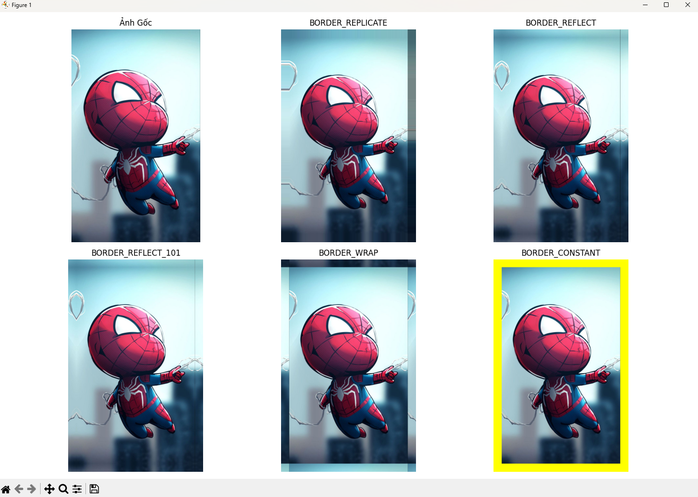
dst = cv.copyMakeBorder(src, top, bottom, left, right, borderType, value)-
borderType:
Type Cách lặp Ví dụ cv.BORDER_CONSTANTTạo viền màu cố định iiiiii \| abcdefgh \| iiiiiiicv.BORDER_REFLECTPhản chiếu ảnh ở biên fedcba \| abcdefgh \| hgfedcbcv.BORDER_REFLECT_101(mặc định của các hàm lọc)Phản chiếu nhưng không lặp lại pixel biên gfedcb \| abcdefgh \| gfedcbacv.BORDER_REPLICATELặp pixel ở biên aaaaaa \| abcdefgh \| hhhhhhhcv.BORDER_WRAPLấy phần đối diện bù vào cdefgh \| abcdefgh \| abcdefg
7. Arithmetic Operations
Gắn với: Bài 2: Số học trên ảnh (Image Arithmetic)
-
Cộng ảnh
- Dùng
cv2.addnếu value mới lớn hơn 255 sẽ bão hòa về 255 - Dùng
x+ynếu value mới lớn hơn 255 thì sẽ tràn số(x + y) % 256
x = np.uint8([[250]]) y = np.uint8([[10]]) # [] not image scalar: [[]]: image 1 pixel, 1 channel, uint8 print("Cộng bằng OpenCV:", cv2.add(x, y)) # Kết quả sẽ là 255 (bão hòa) print("Cộng bằng NumPy:", x + y) # Kết quả sẽ là 4 (tràn số) : 260 mod 256 = 4
- Dùng
-
Trừ ảnh
- Dùng
cv2.subtractnếu value mới nhỏ hơn 0 thì sẽ bão hòa về 0 - Dùng
x-ynếu value mới nhỏ hơn 0 thì sẽ tràn số(x - y) % 256
x = np.uint8([[50]]) y = np.uint8([[100]]) print("Trừ bằng OpenCV:", cv2.subtract(x, y)) # Kết quả sẽ là 0 (bão hòa) print("Trừ bằng NumPy:", x - y) # Kết quả sẽ là 206 (tràn số) : 50 - 100 mod 256 = 206
- Dùng
-
Nhân ảnh
- Dùng
cv2.multiplynếu value mới lớn hơn 255 thì sẽ bão hòa về 255 - Dùng
x*ynếu value mới lớn hơn 255 thì sẽ tràn số(x * y) % 256
print("Nhân bằng OpenCV:", cv2.multiply(x, y)) # Kết quả sẽ là 255 (bão hòa) print("Nhân bằng NumPy:", x * y) # Kết quả sẽ là 136 (tràn số): 50 * 100 = 5000, 5000 mod 256 = 136
- Dùng
-
Trộn hai ảnh với nhau
- \(g(x) = (1 - \alpha) f_0(x) + \alpha f_1(x)\)
- Dùng hàm
cv2.addWeighted(img1, alpha, img2, beta, gamma)=img1*alpha + img2*beta + gamma, để ra công thức trên thìbeta = 1 - alpha - Hai ảnh
img1vàimg2phải cùng kích thước và cùng số kênh - Dùng hàm
cv2.resize(img, (W, H))- chú ý thứ tự (W, H) khác vớiimg.shapelà (H, W, D) - Có thể tạo hiệu ứng
Fade in Fade outbằng cách đổialpha từ 0-1
- Phép toán Bitwise cần mask
| Hàm | Ý nghĩa |
|---|---|
cv.bitwise_and() |
Giữ lại vùng pixel thỏa mask hoặc vùng chung giữa hai ảnh. |
cv.bitwise_or() |
Gộp vùng pixel từ hai ảnh. |
cv.bitwise_not() |
Đảo ngược giá trị pixel hoặc mask. |
cv.bitwise_xor() |
Giữ vùng khác nhau giữa hai ảnh hoặc hai mask. |
- Ứng dụng
- Trích xuất một vùng ảnh bất kỳ.
- Làm việc với ROI không phải hình chữ nhật.
- Tạo mask cho vật thể có hình dạng phức tạp.
- Chèn logo hoặc đối tượng vào ảnh nền mà không làm biến đổi màu sắc.
- Phân tích ý tưởng chèn logo bằng mask:
- Chuẩn bị ảnh logo
- Chuẩn bị vùng ROI trong ảnh có kích thước bằng kích thước ảnh logo
- Mục tiêu là:
- Vùng ROI: nền giữ nguyên và vùng logo bị mask thành đen - inv_mask
- Vùng Logo: nền bị mask thành đen và logo giữ nguyên - mask
- Sau đó dùng
addhai vùng với nhau sẽ thu được vùng mới có nền ảnh gốc và logo là logo cần chèn
- Chuẩn bị mask: chuyển ảnh logo sang
grayscalevà dùngthresholdđể tách ngưỡng - Inv_mask được chuẩn bị bằng
bitwise_not(mask) - Sau khi bitwise hai vùng xong ta thế vùng mới vào ảnh gốc là xong
8. Measure Optimize
Chưa gắn với bài học nào.
Đo thời gian thực hiện code bằng hàm cv2.getTickCount() và cv2.getTickFrequency()
e1 = cv2.getTickCount()e2 = cv2.getTickCount()time_seconds = (e2 - e1) / cv2.getTickFrequency()
Nên dùng các hàm của OpenCV vì chúng được tối ưu riêng cho dữ liệu ảnh
9. Colour Space
Gắn với: Bài 18: Không gian màu (Color Spaces)
- OpenCV cung cấp hơn 150 phương thức chuyển đổi không gian màu khác nhau.
- BGR to Gray
- BGR to RGB - cho hiển thị ảnh bằng matplotlib
- BGR to HSV
-
Hàm dùng để chuyển đổi:
dst = cv2.cvtColor(src, code)
gray = cv2.cvtColor(img, cv2.COLOR_BGR2GRAY) hsv = cv2.cvtColor(img, cv2.COLOR_BGR2HSV)
-
Không gian màu HSV
- Dùng kiểu dữ liệu
uint8
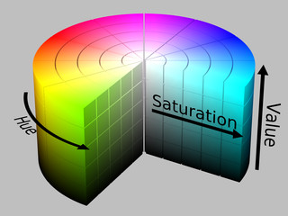
Kênh Ý nghĩa Dải giá trị trong OpenCV H Hue - tông màu 0-179: H = độ / 2 (0-360°) để vừa kiểu uint8 S Saturation - độ bão hòa màu 0-255 V Value - độ sáng 0-255 - Dùng kiểu dữ liệu
-
Tách lọc vật thể theo màu
- Dùng hàm
cv2.inRange(img_hsv, lower, upper)để tạo mask nhị phân- Nếu giá trị pixel trong khoảng từ
lowerđếnupperthì ghim thành 255 còn lại ghim về 0 - Xác định
lowervàupperdùngtrackbarđể tuning
- Nếu giá trị pixel trong khoảng từ
- Dùng phép
bitwise_and(img, img, mask = mask)
- Dùng hàm
- Thông thường:
Lower:H-10, 100, 100Upper:H+10, 255, 255
- Nếu muốn mask nhiều màu thì tạo mask tổng hợp bằng
bitwise_orcủa các mask lẻ- Màu đỏ nằm ở cả hai đầu dải H (gần 0 và gần 179) nên thường phải tạo 2 mask rồi
bitwise_or
- Màu đỏ nằm ở cả hai đầu dải H (gần 0 và gần 179) nên thường phải tạo 2 mask rồi
10. Geometric Transform
Gắn với: Bài 8: Các phép biến đổi hình học (Geometric Transformations)
- Các phép biến đổi hình ảnh:
- Resize, tịnh tiến, xoay, biến đổi affine,
- Phối cảnh (PerspectiveTransform)
-
Tổng quan:
Hàm Matrix Ứng dụng cv2.warpAffine()2x3 Scaling, translation, rotation, affine transform cv2.warpPerspective()3x3 Perspective transform, nắn thẳng ảnh bị nghiêng phối cảnh -
Hàm chung
dst = cv2.warpAffine(src, M, dsize)dst = cv2.warpPerspective(src, M, dsize)- Lưu ý:
dsize : (WxH)khác vớishape (HxWxD)
-
Resize
resized = cv.resize(src, dsize, fx=0, fy=0, interpolation=cv.INTER_LINEAR)- có thể scale theo kích thước
dsize = (WxH)vàfx =0, fy = 0 - có thể scale theo tỷ số tỷ lệ :
fx, fyvàdsize = None -
Các phương pháp nội suy:
Interpolation Khi nên dùng cv2.INTER_AREAThu nhỏ ảnh cv2.INTER_LINEARPhóng to ảnh, mặc định trong OpenCV cv2.INTER_CUBICPhóng to ảnh chất lượng cao hơn nhưng chậm hơn
-
Translation - tịnh tiến ảnh
- Tịnh tiến ảnh theo trục x và y
-
Ma trận tịnh tiến
\[M= \begin{bmatrix} 1 & 0 & dx\\ 0 & 1 & dy \end{bmatrix}\]
-
Hàm dùng:
dst = cv2.warpAffine(img, M, dsize)
-
Rotation - xoay ảnh
-
Ma trận xoay trong toán học : 2x2 → xoay quanh gốc tọa độ (0, 0)
\[M= \begin{bmatrix} \cos\theta & -\sin\theta\\ \sin\theta & \cos\theta \end{bmatrix}\]
-
Chọn các tham số:
- Tâm xoay
- Góc xoay
- Hệ số scale
\[\begin{aligned}\alpha &= \text{scale}\cdot\cos\theta\\\beta &= \text{scale}\cdot\sin\theta\end{aligned}\]
\[M=\begin{bmatrix}\alpha & \beta & (1-\alpha)\,\mathrm{center.x}-\beta\,\mathrm{center.y}\\-\beta & \alpha & \beta\,\mathrm{center.x}+(1-\alpha)\,\mathrm{center.y}\end{bmatrix}\]
- Dấu của \(\beta\) ngược với ma trận toán học ở trên vì trục y của ảnh hướng xuống: góc dương = xoay ngược chiều kim đồng hồ khi nhìn trên ảnh
-
Hàm để tính M
M = cv.getRotationMatrix2D(center, angle, scale)
-
-
Biến đổi Affine:
- Giữ tính chất song song của đường thẳng (đường thẳng vẫn là đường thẳng)
- Ví dụ: A//B thì A’//B’
-
Các bước biến đổi Affine: 2x3
- Chọn 3 điểm (không thẳng hàng) trên ảnh gốc
- Chọn 3 điểm tương ứng trên ảnh đích
- Dùng
cv2.getAffineTransform() - Áp dụng
cv2.warpAffine()
height, width = img.shape[:2] pts1 = np.float32([ [50, 50], [200, 50], [50, 200], ]) pts2 = np.float32([ [10, 100], [200, 50], [100, 250], ]) M = cv.getAffineTransform(pts1, pts2) dst = cv.warpAffine(img, M, (width, height))
- Giữ tính chất song song của đường thẳng (đường thẳng vẫn là đường thẳng)
-
Biến đổi phối cảnh (Perspective Transform)
- Không giữ tính chất song song nhưng đường thẳng vẫn là đường thẳng
- Ứng dụng:
- Nắn thẳng giấy tờ bị chụp nghiêng
- Nắn tem nhãn, mã vạch, QR code
- Căn chỉnh bảng mạch PCB trên băng truyền
- Trích vùng biển báo, mặt phẳng, bảng số hoặc lưới Sudoku
-
Các bước biến đổi phối cảnh:
- Chọn 4 điểm trên ảnh gốc
- Chọn 4 điểm tương ứng trên ảnh mới
- Đảm bảo không có 3 điểm nào trong 4 điểm bị thẳng hàng
- Dùng
cv2.getPerspectiveTransform() - Áp dụng bằng
cv2.warpPerspective()
pts1 = np.float32([ [56, 65], [368, 52], [28, 387], [389, 390], ]) pts2 = np.float32([ [0, 0], [300, 0], [0, 300], [300, 300], ]) M = cv.getPerspectiveTransform(pts1, pts2) dst = cv.warpPerspective(img, M, (300, 300))
11. Thresholding
Gắn với: Bài 3: Phân ngưỡng, Co và Giãn (Thresholding, Erosion, and Dilation)
- Thường áp dụng với ảnh xám
- Ứng dụng thông thường là tạo mask
-
Nhị phân hóa cố định - Simple thresholding
- Dùng một ngưỡng thresh cho toàn bộ ảnh - Global thresh
- Hàm:
ret, dst = cv.threshold(src, thresh, maxval, type)
-
Type thresholding:
-
cv2.THRESH_BINARY:ghim về Max nếu lớn hơn ngưỡng và ngược lại\[g(p)=\begin{cases}M, & p > T\\0, & p \le T\end{cases}\]
-
cv2.THRESH_BINARY_INV:ghim về 0 nếu lớn hơn ngưỡng và ngược lại\[g(p)=\begin{cases}0, & p > T\\M, & p \le T\end{cases}\]
-
cv2.THRESH_TRUNC:ghim về ngưỡng nếu lớn hơn ngưỡng, còn giữ giá trị nếu nhỏ hơn\[g(p)=\begin{cases}T, & p > T\\p, & p \le T\end{cases}\]
-
cv2.THRESH_TOZERO:Giữ giá trị nếu lớn hơn ngưỡng, ngược lại ghim về 0\[g(p)=\begin{cases}p, & p > T\\0, & p \le T\end{cases}\]
-
cv2.THRESH_TOZERO_INV:Giữ giá trị nếu nhỏ hơn ngưỡng, ngược lại ghim về 0\[g(p)=\begin{cases}0, & p > T\\p, & p \le T\end{cases}\]
ret, thresh1 = cv.threshold(img, 127, 255, cv.THRESH_BINARY) ret, thresh2 = cv.threshold(img, 127, 255, cv.THRESH_BINARY_INV) ret, thresh3 = cv.threshold(img, 127, 255, cv.THRESH_TRUNC) ret, thresh4 = cv.threshold(img, 127, 255, cv.THRESH_TOZERO) ret, thresh5 = cv.threshold(img, 127, 255, cv.THRESH_TOZERO_INV)
-
-
Adaptive thresholding
- Với Simple thresholding nếu ánh sáng không đều - vùng sáng mạnh, vùng tối hoặc bị đổ bóng khi dùng 1 ngưỡng duy nhất cho toàn bộ bức ảnh sẽ cho kết quả không tốt
- Adaptive : tính ngưỡng riêng lẻ cho từng vùng lân cận mỗi pixel
dst = cv.adaptiveThreshold( src, maxValue, adaptiveMethod, thresholdType, blockSize, C, )
Tham số Ý nghĩa srcẢnh xám đầu vào maxValueGán giá trị cho pixel thỏa mãn điều kiện adaptiveMethodCách tính ngưỡng cục bộ - Local thresholdTypeThường dùng cv2.THRESH_BINARYorcv2.THRESH_BINARY_INVblockSizeKích thước vùng lân cận - số lẻ lớn hơn 1 CHằng số trừ đi khỏi giá trị trung bình cục bộ -
Adaptive Mean - trọng số đều nhau với các pixel
cv2.ADAPTIVE_THRESH_MEAN_C
\[T(x,y)=\left(\frac{1}{N}\sum_{(i,j)\in\Omega(x,y)} I(i,j)\right)-C\]
-
Adaptive Gaussian - ưu tiên trọng số với các pixel trung tâm
cv2.ADAPTIVE_THRESH_GAUSSIAN_C
\[T(x,y)=\left(\sum_{(i,j)\in\Omega(x,y)} w(i,j)\,I(i,j)\right)-C, \quad \sum w(i,j) = 1\]
- Trọng số Gaussian \(w\) đã chuẩn hóa tổng bằng 1 nên không chia thêm cho \(N\)
th2 = cv.adaptiveThreshold( img, 255, cv.ADAPTIVE_THRESH_MEAN_C, cv.THRESH_BINARY, 11, 2, ) th3 = cv.adaptiveThreshold( img, 255, cv.ADAPTIVE_THRESH_GAUSSIAN_C, cv.THRESH_BINARY, 11, 2, )
-
Threshold Otsu
- Thường lọc nhiễu trước khi áp dụng Otsu
- Tự động phân tích histogram ảnh để tìm ngưỡng tối ưu
- Otsu hoạt động tốt nhất với ảnh lưỡng đỉnh - Histogram hai đỉnh
- Một cụm cho nền
- Một cụm cho vật thể
-
Ngưỡng tối ưu thường nằm ở vùng thung lũng giữa hai cụm này
blur = cv.GaussianBlur(img, (5, 5), 0) ret3, th3 = cv.threshold(blur, 0, 255, cv.THRESH_BINARY + cv.THRESH_OTSU)
- Tham số ngưỡng (0) bị bỏ qua, ngưỡng Otsu tìm được trả về ở
ret3
- Tham số ngưỡng (0) bị bỏ qua, ngưỡng Otsu tìm được trả về ở
-
Công thức Otsu
- Với một ngưỡng t, Histogram của ảnh chia làm hai lớp
- \(C_1\) : các mức xám từ 0 đến \(t-1\)
- \(C_2\) : các mức xám từ \(t\) đến \(L-1\)
- Với ảnh
uint8\(L = 256\)
- Ngưỡng t được tìm bằng cách tìm Min của phương trình sau:
- \(\sigma_w^2(t)=q_1(t)\sigma_1^2(t)+q_2(t)\sigma_2^2(t)\)
- Xác suất tích lũy của hai lớp
- \(q_1(t)=\sum_{i=0}^{t-1} P(i)\)
- \(q_2(t)=\sum_{i=t}^{L-1} P(i)\)
- Giá trị trung bình của hai lớp
- Chia cho \(q_i(t)\) để xác suất trong mỗi lớp có tổng bằng 1 (xác suất có điều kiện)
- \[\mu_1(t)=\sum_{i=0}^{t-1}\frac{i \cdot P(i)}{q_1(t)}\]
- \[\mu_2(t)=\sum_{i=t}^{L-1}\frac{i \cdot P(i)}{q_2(t)}\]
- Phương sai của hai lớp
- Chia cho \(q_i(t)\) với cùng lý do như trên
- \[\sigma_1^2(t)=\sum_{i=0}^{t-1}\frac{(i - \mu_1(t))^2 \cdot P(i)}{q_1(t)}\]
- \[\sigma_2^2(t)=\sum_{i=t}^{L-1}\frac{(i - \mu_2(t))^2 \cdot P(i)}{q_2(t)}\]
- Với một ngưỡng t, Histogram của ảnh chia làm hai lớp
12. Smoothing
Gắn với: Bài 11: Làm trơn và Kim tự tháp Gauss (Smoothing and Gaussian Pyramids)
- Tần số: tốc độ thay đổi giá trị pixel theo không gian
- Pixel kề nhau thay đổi ít (ví dụ 0 → 1) → tần số thấp: vùng phẳng, mảng màu
- Pixel kề nhau thay đổi đột ngột (ví dụ 0 → 100) → tần số cao: cạnh, chi tiết nhỏ, nhiễu
| Loại bộ lọc | Vai trò |
|---|---|
| Low-Pass Filter | Làm mịn ảnh, giảm nhiễu, làm mờ chi tiết nhỏ |
| High-Pass Filter | Làm nổi bật cạnh, biên và chi tiết tần số cao |
-
Tích chập 2D
dst = cv.filter2D(src, ddepth, kernel)src: ảnh đầu vàoddepth:độ sâu ảnh đầu ra. Dùng -1 để giữ giống ảnh gốckernel:ma trận lọc để tích chậpdst:ảnh kết quả sau khi lọc
-
Cơ chế hoạt động
- Duyệt kernel qua từng vùng ảnh
- Nhân từng phần tử trong kernel với pixel tương ứng
- Cộng các kết quả lại
- Gán kết quả cho pixel trung tâm
- Lặp lại cho toàn bộ ảnh
- Lưu ý:
filter2Dthực chất tính tương quan (correlation), không lật kernel; với kernel đối xứng thì kết quả giống tích chập
kernel = np.ones((5, 5), np.float32) / 25 dst = cv.filter2D(img, -1, kernel)
-
Các kĩ thuật làm mờ ảnh
- Giảm nhiễu và làm mịn chi tiết, nhưng cũng có thể làm mềm cạnh vật thể
Bộ lọc Hàm OpenCV Đặc điểm chính Averaging/ Box Filter cv2.blur(), cv2.boxFilter()Lấy trung bình vùng lân cận Gaussian Blur cv2.GaussianBlur()Trọng số cao với pixel trung tâm, giảm dần ra biên Median Blur cv2.medianBlur()Lấy trung vị, tốt với nhiễu muối tiêu Bilateral Filter cv2.bilateralFilter()Giảm nhiễu, giữ cạnh tốt, nhưng chạy chậm -
Lọc trung bình
-
Kernel 3x3
\[M=\frac{1}{9} \begin{bmatrix} 1 & 1 & 1\\ 1 & 1 & 1\\ 1 & 1 & 1 \end{bmatrix}\]
-
Hàm :
blur = cv.blur(img, (5, 5)) - Kernel càng lớn ảnh càng mờ
cv2.blur(): tương đươngcv2.boxFilter(normalize = True)
dst = cv2.blur(img, (5, 5)) # tương đương: dst = cv2.boxFilter(img, -1, (5, 5), normalize=True) dst2 = cv2.boxFilter(img, -1, (5, 5), normalize=False) # -1 : ddepth # không chia trọng số (chỉ cộng) nên nếu quá 255 thì sẽ bão hòa ở 255
-
-
Lọc Gaussian
-
Hàm :
blur_gaussian = cv.GaussianBlur(src, ksize, sigmaX, sigmaY=0)src: ảnh đầu vàoksize: kích thước kernel, số lẻsigmaX: độ lệch chuẩn theo trục XsigmaY: độ lệch chuẩn theo trục Y- nếu
sigmaX = 0thì OpenCV tự tính từksize; nếusigmaY = 0thì lấy bằngsigmaX
blur_gaussian = cv2.GaussianBlur(img, (5, 5), 0)
-
-
Lọc trung vị
- Thay pixel trung tâm bằng trung vị của các pixel trong vùng kernel
- Hàm:
median = cv.medianBlur(src, ksize) - Hiệu quả tốt với nhiễu muối tiêu vì nhiễu muối tiêu là các pixel lẻ có giá trị cực trị (0 hoặc 255); trung vị bỏ qua các giá trị ngoại lai này nên không làm loang nhiễu như lọc trung bình
ksizelà số lẻ lớn hơn 1
- Lọc song phương
- Hàm
blur_bilateral = cv.bilateralFilter(src, d, sigmaColor, sigmaSpace)src: ảnh đầu vàod: Đường kính vùng lân cận được xétsigmaColor: Mức lọc theo khác biệt màu/cường độsigmaSpace: Mức lọc theo khoảng cách không gian
- Ý tưởng chính
- Gaussian theo không gian: Pixel gần nhau có độ ảnh hưởng nhiều hơn
- Gaussian theo cường độ màu: Pixel có màu gần giống nhau có ảnh hưởng nhiều hơn
- Hàm
13. Morphological Transform
Gắn với: Bài 3: Phân ngưỡng, Co và Giãn (Thresholding, Erosion, and Dilation)
- Các phép hình thái học: Erosion, dilation, opening, closing, morphological gradient, top hat, black hat.
- Tổng quan:
| Phép toán | Công thức | Hàm OpenCV | Ứng dụng |
|---|---|---|---|
| Erosion | Bào mòn vùng trắng | cv.erode() |
Xóa nhiễu trắng nhỏ, tách vật thể dính nhau. |
| Dilation | Giãn nở vùng trắng | cv.dilate() |
Nối nét đứt, làm dày vật thể. |
| Opening | Erosion rồi Dilation | cv.MORPH_OPEN |
Xóa nhiễu trắng nhỏ. |
| Closing | Dilation rồi Erosion | cv.MORPH_CLOSE |
Lấp lỗ đen nhỏ. |
| Gradient | Dilation(A)−Erosion(A) | cv.MORPH_GRADIENT |
Trích biên vật thể. |
| Top Hat | A−Opening(A) | cv.MORPH_TOPHAT |
Trích chi tiết sáng nhỏ. |
| Black Hat | Closing(A)−A | cv.MORPH_BLACKHAT |
Trích chi tiết tối nhỏ. |
- Yêu cầu hai thành phần đầu vào:
- Ảnh đầu vào: Thường là ảnh nhị phân, vật thể tiền cảnh màu trắng và nền màu đen (cũng áp dụng được cho ảnh xám)
- Structuring kernel: Kernel áp dụng trên ảnh
- Quy ước xử lý:
- Vật thể cần xử lý nên là màu trắng 255 hoặc 1
- Nền nên là màu đen
-
Chuẩn bị kernel
kernel = np.ones((5, 5), np.uint8)kernel = cv.getStructuringElement(shape, ksize)-
Các shape phổ biến:
Shape Ý nghĩa Cách chọn cv2.MORPH_RECTKernel hình chữ nhật Vật thể dạng khối, cạnh vuông cv2.MORPH_ELLIPSEKernel hình ellip hoặc hình tròn Vật thể tròn, oval, lỗ tròn cv2.MORPH_CROSSKernel hình chữ thập Khi muốn tác động theo hướng ngang dọc hơn là chéo
-
Erosion - Phép bào mòn ảnh
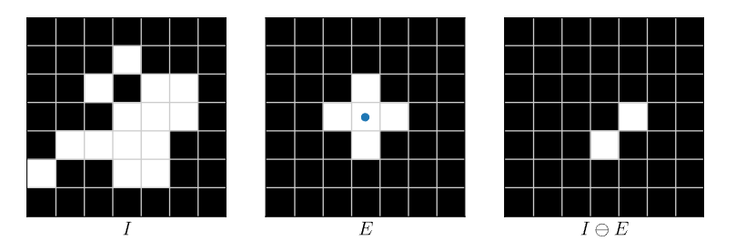
kernel = np.ones((5, 5), np.uint8) erosion = cv.erode(img, kernel, iterations=1)
- Thu hẹp vùng trắng trong ảnh
- Cơ chế:
- Kernel trượt qua từng vị trí trên ảnh
- Pixel trung tâm giữ giá trị trắng nếu toàn bộ vùng dưới kernel đều là màu trắng
- Nếu có ít nhất một giá trị trong vùng kernel là đen, pixel trung tâm bị gán về đen
- Kết quả:
- Vật thể trắng bị nhỏ lại
- Biên vật thể bị bào mòn
- Nhiễu trắng có thể bị loại bỏ
- Ứng dụng:
- Xóa nhiễu trắng nhỏ
- Tách hai vật thể trắng đang dính sát nhau
- Làm mỏng vùng tiền cảnh
-
Dilation - Phép giãn nở ảnh
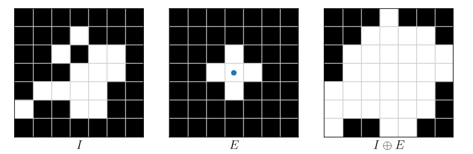

dilation = cv.dilate(src, kernel, iterations=1)- Mở rộng vùng trắng trong ảnh
- Cơ chế:
- Kernel trượt qua từng vị trí trên ảnh
- Pixel trung tâm được gán trắng nếu có ít nhất một pixel trong vùng kernel là trắng
- Kết quả:
- Vật thể trắng lớn hơn
- Biên vật thể dày hơn
- Các khe hở hoặc đứt gãy nhỏ có thể được nối lại
- Ứng dụng:
- Nối các vết đứt nhỏ
- Làm dày đường nét
- Khôi phục kích thước vật thể sau erosion
-
Opening - Phép toán mở
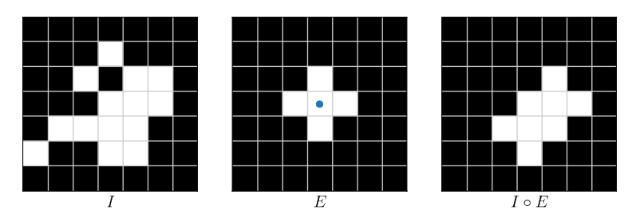
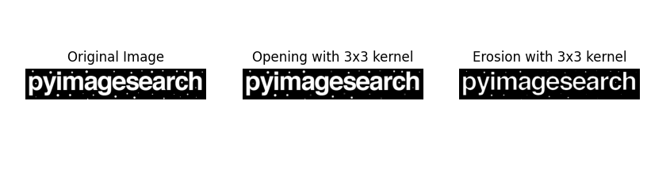
- Opening là erosion trước, sau đó dilation
- \(\text{Opening}(A)=\text{Dilation}(\text{Erosion}(A))\)
opening = cv.morphologyEx(img, cv.MORPH_OPEN, kernel)- Ý nghĩa:
- Erosion xóa nhiễu trắng nhỏ
- Dilation khôi phục lại kích thước tương đối của vật thể chính
- Ứng dụng:
- Loại bỏ nhiễu trắng nhỏ xung quanh vật thể
- Làm sạch ảnh nhị phân sau threshold
-
Closing - Phép toán đóng
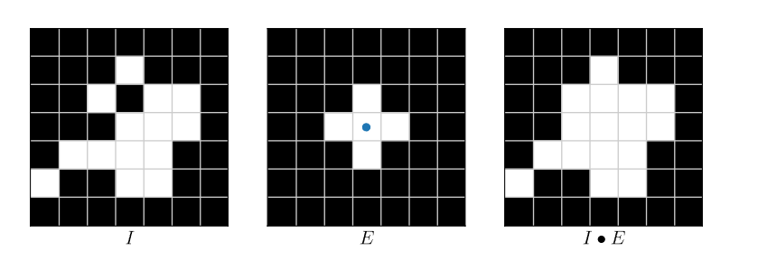
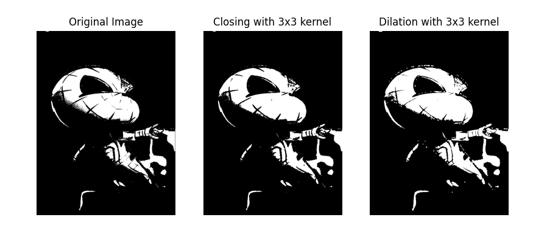
- Closing là dilation trước, sau đó erosion
- \(\text{Closing}(A)=\text{Erosion}(\text{Dilation}(A))\)
closing = cv.morphologyEx(img, cv.MORPH_CLOSE, kernel)- Ý nghĩa:
- Dilation lấp khe hở nhỏ hoặc lỗ đen nhỏ
- Erosion đưa vật thể về kích thước hợp lý hơn
- Ứng dụng:
- Lấp lỗ đen bên trong vật thể
- Nối các vùng trắng với nhau
- Xóa nhiễu đen nhỏ trên vật thể trắng
-
Morphological Gradient
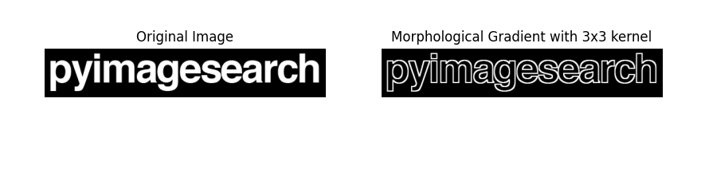
- Morphological Gradient là hiệu giữa ảnh dilation và ảnh erosion
- \(\text{Gradient}(A)=\text{Dilation}(A)-\text{Erosion}(A)\)
gradient = cv.morphologyEx(img, cv.MORPH_GRADIENT, kernel)- Kết quả:
- Thường là đường viền của vật thể
- Ứng dụng:
- Trích biên ngoài của vật thể
- Làm nổi bật outline (đường viền) trong ảnh nhị phân
-
Top Hat
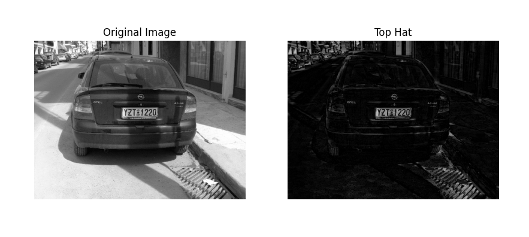
- Làm việc với ảnh grayscale
- Làm nổi bật part sáng trên nền tối
- Top Hat là hiệu giữa ảnh gốc và ảnh sau opening
-
\(\text{TopHat}(A)=A-\text{Opening}(A)\)
kernel_9x9 = np.ones((9, 9), np.uint8) tophat = cv.morphologyEx(img, cv.MORPH_TOPHAT, kernel_9x9)
-
Ứng dụng:
- Trích các chi tiết sáng nhỏ hơn kernel (opening xóa các chi tiết sáng nhỏ nên lấy ảnh gốc trừ đi sẽ còn lại đúng các chi tiết đó)
- Phát hiện đốm sáng trên nền có độ sáng không đồng đều
- Tăng cường chi tiết sáng nhỏ trên ảnh
-
Black Hat
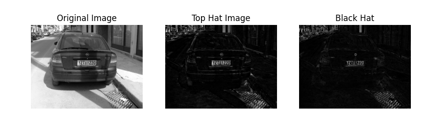
- Làm việc với ảnh grayscale
- Làm nổi bật part tối trên nền sáng
- Black Hat là hiệu giữa ảnh sau closing và ảnh gốc
- \(\text{BlackHat}(A)=\text{Closing}(A)-A\)
blackhat = cv.morphologyEx(img, cv.MORPH_BLACKHAT, kernel)- Ứng dụng:
- Trích các chi tiết tối nhỏ (closing lấp các lỗ đen nhỏ nên trừ đi ảnh gốc sẽ còn lại đúng các lỗ đó)
- Phát hiện vết nứt, lỗ thủng hoặc vùng tối trên nền vật thể sáng
- Làm nổi bật chi tiết tối trên nền không đồng đều
14. Gradients
Gắn với: Bài 12: Đạo hàm và Phát hiện biên (Differentiation and Edge Detection)
- Trích xuất gradients của ảnh, để tìm đường biên (outline - có độ biến thiên giá trị pixel cao) đặc trưng bằng các bộ lọc thông cao (High-pass filters)
| Cú pháp hàm | Tham số cốt lõi cần nhớ | Đặc trưng thuật toán |
|---|---|---|
cv.Sobel() |
src,ddepth,dx,dy,ksize |
Tính đạo hàm bậc một. Cho phép tách biệt rõ rệt hướng cạnh ngang hoặc cạnh dọc. Chống nhiễu tốt nhờ tích hợp Gaussian. |
cv.Scharr() |
src,ddepth,dx,dy |
Phiên bản tối ưu hơn của Sobel với kernel 3×3. Thường cho kết quả đạo hàm chính xác hơn Sobel 3×3. |
cv.Laplacian() |
src,ddepth,ksize |
Tính đạo hàm bậc hai tổng hợp. Phát hiện nhanh toàn bộ đường biên theo mọi hướng cùng lúc, nhưng nhạy cảm với nhiễu hơn Sobel. |
-
Gradient bằng Sobel và Scharr
- Kết hợp giữa:
- Làm mịn Gaussian
- Phép đạo hàm sai biệt
Derivative×Gaussian- \(\frac{\partial I}{\partial x} = I(x+1, y) - I(x-1, y)\) → \(dx = [-1, 0, 1]\)
- \(\frac{\partial I}{\partial y} = I(x, y+1) - I(x, y-1)\) → \(dy = [-1, 0, 1]^T\)
- Đạo hàm theo x (dx) thì làm mượt Gaussian theo y → \(Ga_y = [1, 2, 1]^T\)
- Đạo hàm theo y (dy) thì làm mượt Gaussian theo x → \(Ga_x = [1, 2, 1]\)
- Với Scharr thì \(Ga_y = [3, 10, 3]^T\) và \(Ga_x = [3, 10, 3]\)
- Sobel xấp xỉ:
- Chính xác nhất với cạnh ngang/dọc (0°, 90°), sai số góc lớn hơn ở các hướng chéo
- Hay phát hiện cạnh giả do nhiễu
- Cạnh dày
- \(K_x = Ga_y * dx = \begin{bmatrix}-1 & 0 & 1 \\-2 & 0 & 2 \\-1 & 0 & 1\end{bmatrix}\): đạo hàm theo x (theo cột) → tìm cạnh dọc
- \(K_y = dy *Ga_x = \begin{bmatrix}-1 & -2 & -1 \\0 & 0 & 0 \\1 & 2 & 1\end{bmatrix}\): đạo hàm theo y (theo hàng) → tìm cạnh ngang
- Scharr (cùng quy ước dấu với Sobel ở trên, giống kernel của OpenCV):
- Sai số góc nhỏ hơn nhiều, chính xác ở mọi hướng
- \[K_x = Ga_y * dx = \begin{bmatrix}-3 & 0 & 3 \\-10 & 0 & 10 \\-3 & 0 & 3\end{bmatrix}\]
- \[K_y = dy *Ga_x = \begin{bmatrix}-3 & -10 & -3 \\0 & 0 & 0 \\3 & 10 & 3\end{bmatrix}\]
- \(G = \sqrt{G_x^2 + G_y^2}\) hoặc có thể tăng tốc độ bằng \(G \approx |G_x| + |G_y|\)
- \[\theta = \operatorname{atan2}(G_y, G_x)\times\frac{180}{\pi}\]
- Có khả năng chống nhiễu hạt tốt
# Lưu ý: Sử dụng kiểu dữ liệu cv.CV_64F để giữ lại các giá trị âm (tránh mất biên) # ksize = -1, OpenCV sẽ kích hoạt bộ lọc Scharr kích thước 3×3 sobelx = cv.Sobel(img, cv.CV_64F, 1, 0, ksize=5) # xorder=1, yorder=0 -> Chỉ tìm cạnh dọc sobely = cv.Sobel(img, cv.CV_64F, 0, 1, ksize=5) # xorder=0, yorder=1 -> Chỉ tìm cạnh ngang
- Kết hợp giữa:
-
Gradient bằng Laplacian
-
Tính toán đạo hàm bậc hai của ảnh dựa trên phương trình:
- \[\Delta img = \frac{\partial^2 img}{\partial x^2} + \frac{\partial^2 img}{\partial y^2}\]
- Mỗi thành phần đều được xấp xỉ bằng cách tính dựa trên các toán tử Sobel
-
Với
ksize = 1\[\begin{bmatrix}0 & 1 & 0 \\1 & -4 & 1 \\0 & 1 & 0\end{bmatrix}\]
-
laplacian = cv.Laplacian(img, cv.CV_64F)
-
-
Vấn đề: Mất cạnh hoặc tràn số
- Kiểu dữ liệu đầu ra của đạo hàm
- Gradient có thể mang dấu âm dương tùy vào dx, dy:
- Đen→Trắng : +
- Trắng→Đen: -
- Do đó nếu ép kiểu
np.uint8hoặccv2.CV_8U- Mọi số âm sẽ bị ép cứng về 0 → điều này sẽ làm mất cạnh thuộc vùng dịch chuyển Trắng → Đen
-
Giải pháp 1:
ddepth = cv2.CV_64Fhoặccv2.CV_16S- Lấy giá trị tuyệt đối bằng hàm
np.absolute - Sau đó ép kiểu ma trận ngược lại về dạng
np.uint8 - Cẩn thận: giá trị tuyệt đối có thể lớn hơn 255,
np.uint8()sẽ tràn số (quay vòng) thay vì bão hòa → nênnp.clip(..., 0, 255)hoặccv2.normalizetrước, hoặc dùng giải pháp 2
sobelx64f = cv.Sobel(img, cv.CV_64F, 1, 0, ksize=5) abs_sobel64f = np.absolute(sobelx64f) sobel_8u = np.uint8(abs_sobel64f)
-
Giải pháp 2:
- Dùng thẳng hàm
cv2.convertScaleAbs(lấy trị tuyệt đối rồi bão hòa vềuint8) - Sau đó tính
G = cv2.addWeighted
# Sobel operator and converting the result to uint8 sobelx = cv2.Sobel(img1, cv2.CV_64F, 1, 0, ksize = 5) sobely = cv2.Sobel(img1, cv2.CV_64F, 0, 1, ksize = 5) sobelx_1 = cv2.convertScaleAbs(sobelx) sobely_1 = cv2.convertScaleAbs(sobely) # Combining the two gradients sobel_combined_1 = cv2.addWeighted(sobelx_1, 0.5, sobely_1, 0.5, 0)
- Cũng có thể dùng L2 norm sau đó normalize :
# Using the L2 norm to combine the gradients sobel_combined_2 = cv2.magnitude(sobelx, sobely) sobel_combined_2_normalized = cv2.normalize(sobel_combined_2, None, 0, 255, cv2.NORM_MINMAX)
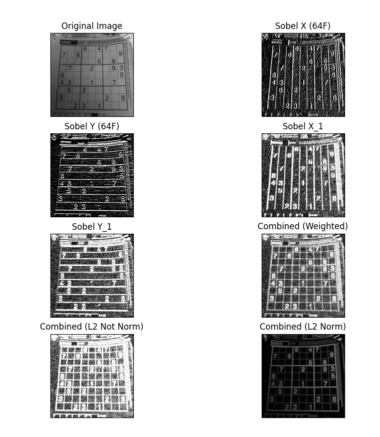
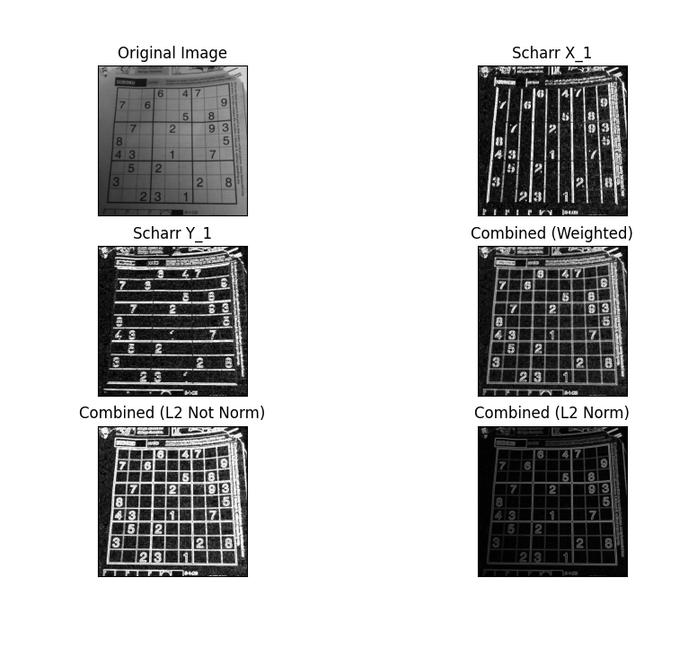
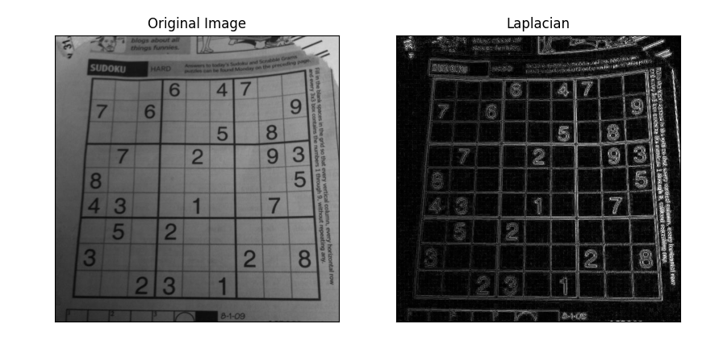
- Dùng thẳng hàm
15. Canny edge
Gắn với: Bài 12: Đạo hàm và Phát hiện biên (Differentiation and Edge Detection)
| Đặc tính hình học | Toán tử Sobel | Thuật toán Canny |
|---|---|---|
| Bản chất kiến trúc | Phép toán lọc đạo hàm bậc một, gồm 1 bước chính. | Quy trình xử lý đa giai đoạn: lọc nhiễu, khử cực đại và ngưỡng trễ. |
| Độ dày đường biên | Dày và nhòe, thường có nhiều pixel chồng lấn. | Mỏng tuyệt đối, rộng đúng 1 pixel nhờ bước NMS. |
| Khả năng chống nhiễu | Trung bình, dễ bị sót các hạt nhiễu sáng rải rác. | Tốt, lọc bỏ nhiễu cô lập nhờ bước hysteresis. |
| Kết quả đầu ra | Ảnh xám chứa biên độ dốc thực tế. | Ảnh nhị phân thuần túy, cạnh trắng trên nền đen. |
-
Quy trình của thuật toán Canny
- GD1: Giảm nhiễu
- Cho ảnh grayscale đầu vào qua bộ lọc Gaussian 5x5
- Lưu ý:
cv2.Cannykhông tự làm mờ, bước này phải tự gọiGaussianBlurtrước
- GD2: Tìm gradient cường độ ảnh
- \(G = \sqrt{G_x^2 + G_y^2}\) or \(G \approx |G_x| + |G_y|\)
- \(\theta = \text{atan2}(G_y, G_x)\)
- Hướng của gradient luôn vuông góc với đường biên của cạnh
- Giá trị góc này sẽ được làm tròn về 1 trong 4 hướng: 0°, 45°, 90°, 135°
- GD3: Triệt tiêu phi cực đại - Loại trừ cạnh dày
- Tại mỗi pixel A kiểm tra xem \(G_A\) có max trong vùng lân cận dọc theo Gradient không
- Nếu \(G_A\) max thì sẽ giữ lại
- Nếu \(G_A\) không phải là max thì là cạnh giả đặt về 0 ( nền đen)
-
GD4: Ngưỡng trễ:
- Chọn hai ngưỡng
minValvàmaxVal - Cạnh chắc chắn (Sure-edge): \(G_A\) >
maxVal - Không phải cạnh (Non-edge): \(G_A\) <
minVal - Cạnh yếu (Weak-edge):
minVal< \(G_A\) <maxVal- Nếu A kết nối với một cạnh chắc chắn thì nó được thăng cấp thành cạnh
- Nếu A bị cô lập với cạnh chắc chắn thì xóa bỏ nó
- Hệ quả:
- Loại bỏ các đốm nhỏ nhiễu pixel, cạnh giả
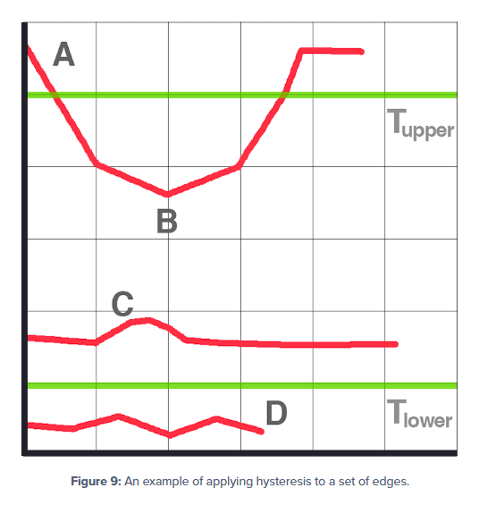
- Chọn hai ngưỡng
- GD1: Giảm nhiễu
-
Hàm
cv2.Canny(image, threshold1, threshold2, apertureSize=3, L2gradient=False) -
Nhớ áp dụng bộ lọc
blur = cv2.GaussianBlur(img, (5, 5), 0)Tham số Ý nghĩa imageẢnh đầu vào, thường là ảnh xám 8-bit. threshold1Giá trị ngưỡng thấp ( minVal).threshold2Giá trị ngưỡng cao ( maxVal).apertureSizeKích thước của mặt nạ Sobel dùng để tính gradient ở giai đoạn 2. Mặc định bằng 3.L2gradientQuyết định công thức tính độ lớn gradient \(G\). Mặc định là False.- \(G = \sqrt{G_x^2 + G_y^2}\) nếu
L2gradient = True - \(G \approx |G_x| + |G_y|\) nếu
L2gradient = False
- \(G = \sqrt{G_x^2 + G_y^2}\) nếu
16. Pyramids and Image Blending
Gắn với: Bài 13: Đạo hàm bậc hai và Toán tử Laplace (Second Derivatives and the Laplacian)
| Tên hàm OpenCV | Bản chất phép toán | Tác động lên lưới pixel |
|---|---|---|
cv.pyrDown(src) |
Lọc Gaussian → bỏ các hàng/cột xen kẽ. | Thu nhỏ: giảm chiều rộng và chiều cao đi một nửa, tức còn 1/4 diện tích. |
cv.pyrUp(src) |
Chèn thêm hàng/cột toàn 0 → lọc Gaussian để nội suy. | Phóng to: nhân đôi chiều rộng và chiều cao, tức tăng 4 lần diện tích. Ảnh bị mờ nhẹ. |
- Vấn đề là nếu chỉ làm việc với ảnh có kích thước cố định thì trong bài toán nhận diện vật thể qua camera mà không thể biết được vật cần nhận diện xuất hiện với kích thước như thế nào
- Giải pháp:
- Dùng Pyramids tạo ra tập hợp các ảnh giống nhau có độ phân giải giảm dần, xếp chồng lên nhau
- Ảnh gốc có độ phân giải cao nhất nằm ở đáy
- Ảnh nhỏ nhất nằm ở đỉnh
- Có hai loại Pyramids:
- Gaussian Pyramid
- Laplacian Pyramid
- Gaussian Pyramid
- Mỗi tầng được tạo từ tầng ngay dưới nó (lớn hơn) bằng cách lọc Gaussian rồi bỏ xen kẽ hàng và cột
- Ban đầu MxN → \(\frac{M}{2} \times \frac{N}{2}\)
cv.pyrDown(): Thu nhỏ ảnh xuống một tầng, giảm 4 lần diện tích.cv.pyrUp(): Phóng to ảnh lên một tầng, tăng 4 lần diện tích.- Lưu ý do khi DownSample thì các chi tiết có tần số cao có thể biến mất vĩnh viễn và phép phóng to chỉ là phép nội suy làm mờ ảnh
- Laplacian Pyramid
- Công thức xây dựng một tầng của Laplacian:
- \(L_i = G_i - \text{pyrUp}(G_{i+1})\)
- Ý nghĩa
- \(G_i\) tầng còn giữ được phần nào các chi tiết có tần số cao
- \(G_{i+1}\) là downSample của \(G_i\) và đã mất đi vĩnh viễn các chi tiết có tần số cao
- \(\text{pyrUp}(G_{i+1})\) là nội suy làm mờ ảnh ngược lại về \(G'_i\) đã không còn các chi tiết tần số cao
- \(L_i\) là hiệu giữa \(G_i\) và \(G'_i\) giữ lại các chi tiết có tần số cao khi DownSample bị mất
- Công thức xây dựng một tầng của Laplacian:
-
Image Blending
- Vấn đề nếu ghép ảnh trực tiếp bằng hàm
np.hstackthì ranh giới vết cắt sẽ bị gãy đột ngột tạo cảm giác rất giả và lộ vết cắt
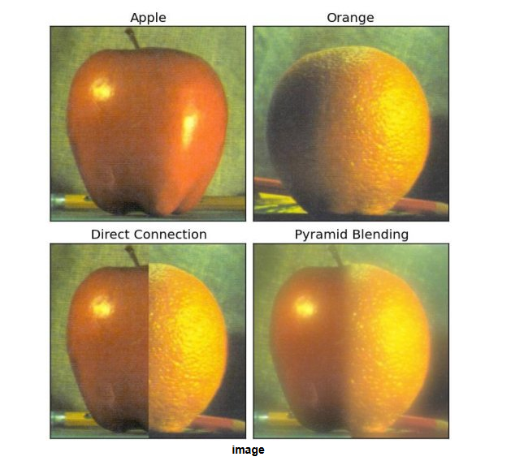
-
Ý tưởng là:
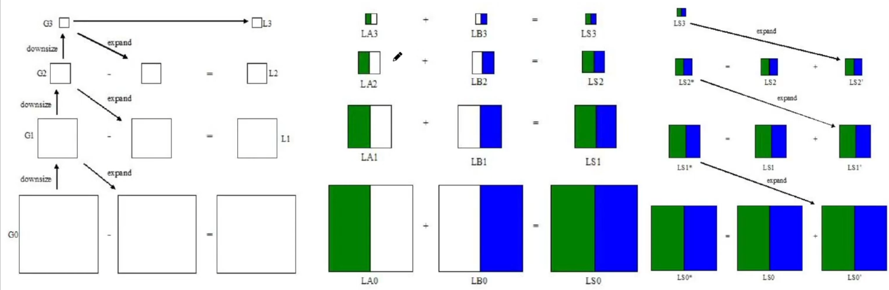
- Gaussian Pyramid lưu thành phần tần số thấp (ảnh ngày càng mờ sau mỗi lần Downsample).
- Laplacian Pyramid lưu các chi tiết/tần số cao bị mất khi Downsample.
- Tính Gaussian Pyramid và Laplacian Pyramid cho cả hai ảnh.
- Ghép (blend) các tầng Laplacian của hai ảnh (ví dụ: nửa trái từ ảnh A, nửa phải từ ảnh B) và ghép cả tầng Gaussian nhỏ nhất.
- Khôi phục ảnh bằng cách bắt đầu từ tầng Gaussian nhỏ nhất đã ghép, sau đó lặp lại:
pyrUp()- cộng với Laplacian đã ghép ở tầng tương ứng.
- Lặp cho đến khi trở về kích thước ban đầu để thu được ảnh blend mượt, không xuất hiện đường nối rõ như khi ghép trực tiếp.
- Lý do vết nối mượt: mỗi dải tần số được trộn ở đúng tỷ lệ của nó. Thành phần tần số thấp (màu sắc, độ sáng ở tầng Gaussian nhỏ nhất) được trộn trên một vùng chuyển tiếp rộng, còn chi tiết tần số cao (các tầng Laplacian lớn) được trộn trên vùng hẹp nên vẫn sắc nét
- Vấn đề nếu ghép ảnh trực tiếp bằng hàm
17. Contour
Gắn với: Bài 4: Tô loang và Thành phần liên thông (Flood Fill and Connected Components)
17.1 Intro Contour
| Tên hàm OpenCV | Mục tiêu trong pipeline | Tham số cấu hình trọng tâm |
|---|---|---|
cv.findContours() |
Trích xuất thông tin: quét ma trận pixel nhị phân để gom cụm tọa độ hình học. | image,mode,method. |
cv.drawContours() |
Trực quan hóa đồ họa: vẽ các đường viền từ dạng dữ liệu số lên màn hình. | target_img,contours_list,contourIdx,color,thickness. |
- Contour là đường cong khép kín nối tất cả các điểm liên tục dọc theo ranh giới của một hình khối có cùng màu sắc hoặc cùng cường độ sáng
- Quy tắc khi tìm kiếm contour
- Luôn sử dụng ảnh nhị phân (Binary Image) → trước khi tìm kiếm contour cần áp dụng tách ngưỡng (
Thresholding) hoặc phát hiện cạnhCanny - Tìm vật thể trắng trên nền đen
- Từ OpenCV 3.2
cv2.findContours()không còn sửa ảnh đầu vào; với bản cũ hơn nên truyền bản saothresh.copy()để không làm hỏng ảnh gốc
- Luôn sử dụng ảnh nhị phân (Binary Image) → trước khi tìm kiếm contour cần áp dụng tách ngưỡng (
# 2. Chuyển ảnh màu sang ảnh xám (Grayscale)
imgray = cv.cvtColor(im, cv.COLOR_BGR2GRAY)
# 3. Chuyển ảnh xám sang ảnh nhị phân (Thresholding)
ret, thresh = cv.threshold(imgray, 127, 255, cv.THRESH_BINARY)
# 4. Trích xuất đường viền bằng hàm cv.findContours()
contours, hierarchy = cv.findContours(thresh, cv.RETR_TREE, cv.CHAIN_APPROX_SIMPLE)
cv2.findContours( image, mode, method)contours, hierarchy = cv.findContours(...)- contours : list các đường viền tìm được. Mỗi đường viền là một mảng Numpy lưu trữ tập hợp các tọa độ (x, y)
- hierachy: Ma trận phân cấp chứa thông tin về mối quan hệ cha-con, trong-ngoài của các đường viền
-
Vẽ đường viền lên ảnh:
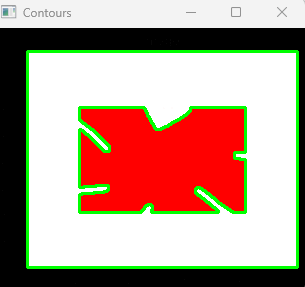
cv2.drawContours(image, contours, contourIdx, color, thickness)
# Kịch bản A: Vẽ toàn bộ các đường viền tìm được (truyền contourIdx = -1) # Tham số: (ảnh nền, danh sách contours, contourIdx, màu sắc BGR, độ dày nét) cv.drawContours(im, contours, -1, (0, 255, 0), 3) # Kịch bản B: Chỉ vẽ duy nhất đường viền thứ 4 trong danh sách (truyền index = 3) cv.drawContours(im, contours, 3, (0, 255, 0), 3) # Kịch bản C: Trích xuất đường viền ra biến riêng rồi vẽ cnt = contours[4] cv.drawContours(im, [cnt], 0, (0, 255, 0), 3)
-
Phương pháp xấp xỉ đường viền (Contour Approximation Method)
- tham số
methodquyết định số lượng tọa độ mà máy tính sẽ lưu vào RAM
Phương pháp Cơ chế Hệ quả cv.CHAIN_APPROX_NONELưu trữ toàn bộ các điểm tọa độ nằm trên đường ranh giới. Tạo ra một mảng dữ liệu lớn. Ví dụ, để biểu diễn một hình chữ nhật, nó có thể lưu tới hàng trăm điểm xếp dọc theo 4 cạnh. cv.CHAIN_APPROX_SIMPLELoại bỏ các điểm tọa độ dư thừa bị trùng lặp hướng tuyến tính và nén đường viền lại. Tiết kiệm bộ nhớ đáng kể. Với hình chữ nhật, một cạnh thẳng chỉ cần xác định bởi điểm đầu và điểm cuối, nên kết quả có thể chỉ còn 4 điểm góc. - tham số
17.2 Feature Contour
| Tên hàm OpenCV | Giá trị đặc trưng trích xuất | Ý nghĩa ứng dụng trong AI/CV |
|---|---|---|
cv.moments() |
Dictionary các giá trị moment (m00,m10,m01, ...). |
Tính toán trọng tâm hình học của vật thể. |
cv.contourArea() |
Diện tích vùng khép kín, tính theo số lượng pixel. | Lọc bỏ các vật thể quá nhỏ như nhiễu, hoặc quá lớn. |
cv.arcLength() |
Chu vi đường viền. | Dùng làm tham số chuẩn hóa, tính độ tròn vật thể. |
cv.approxPolyDP() |
Mảng các đỉnh đa giác đơn giản hóa. | Nhận diện hình khối cơ bản như tam giác, hình vuông, hình tròn. |
cv.convexHull() |
Các đỉnh của bao lồi bên ngoài. | Xử lý nhận diện cử chỉ bàn tay, ngón tay. |
cv.boundingRect() |
Tọa độ chữ nhật thẳng (x, y, w, h). |
Khoanh vùng ROI (Region of Interest) để cắt ảnh vật thể. |
cv.minAreaRect() |
Cấu trúc chữ nhật xoay tối ưu diện tích. | Nhận diện hướng nghiêng của biển số xe, văn bản. |
-
Moment ảnh và trọng tâm
cv2.moments()
ret, thresh = cv.threshold(img, 127, 255, 0) contours, hierarchy = cv.findContours(thresh, 1, 2) cnt = contours[0] M = cv.moments(cnt)
-
Trích xuất tọa độ trọng tâm (Centroid) \(C_x, C_y\) của vật thể theo công thức:
- \[C_x = \frac{M_{10}}{M_{00}}, C_y = \frac{M_{01}}{M_{00}}\]
# Tính toán tọa độ trọng tâm, ép kiểu về số nguyên để vẽ lên lưới pixel cx = int(M['m10'] / M['m00']) cy = int(M['m01'] / M['m00'])
- Cẩn thận
M['m00'] = 0(contour suy biến, diện tích bằng 0) sẽ gây lỗi chia cho 0 → nên kiểm tra trước
-
Diện tích và chu vi đường viền
- Diện tích contour -
cv2.contourArea()area = cv.contourArea(cnt)
- Chu vi contour/ độ dài cung -
cv2.arcLength()perimeter = cv.arcLength(cnt, True)- True: Đường cong khép kín
- False: Đường cong hở
- Diện tích contour -
-
Phép xấp xỉ đa giác đường viền
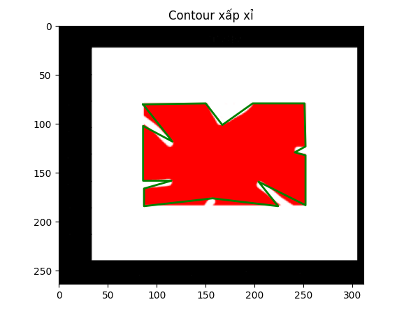
cv2.approxPolyDP(cnt, epsilon, closed)- Phép này giúp biến đổi một đường cong ngoằn ngoèo có nhiều đỉnh thành khối hình học có ít đỉnh hơn
epsilon: Khoảng cách tối đa cho phép đường viền gốc đến đường viền xấp xỉ- \(\epsilon\) quá lớn → Hình xấp xỉ bị thô và mất nhiều chi tiết
- \(\epsilon\) quá nhỏ → Hình xấp xỉ bám quá sát ảnh gốc, không nén được số đỉnh
# Ví dụ trong tài liệu: epsilon = 10% chu vi (thực tế hay dùng 1-5% để giữ hình dạng tốt hơn) epsilon = 0.1 * cv.arcLength(cnt, True) approx = cv.approxPolyDP(cnt, epsilon, True) # Đối số 3: đường cong khép kín
-
Bao lồi (Convex Hull)
cv2.convexHull()- Quét qua tất cả các điểm lõm của đường cong và tự động căng phẳng hoặc bọc lồi nó lại
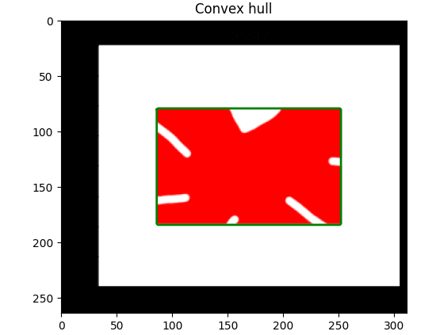
hull = cv.convexHull(points[, hull[, clockwise[, returnPoints]]])points: Tập hợp đường viềncnttruyền vàoclockwise: Cờ định hướng. NếuTrue, các đỉnh bao lồi được sắp theo chiều kim đồng hồ,Falsethì ngược chiều kim đồng hồreturnPoints:- Mặc định là True → Trả về tọa độ các đỉnh bao lồi.
- False trả về chỉ số index của các điểm đó trong mảng cnt.
- Đặt False nếu muốn tính toán convexity defects
- Thông thường dùng:
# Cách dùng phổ biến để lấy tọa độ vẽ bao lồi hull = cv.convexHull(cnt)
- Kiểm tra tính lồi -
cv2.isContourConvex():is_convex = cv.isContourConvex(cnt)
-
Bounding Rectangle
-
Hình chữ nhật bao thẳng đứng -
cv2.boundingRect- Hình chữ nhật thẳng theo lưới tọa độ không quan tâm đến góc xoay của vật thể
- Diện tích hộp này thường lớn hơn diện tích thực tế của vật thể
x, y, w, h = cv.boundingRect(cnt) cv.rectangle(img, (x, y), (x + w, y + h), (0, 255, 0), 2) # Vẽ hộp màu xanh lá
-
Hộp bao chữ nhật xoay quanh có diện tích tối thiểu -
cv2.minAreaRect- Ôm sát vật thể bằng cách xoay theo góc nghiêng của vật thể
- Hàm trả về Box2D:
((cx, cy), (width, height), angle)- tâm, kích thước và góc xoay - Để vẽ hộp này cần phải chuyển cấu trúc trên thành 4 đỉnh tọa độ thông qua hàm
cv2.boxPoints
rect = cv.minAreaRect(cnt) box = cv.boxPoints(rect) # Lấy 4 đỉnh tọa độ box = np.intp(box) # Chuyển tọa độ sang số nguyên để vẽ cv.drawContours(img, [box], 0, (0, 0, 255), 2) # Vẽ hộp xoay màu đỏ
-
-
Đường tròn, elip và đường thẳng khớp tối ưu
-
Đường tròn ngoại tiếp tối thiểu
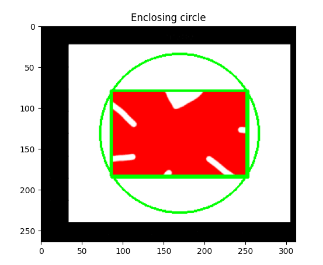
- Tìm đường tròn có diện tích nhỏ nhất có thể bao bọc trọn vẹn vật thể
cv2.minEnclosingCircle(cnt)
(x, y), radius = cv.minEnclosingCircle(cnt) center = (int(x), int(y)) radius = int(radius) cv.circle(img, center, radius, (0, 255, 0), 2)
-
Khớp khung hình elip
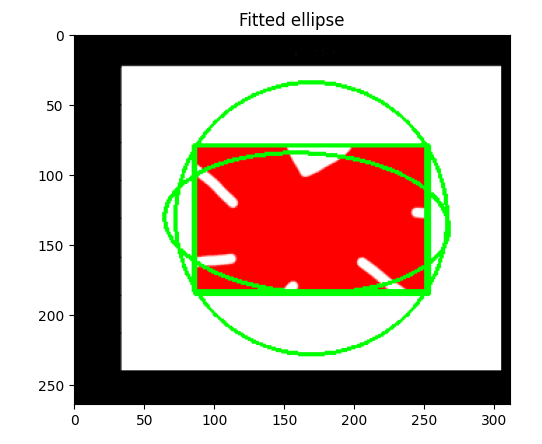
cv2.fitEllipse(cnt)
ellipse = cv.fitEllipse(cnt) cv.ellipse(img, ellipse, (0, 255, 0), 2)
-
Khớp đường thẳng tối ưu
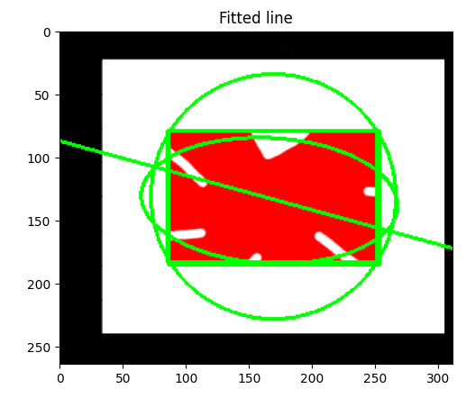
- Dựa vào bình phương tối thiểu để fit line
[vx, vy, x, y] = cv2.fitLine(cnt, cv2.DIST_L2, 0, 0.01, 0.01).flatten() print(f"Đường thẳng khớp contour: vx={vx}, vy={vy}, x={x}, y={y}") # (vx, vy): vector chỉ phương, (x, y): một điểm trên đường thẳng # X = vx * t + x # Y = vy * t + y # lefty: giải pt tại X = 0, righty: giải pt tại X = img.shape[1] - 1 (cột cuối cùng) lefty = float((-x * vy / vx) + y) righty = float(((img.shape[1] - 1 - x) * vy / vx) + y) cv2.line(img, (img.shape[1] - 1, int(righty)), (0, int(lefty)), (0, 255, 0), 2)
-
17.3 Properties Contour
| Thuộc tính / hàm | Bản chất toán học | Bài toán ứng dụng thực tế |
|---|---|---|
Aspect Ratio |
W/H của hộp bao thẳng đứng. | Phân biệt xe máy, thường có hộp bao hẹp và tỷ lệ đứng, với xe ô tô, thường có hộp rộng và tỷ lệ ngang. |
Extent |
Diện tích thực / diện tích hộp bao thẳng đứng. | Đánh giá mức độ lấp đầy của vật thể trong ROI. |
Solidity |
Diện tích thực / diện tích bao lồi. | Phân loại hình dáng, phát hiện vật thể bị méo mó, khuyết tật hoặc có kết cấu lồi lõm. |
Equivalent Diameter |
Đường kính hình tròn có cùng diện tích với contour. | Chuẩn hóa kích thước vật thể về một đại lượng đường kính dễ so sánh. |
cv.minMaxLoc() |
Lọc điểm cực trị độ sáng qua mask. |
Tìm điểm phản xạ chói sáng nhất trên bề mặt sản phẩm để kiểm thử chất lượng lỗi. |
cv.mean() |
Trung bình cộng cường độ pixel qua mask. |
Nhận diện màu sắc của một quả trái cây trên băng chuyền để phân loại độ chín. |
Extreme Points |
Các điểm có x hoặc y nhỏ nhất/lớn nhất trên contour. | Xác định kích thước biên ngoài cùng hoặc điểm mốc để căn chỉnh vật thể. |
-
Shape Properties
-
Tỷ lệ khung hình (Aspect Ratio)
- \[\text{Aspect Ratio} = \frac{\text{Width}}{\text{Height}}\]
x, y, w, h = cv.boundingRect(cnt) aspect_ratio = float(w) / h
-
Độ phủ / mức độ mở rộng (Extent)
- Tỷ số giữa diện tích của đường viền và diện tích của hình chữ nhật bao (bounding rect)
- Thể hiện mức độ lấp đầy của vật thể trong khung hình chữ nhật bao quanh nó
- \[\text{Extent} = \frac{\text{Contour Area}}{\text{Bounding Rect Area}}\]
area = cv.contourArea(cnt) x, y, w, h = cv.boundingRect(cnt) rect_area = w * h extent = float(area) / rect_area
-
Độ đặc/ độ rắn (Solidity)
- Tỷ số giữa diện tích của đường viền vật thể và diện tích bao lồi (Convex Hull)
- Thuộc tính phản ánh độ lồi lõm của cấu trúc hiện tại
- Một đa giác lồi thuần túy sẽ có
Solidity = 1 - \[\text{Solidity} = \frac{\text{Contour Area}}{\text{Convex Hull Area}}\]
area = cv.contourArea(cnt) hull = cv.convexHull(cnt) hull_area = cv.contourArea(hull) solidity = float(area) / hull_area
-
Đường kính tương đương (Equivalent Diameter)
- Là đường kính của một hình tròn lý tưởng có diện tích bằng chính xác diện tích của đường viền vật thể
- \[\text{Equivalent Diameter} = \sqrt{\frac{4 \times \text{Area}}{\pi}}\]
area = cv.contourArea(cnt) equi_diameter = np.sqrt(4 * area / np.pi)
-
Hướng và trục hình học (Orientation)
- Hướng là góc nghiêng trục chính của vật thể, lấy từ elip khớp với contour
# Trả về tọa độ tâm (x, y), độ dài hai trục (đường kính, không phải bán trục) và góc nghiêng (angle) (x, y), (MA, ma), angle = cv.fitEllipse(cnt)
-
-
Trích xuất pixel và thống kê giá trị pixel trong vùng ROI
-
Mask và tọa độ điểm pixel thành phần
- Dùng khi cần cô lập vùng không gian chứa vật thể và trích xuất danh sách tất cả các tọa độ pixel cấu thành nên vật
# Tạo một mặt nạ đen hoàn toàn có cùng kích thước với ảnh xám nguồn mask = np.zeros(imgray.shape, np.uint8) # Vẽ tô đặc (-1) đường viền vật thể bằng màu trắng (255) lên mặt nạ đen cv.drawContours(mask, [cnt], 0, 255, -1) # CÁCH 1: Trích xuất danh sách pixel bằng hàm NumPy : y,x pixelpoints_numpy = np.transpose(np.nonzero(mask)) # CÁCH 2: Trích xuất danh sách pixel bằng hàm OpenCV: x, y pixelpoints_opencv = cv.findNonZero(mask)
-
Tìm giá trị cực trị và vị trí của chúng
min_val, max_val, min_loc, max_loc = cv.minMaxLoc(imgray, mask=mask)
-
Cường độ sáng / màu sắc trung bình
# Hàm luôn trả về tuple 4 phần tử; với ảnh BGR là (B, G, R, 0) mean_val = cv.mean(im, mask=mask)
-
-
Điểm cực trị của vật thể (Extreme Points)
# Điểm ngoài cùng bên trái (tọa độ X nhỏ nhất) leftmost = tuple(cnt[cnt[:, :, 0].argmin()][0]) # Điểm ngoài cùng bên phải (tọa độ X lớn nhất) rightmost = tuple(cnt[cnt[:, :, 0].argmax()][0]) # Điểm cao nhất trên cùng (tọa độ Y nhỏ nhất) topmost = tuple(cnt[cnt[:, :, 1].argmin()][0]) # Điểm thấp nhất dưới cùng (tọa độ Y lớn nhất) bottommost = tuple(cnt[cnt[:, :, 1].argmax()][0])
17.4 Function Contour
| Tên hàm OpenCV | Bản chất đại lượng trả về | Bài toán ứng dụng thực tế |
|---|---|---|
cv.convexityDefects() |
Ma trận chỉ số 4 cột của các vết lõm hình học. | Nhận diện cử chỉ tay: đếm số lượng khe khuyết lồi để suy ra số lượng ngón tay đang xòe ra. |
cv.pointPolygonTest() |
Khoảng cách hình học có dấu (+, −, 0). | Camera an ninh hoặc geofencing: kiểm tra xem tọa độ của người hoặc phương tiện có đang xâm nhập vào vùng đa giác cấm hay không. |
cv.matchShapes() |
Điểm số sai biệt dựa trên Hu-Moments. | Nhận diện ký tự quang học sơ khai (OCR): so khớp hình dáng của chữ cái hoặc con số với bảng mẫu. |
-
Điểm khuyết lồi (Convexity Defects)
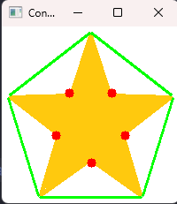
- Bất kì đoạn nào của vật thể bị lõm sâu vào trong so với đường ConvexHull được coi là một điểm khuyết lồi
- Để tính các điểm khuyết lồi:
- Dùng hàm
cv2.convexityDefects() - Hàm này yêu cầu index của các điểm thay vì tọa độ → bao lồi phải tính bằng
cv2.convexHull(cnt, returnPoints=False)
- Dùng hàm
cv2.convexityDefects()trả về:- Start Point: Chỉ số của điểm ranh giới nơi vết lõm bắt đầu
- End Point: Chỉ số của điểm ranh giới nơi vết lõm kết thúc
- Farthest Point: Chỉ số của điểm nằm sâu nhất trong vết lõm, tức là có khoảng cách xa nhất tới đường bao lồi
- Farthest Distance: Khoảng cách từ điểm sâu nhất đó tới đường bao lồi, lưu dạng số nguyên nhân 256 → khoảng cách thật =
d / 256
# B1: Tìm bao lồi của contour # returnPoints=False để trả về index của các điểm của contour hull = cv2.convexHull(cnt, returnPoints=False) # B2: Tìm các điểm khuyết lồi của contour defects = cv2.convexityDefects(cnt, hull) print(defects.shape) # 5 1 4 # B3: Vẽ contour và các điểm khuyết lồi for i in range(defects.shape[0]): # s: index của điểm bắt đầu của đoạn thẳng # e: index của điểm kết thúc của đoạn thẳng # f: index của điểm khuyết lồi # d: khoảng cách từ điểm khuyết lồi đến đoạn thẳng nối 2 điểm bắt đầu và kết thúc s, e, f, d = defects[i, 0] start = tuple(cnt[s][0]) end = tuple(cnt[e][0]) far = tuple(cnt[f][0]) # Vẽ cạnh bao lồi đi qua vết lõm cv2.line(img, start, end, [0, 255, 0], 2) # Vẽ các điểm khuyết lồi cv2.circle(img, far, 5, [0, 0, 255], -1)
-
Kiểm tra điểm trong đa giác (Point Polygon Test)
- Hàm
cv2.pointPolygonTest(cnt, point, measureDist): dùng để tính khoảng cách ngắn nhất từ 1 điểm tọa độ tới đường viền đa giác measureDist = True: trả về khoảng cách có dấu;False: chỉ trả về +1, -1, 0 (nhanh hơn)- Dương: điểm nằm bên trong đường viền
- Âm: điểm nằm ngoài đường viền
- 0: điểm nằm ngay trên đường viền
# Ví dụ tính khoảng cách có dấu từ điểm (50, 50) tới đường viền cnt distance = cv.pointPolygonTest(cnt, (50, 50), measureDist=True)
- Hàm
-
So khớp hình dáng
cv2.matchShapes(cnt1, cnt2, method, parameter)- Score càng gần 0 thì hai hình càng giống nhau
# Phép toán so sánh hai đường viền similarity_score = cv.matchShapes(cnt1, cnt2, method=cv.CONTOURS_MATCH_I1, parameter=0.0) print(similarity_score)
17.5 Hierarchy Contour
| Chế độ (Mode) | Số lượng tầng Phân cấp | Thu thập chi tiết lỗ bên trong? | Ưu tiên ứng dụng thực tế |
|---|---|---|---|
cv.RETR_LIST |
Đúng 1 tầng (Phẳng) | Có (Nhưng coi như ngang hàng biên ngoài). | Đếm tổng số lượng, xử lý hình khối độc lập, tối ưu tốc độ. |
cv.RETR_EXTERNAL |
Đúng 1 tầng (Rìa ngoài) | Không (Bỏ qua hoàn toàn chi tiết bên trong). | Trích xuất khuôn hình/bóng của vật thể, tách nền nhanh. |
cv.RETR_CCOMP |
Đúng 2 tầng (Biên & Lỗ) | Có (Phân tách rõ ràng biên và lỗ thủng). | Xử lý các vật thể có lỗ đục (như nhận diện các con ốc vít, long đền). |
cv.RETR_TREE |
Vô số tầng (Mạng lưới cây) | Có (Lập gia phả chi tiết từ ngoài vào trong). | Phân tích cấu trúc lồng nhau phức tạp, quét mã vạch, mã QR. |
- Thông thường dùng hàm
cv2.findContours()để phát hiện các vật thể độc lập. Tuy nhiên trong thực tế gặp nhiều trường hợp các hình khối nằm lồng vào bên trong nhau- Đường viền Cha (Parent Contour): Đường bao bọc phía ngoài
- Đường viền Con (Child Contour): Đường nằm trọn vẹn ở phía bên trong
- Cùng cấp bậc (Same Hierarchy Level): Các đường viền nằm độc lập ở cùng một tầng không gian
- \[\text{Hierarchy Array} = \begin{bmatrix} \text{Next}, & \text{Previous}, & \text{First\_Child}, & \text{Parent} \end{bmatrix}\]
Next(Đường viền tiếp theo): Chỉ số (index) của đường viền tiếp theo nằm cùng một cấp bậc phân cấp với đường viền hiện tại.Previous(Đường viền trước đó): Chỉ số của đường viền nằm ngay trước nó trên cùng một cấp bậc.First_Child(Con đầu lòng): Chỉ số của đường viền con đầu tiên nằm lồng bên trong nó (nếu có nhiều con, chỉ lấy đứa đầu tiên).Parent(Đường viền cha): Chỉ số của đường viền cha trực tiếp bao bọc lấy nó ở tầng ngay phía trên.- Quy ước: Nếu tại vị trí nào đó không tồn tại đường viền thỏa mãn (không có cha, không có con, hoặc không có anh em cùng cấp ở trước/sau), OpenCV sẽ gán giá trị
-1.
- Contour Retrieval Modes
cv2.RETR_LIST- Luật xử lý: Đây là chế độ đơn giản nhất. Nó thu thập tuyệt đối tất cả mọi đường viền nhưng không thiết lập bất kỳ mối quan hệ cha-con nào. Cha và con hoàn toàn bình đẳng và bị ép nằm chung ở một cấp phân cấp duy nhất.
- Hệ quả ma trận: Giá trị cột số 3 (
First_Child) và cột số 4 (Parent) luôn luôn bằng-1. - Ứng dụng: Hãy luôn chọn
cv.RETR_LISTnếu ứng dụng của bạn chỉ cần đếm số lượng vật thể hoặc tính diện tích mà không quan tâm chúng có lồng nhau hay không, vì chế độ này chạy rất nhanh và tiết kiệm tài nguyên.
cv2.RETR_EXTERNAL- Luật xử lý: Chế độ này chỉ thu thập các đường viền nằm ở rìa ngoài cùng, loại bỏ sạch sẽ tất cả các đường viền con nằm lồng bên trong. (Có thể hiểu vui là luật này chỉ quan tâm đến vị trưởng tộc cao nhất trong gia đình).
- Hệ quả ma trận: Chỉ trả về các đường viền ở tầng ngoài cùng; đường viền con không được trả về nên
First_ChildvàParentluôn bằng-1. - Ứng dụng: Cực kỳ hữu ích khi bạn muốn cắt lấy biên dạng tổng thể của một vật thể phức tạp và muốn loại bỏ các chi tiết đục lỗ, hoa văn rỗng ở bên trong vật thể đó
cv2.RETR_CCOMP- Luật xử lý: Thu thập tất cả các đường viền nhưng ép cấu trúc về dạng phân cấp đúng 2 tầng cố định:
- Tầng 1 (Hierarchy-1): Chứa các đường biên ngoài cùng của vật thể.
- Tầng 2 (Hierarchy-2): Chứa đường biên của các lỗ thủng (holes) nằm bên trong vật thể đó.
- Nếu bên trong lỗ thủng lại chứa một vật thể con khác? Vật thể con đó sẽ tự động được đưa ngược lên xếp ở Tầng 1, và lỗ thủng của nó lại nằm ở Tầng 2.
- Luật xử lý: Thu thập tất cả các đường viền nhưng ép cấu trúc về dạng phân cấp đúng 2 tầng cố định:
cv2.RETR_TREE- Luật xử lý: Đây là chế độ toàn diện và hoàn hảo nhất. Nó thiết lập một cây phả hệ đầy đủ nhiều tầng bậc, ghi nhận chính xác tuyệt đối mối quan hệ từ ông bà, cha mẹ, con cái, cháu chắt lồng ghép sâu bao nhiêu tầng tùy ý vào bên trong.
- Ứng dụng: Sử dụng khi cần phân tích các cấu trúc đồ họa phức tạp đan xen lồng nhau, như nhận diện cấu trúc các linh kiện trên bo mạch điện tử hoặc phân tích văn bản nhiều lớp ký tự
18. Histogram Bản nháp – chưa review
Gắn với: Bài 3: Phân ngưỡng, Co và Giãn (Thresholding, Erosion, and Dilation)
| Hàm | Ý nghĩa | Ứng dụng |
|---|---|---|
cv.calcHist() |
Tính histogram 1D/2D, có thể kèm mask |
Phân tích độ sáng, tương phản, màu sắc |
cv.equalizeHist() |
Cân bằng histogram toàn cục | Tăng tương phản ảnh xám |
cv.createCLAHE() |
Cân bằng histogram thích nghi theo từng ô | Tăng tương phản cục bộ, không làm cháy sáng |
cv.calcBackProject() |
Chiếu ngược histogram mẫu lên ảnh | Tách vật thể theo màu, dùng cho CamShift |
- Histogram là đồ thị phân bố cường độ của ảnh:
- Trục x: giá trị pixel (0-255 với ảnh
uint8) - Trục y: số pixel có giá trị đó
- Histogram dồn về bên trái → ảnh tối, dồn về bên phải → ảnh sáng, dồn vào một vùng hẹp → tương phản thấp
- Trục x: giá trị pixel (0-255 với ảnh
- Các thuật ngữ:
- BINS (
histSize): số khoảng chia. 256 bins = mỗi giá trị một cột, 16 bins = mỗi cột gom 16 giá trị - DIMS: số đặc trưng thu thập; ảnh xám chỉ có cường độ → 1
- RANGE: khoảng giá trị cần đo, thường là
[0, 256]
- BINS (
-
Tính histogram bằng OpenCV:
hist = cv.calcHist(images, channels, mask, histSize, ranges)- Các tham số đều truyền dạng list
[...]images:[img], kiểuuint8hoặcfloat32channels:[0]với ảnh xám;[0],[1],[2]tương ứng kênh B, G, Rmask:Noneđể tính cả ảnh, hoặc mask trắng ở vùng cần tínhhistSize:[256]ranges:[0, 256]
- Kết quả là mảng
256x1kiểufloat32
hist = cv.calcHist([img], [0], None, [256], [0, 256]) # Histogram chỉ trong một vùng: tạo mask trắng ở vùng đó mask = np.zeros(img.shape[:2], np.uint8) mask[100:300, 100:400] = 255 hist_mask = cv.calcHist([img], [0], mask, [256], [0, 256])
-
Tính histogram bằng NumPy:
hist, bins = np.histogram(img.ravel(), 256, [0, 256])→binscó 257 phần tử (thêm mốc 256 ở cuối)hist = np.bincount(img.ravel(), minlength=256)nhanh hơnnp.histogramkhoảng 10 lầncv.calcHistvẫn nhanh nhất (khoảng 40 lần so vớinp.histogramtheo tài liệu OpenCV)
-
Vẽ histogram:
- Nhanh nhất:
plt.hist(img.ravel(), 256, [0, 256]) - Ảnh màu: tính từng kênh rồi
plt.plot
for i, col in enumerate(("b", "g", "r")): histr = cv.calcHist([img], [i], None, [256], [0, 256]) plt.plot(histr, color=col) plt.xlim([0, 256])
- Nhanh nhất:
-
Cân bằng histogram (Histogram Equalization)
- Ý tưởng: kéo giãn histogram đang dồn vào một vùng hẹp ra toàn dải 0-255 → tăng tương phản
-
Dùng hàm phân phối tích lũy (CDF) làm bảng tra (look-up table):
\[h(v) = \text{round}\left(\frac{cdf(v) - cdf_{min}}{M \times N - cdf_{min}} \times (L - 1)\right)\]
- \(M \times N\): số pixel, \(L = 256\)
# Cách làm bằng NumPy hist, bins = np.histogram(img.flatten(), 256, [0, 256]) cdf = hist.cumsum() cdf_m = np.ma.masked_equal(cdf, 0) # bỏ các giá trị 0 cdf_m = (cdf_m - cdf_m.min()) * 255 / (cdf_m.max() - cdf_m.min()) lut = np.ma.filled(cdf_m, 0).astype("uint8") img2 = lut[img] # áp bảng tra cho từng pixel # Cách làm bằng OpenCV equ = cv.equalizeHist(img) # chỉ nhận ảnh xám 8-bit
- Ảnh tối hay sáng sau khi cân bằng đều cho kết quả gần giống nhau → dùng để chuẩn hóa điều kiện ánh sáng (ví dụ trước khi huấn luyện nhận diện khuôn mặt)
- Hạn chế: với ảnh vừa có vùng rất tối vừa có vùng rất sáng, cân bằng toàn cục làm cháy chi tiết
- Ảnh màu: không cân bằng riêng từng kênh B, G, R (lệch màu) → chuyển sang YCrCb hoặc LAB, chỉ cân bằng kênh độ sáng rồi chuyển ngược lại
-
CLAHE (Contrast Limited Adaptive Histogram Equalization)
- Chia ảnh thành các ô nhỏ (
tileGridSize, mặc định 8x8), cân bằng histogram trong từng ô - Nhiễu trong ô nhỏ dễ bị khuếch đại → giới hạn tương phản: bin nào vượt
clipLimit(mặc định 40) thì phần dư được cắt và chia đều cho các bin khác - Nội suy song tuyến tính ở biên các ô để không lộ đường ranh giới
clahe = cv.createCLAHE(clipLimit=2.0, tileGridSize=(8, 8)) cl1 = clahe.apply(img)
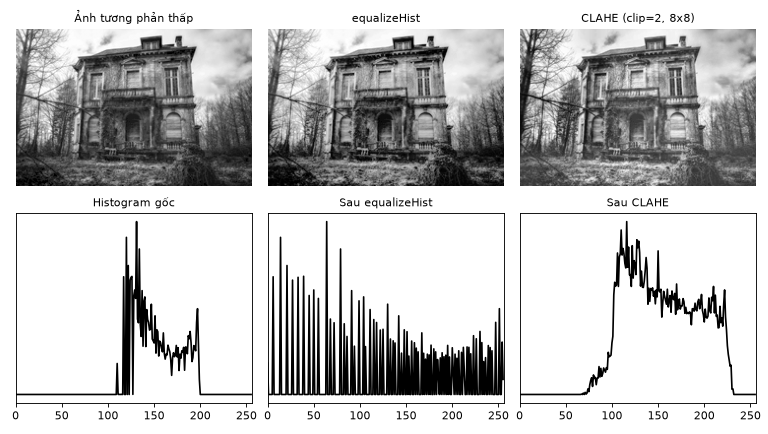
- Chia ảnh thành các ô nhỏ (
-
Histogram 2D
- Thu thập hai đặc trưng cùng lúc, thường là Hue và Saturation → histogram màu
- Chuyển ảnh sang HSV, rồi:
channels = [0, 1]: kênh H và ShistSize = [180, 256]: 180 bins cho H, 256 bins cho Sranges = [0, 180, 0, 256]
hsv = cv.cvtColor(img, cv.COLOR_BGR2HSV) hist = cv.calcHist([hsv], [0, 1], None, [180, 256], [0, 180, 0, 256]) plt.imshow(hist, interpolation="nearest") # trục y: H, trục x: S
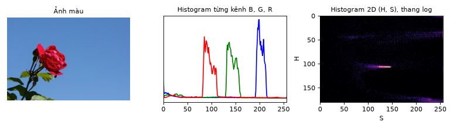
-
Histogram Backprojection
- Tạo ảnh một kênh cùng kích thước ảnh gốc, mỗi pixel là xác suất pixel đó thuộc vật thể → vật thể hiện lên màu trắng
- Các bước:
- Tính histogram màu (H-S) của vùng mẫu chứa vật thể. Vùng mẫu nên chứa càng nhiều vật thể càng tốt
- Chuẩn hóa histogram mẫu rồi "chiếu ngược" lên ảnh cần tìm
- Tích chập với kernel hình đĩa để gom các điểm rời rạc
- Phân ngưỡng để lấy mask
hsv_roi = cv.cvtColor(roi, cv.COLOR_BGR2HSV) hsv_target = cv.cvtColor(target, cv.COLOR_BGR2HSV) roihist = cv.calcHist([hsv_roi], [0, 1], None, [180, 256], [0, 180, 0, 256]) cv.normalize(roihist, roihist, 0, 255, cv.NORM_MINMAX) dst = cv.calcBackProject([hsv_target], [0, 1], roihist, [0, 180, 0, 256], 1) disc = cv.getStructuringElement(cv.MORPH_ELLIPSE, (5, 5)) cv.filter2D(dst, -1, disc, dst) ret, thresh = cv.threshold(dst, 50, 255, 0) res = cv.bitwise_and(target, target, mask=thresh)
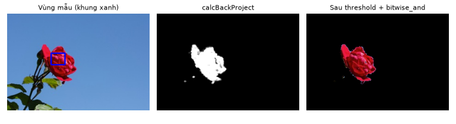
- Ứng dụng:
- Tách vật thể có màu đặc trưng (sân cỏ, da người, hoa quả)
- Là bước đầu của thuật toán theo dõi meanShift / CamShift
19. Fourier Transform Bản nháp – chưa review
| Hàm | Ý nghĩa |
|---|---|
np.fft.fft2() / np.fft.ifft2() |
Biến đổi Fourier 2D thuận / ngược của NumPy, trả về số phức |
np.fft.fftshift() / np.fft.ifftshift() |
Đưa thành phần tần số 0 (DC) vào giữa phổ / trả về góc trên trái |
cv.dft() / cv.idft() |
Biến đổi Fourier của OpenCV, nhanh hơn NumPy, kết quả 2 kênh (thực, ảo) |
cv.magnitude() |
Độ lớn \(\sqrt{Re^2 + Im^2}\) |
cv.getOptimalDFTSize() |
Kích thước tối ưu để DFT chạy nhanh |
- Ảnh có thể xem là tín hiệu lấy mẫu theo hai chiều → DFT 2D cho biết ảnh gồm những tần số nào
- Biên, nhiễu: pixel thay đổi đột ngột → tần số cao
- Vùng phẳng, mảng màu: thay đổi chậm → tần số thấp
- FFT (Fast Fourier Transform) là thuật toán nhanh để tính DFT
-
Fourier bằng NumPy
f = np.fft.fft2(img): kết quả phức, thành phần DC nằm ở góc trên tráifshift = np.fft.fftshift(f): dịch DC vào giữa ảnh phổ, dễ quan sát- Phổ biên độ:
20 * np.log(np.abs(fshift)), lấy log vì giá trị chênh nhau rất lớn
f = np.fft.fft2(img) fshift = np.fft.fftshift(f) magnitude_spectrum = 20 * np.log(np.abs(fshift))
- Lọc thông cao (HPF): xóa vùng tần số thấp ở giữa phổ rồi biến đổi ngược
rows, cols = img.shape crow, ccol = rows // 2, cols // 2 fshift[crow - 30:crow + 31, ccol - 30:ccol + 31] = 0 # bỏ tần số thấp f_ishift = np.fft.ifftshift(fshift) # trả DC về góc img_back = np.real(np.fft.ifft2(f_ishift)) # lấy phần thực
- Kết quả HPF giữ lại biên → HPF là một bộ phát hiện biên
-
Fourier bằng OpenCV
- Ảnh đầu vào phải chuyển sang
np.float32 flags=cv.DFT_COMPLEX_OUTPUT→ kết quả có 2 kênh: phần thực[:, :, 0]và phần ảo[:, :, 1]
dft = cv.dft(np.float32(img), flags=cv.DFT_COMPLEX_OUTPUT) dft_shift = np.fft.fftshift(dft) magnitude_spectrum = 20 * np.log(cv.magnitude(dft_shift[:, :, 0], dft_shift[:, :, 1]))
- Có thể dùng
cv.cartToPolar()để lấy cả độ lớn và pha cùng lúc - Lọc thông thấp (LPF): tạo mask giữ vùng giữa (tần số thấp), xóa phần còn lại → ảnh bị làm mờ
mask = np.zeros((rows, cols, 2), np.uint8) # 2 kênh giống dft mask[crow - 30:crow + 30, ccol - 30:ccol + 30] = 1 fshift = dft_shift * mask img_back = cv.idft(np.fft.ifftshift(fshift)) img_back = cv.magnitude(img_back[:, :, 0], img_back[:, :, 1])
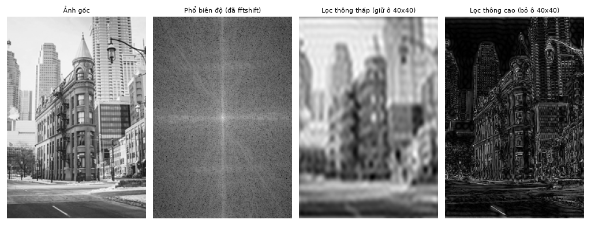
- Mask hình chữ nhật cắt đột ngột gây hiện tượng gợn sóng (ringing effect) quanh biên → nên dùng mask Gauss để chuyển tiếp mượt
- Ảnh đầu vào phải chuyển sang
-
Tối ưu tốc độ
- DFT nhanh nhất khi kích thước là lũy thừa của 2, hoặc tích của các thừa số 2, 3, 5
cv.getOptimalDFTSize(n)trả về kích thước tối ưu ≥ n, sau đó đệm thêm số 0 bằngcv.copyMakeBorder- Theo tài liệu OpenCV: ảnh 342x548 đệm lên 360x576 thì DFT nhanh hơn khoảng 4 lần;
cv.dftnhanh hơnnp.fft.fft2khoảng 3 lần
nrows = cv.getOptimalDFTSize(rows) ncols = cv.getOptimalDFTSize(cols) nimg = cv.copyMakeBorder(img, 0, nrows - rows, 0, ncols - cols, cv.BORDER_CONSTANT, value=0)
-
Vì sao Laplacian là HPF, lọc trung bình là LPF?
- Lấy FFT của chính kernel rồi xem phổ:
- Kernel trung bình, Gauss: phổ sáng ở giữa → chỉ cho tần số thấp đi qua → LPF
- Laplacian: phổ tối ở giữa, sáng ở rìa → HPF
- Sobel x: chặn tần số theo trục x thấp, cho qua tần số cao theo x → tìm cạnh dọc
- Ứng dụng:
- Hiểu và thiết kế bộ lọc trong miền tần số
- Tích chập kernel lớn nhanh hơn bằng nhân trong miền tần số (định lý tích chập)
- Khử nhiễu có chu kỳ (sọc, lưới) bằng cách xóa các đỉnh tương ứng trong phổ
- Lấy FFT của chính kernel rồi xem phổ:
20. Template Matching Bản nháp – chưa review
Gắn với: Bài 10: Tích chập (Convolution)
- Tìm vị trí của một ảnh mẫu nhỏ (template) trong ảnh lớn
- Cơ chế: trượt template trên ảnh giống tích chập 2D, tại mỗi vị trí tính một điểm so khớp giữa template và vùng ảnh bên dưới
- Hàm:
res = cv.matchTemplate(image, templ, method)- Ảnh kích thước W x H, template w x h →
rescó kích thước (W - w + 1) x (H - h + 1) - Mỗi pixel
res[y, x]là điểm so khớp khi góc trên trái của template đặt tại (x, y)
- Ảnh kích thước W x H, template w x h →
- Tìm vị trí tốt nhất bằng
cv.minMaxLoc(res)→min_val, max_val, min_loc, max_loc - Các phương pháp so khớp (\(T\): template, \(I\): ảnh):
| Method | Công thức | Vị trí tốt nhất |
|---|---|---|
cv.TM_SQDIFF |
\(\sum (T - I)^2\) | min |
cv.TM_SQDIFF_NORMED |
SQDIFF chuẩn hóa về [0, 1] | min |
cv.TM_CCORR |
\(\sum T \cdot I\) | max |
cv.TM_CCORR_NORMED |
CCORR chuẩn hóa | max |
cv.TM_CCOEFF |
\(\sum T' \cdot I'\) với \(T', I'\) đã trừ trung bình | max |
cv.TM_CCOEFF_NORMED |
CCOEFF chuẩn hóa về [-1, 1] | max |
- Với
TM_SQDIFFvàTM_SQDIFF_NORMEDphải lấymin_loc, các phương pháp còn lại lấymax_loc TM_CCORRkhông trừ trung bình nên dễ bị vùng sáng đánh lừa → kết quả kém nhất- Thường dùng
TM_CCOEFF_NORMED: chịu được thay đổi độ sáng, ngưỡng dễ chọn (gần 1 là giống)
img = cv.imread("scene.jpg", cv.IMREAD_GRAYSCALE)
template = cv.imread("template.jpg", cv.IMREAD_GRAYSCALE)
h, w = template.shape # chú ý: shape là (h, w)
res = cv.matchTemplate(img, template, cv.TM_CCOEFF_NORMED)
min_val, max_val, min_loc, max_loc = cv.minMaxLoc(res)
top_left = max_loc # (x, y)
bottom_right = (top_left[0] + w, top_left[1] + h)
cv.rectangle(img, top_left, bottom_right, 255, 2)
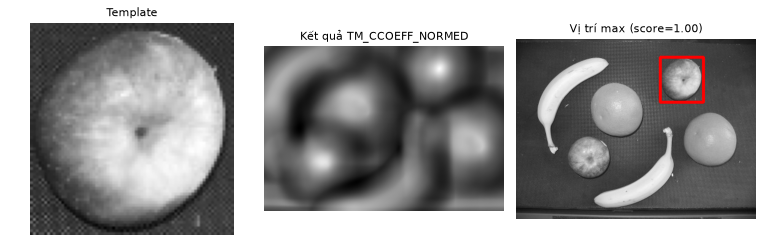
-
Tìm nhiều đối tượng cùng lúc
minMaxLocchỉ trả về một vị trí → dùng ngưỡng để lấy mọi vị trí có điểm cao
res = cv.matchTemplate(img_gray, template, cv.TM_CCOEFF_NORMED) loc = np.where(res >= 0.8) # trả về (các y, các x) for pt in zip(*loc[::-1]): # đảo lại thành (x, y) cv.rectangle(img_rgb, pt, (pt[0] + w, pt[1] + h), (0, 0, 255), 2)
- Một vật thể thường cho nhiều điểm sát nhau vượt ngưỡng → cần gộp lại (non-maximum suppression)
-
Hạn chế:
- Không bất biến với xoay và thay đổi tỷ lệ: template phải cùng kích thước và hướng với vật thể trong ảnh
- Muốn tìm ở nhiều tỷ lệ → chạy trên kim tự tháp ảnh; muốn bền vững hơn → dùng đặc trưng (SIFT, ORB) + homography
- Ứng dụng:
- Tìm logo, biểu tượng, nút bấm trên ảnh chụp màn hình
- Kiểm tra linh kiện ở vị trí cố định trên băng chuyền
21. Hough Transform Bản nháp – chưa review
Gắn với: Bài 12: Đạo hàm và Phát hiện biên (Differentiation and Edge Detection)
| Hàm | Kết quả | Ứng dụng |
|---|---|---|
cv.HoughLines() |
Danh sách \((\rho, \theta)\) của các đường thẳng vô hạn | Tìm hướng chính, đường chân trời |
cv.HoughLinesP() |
Danh sách đoạn thẳng \((x_1, y_1, x_2, y_2)\) | Phát hiện làn đường, cạnh vật thể |
cv.HoughCircles() |
Danh sách \((x, y, r)\) | Đếm đồng xu, phát hiện con ngươi, biển báo tròn |
- Hough Transform tìm các hình dạng có thể biểu diễn bằng công thức toán học (đường thẳng, đường tròn), kể cả khi hình bị đứt đoạn hoặc có nhiễu
- Đầu vào là ảnh nhị phân: thường là kết quả của Canny hoặc threshold
-
Hough Lines
- Đường thẳng viết dạng tham số: \(\rho = x\cos\theta + y\sin\theta\)
- \(\rho\): khoảng cách vuông góc từ gốc tọa độ (góc trên trái) tới đường thẳng
- \(\theta\): góc giữa đường vuông góc đó và trục ngang, tính theo radian
- Dạng \(y = mx + c\) không biểu diễn được đường thẳng đứng (\(m = \infty\)) nên không dùng
- Cơ chế bỏ phiếu (voting):
- Tạo mảng tích lũy (accumulator) 2D: hàng là \(\rho\), cột là \(\theta\), ban đầu bằng 0
- Với mỗi điểm biên (x, y), thử mọi \(\theta\), tính \(\rho\) tương ứng rồi cộng 1 vào ô \((\rho, \theta)\)
- Ô nào có nhiều phiếu → có nhiều điểm cùng nằm trên một đường thẳng
- Hàm:
lines = cv.HoughLines(edges, rho, theta, threshold)rho: độ phân giải của \(\rho\) (pixel), thường 1theta: độ phân giải của \(\theta\) (radian), thườngnp.pi / 180threshold: số phiếu tối thiểu để coi là một đường thẳng- Trả về mảng shape (N, 1, 2) gồm các cặp \((\rho, \theta)\)
gray = cv.cvtColor(img, cv.COLOR_BGR2GRAY) edges = cv.Canny(gray, 50, 150, apertureSize=3) lines = cv.HoughLines(edges, 1, np.pi / 180, 150) for rho, theta in lines[:, 0]: a, b = np.cos(theta), np.sin(theta) x0, y0 = a * rho, b * rho # chân đường vuông góc # đi 1000 pixel về hai phía để vẽ đường "vô hạn" pt1 = (int(x0 + 1000 * (-b)), int(y0 + 1000 * a)) pt2 = (int(x0 - 1000 * (-b)), int(y0 - 1000 * a)) cv.line(img, pt1, pt2, (0, 0, 255), 2)
- Đường thẳng viết dạng tham số: \(\rho = x\cos\theta + y\sin\theta\)
-
Probabilistic Hough (HoughLinesP)
- Chỉ bỏ phiếu bằng một tập con điểm ngẫu nhiên → nhanh hơn
- Trả về trực tiếp hai đầu mút của đoạn thẳng → dễ dùng hơn
- Thêm hai tham số:
minLineLength: đoạn ngắn hơn giá trị này bị loạimaxLineGap: khoảng hở tối đa giữa hai đoạn để vẫn gộp thành một đường
lines = cv.HoughLinesP(edges, 1, np.pi / 180, 100, minLineLength=80, maxLineGap=5) for x1, y1, x2, y2 in lines[:, 0]: cv.line(img, (x1, y1), (x2, y2), (0, 255, 0), 2)
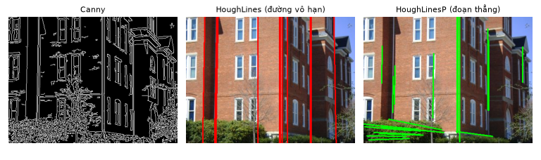
-
Hough Circles
- Đường tròn: \((x - x_c)^2 + (y - y_c)^2 = r^2\) → 3 tham số, bỏ phiếu 3D rất tốn bộ nhớ
- OpenCV dùng Hough Gradient Method: dùng hướng gradient tại điểm biên để bỏ phiếu cho tâm, sau đó mới tìm bán kính
- Đầu vào là ảnh xám 8-bit, không phải ảnh Canny (hàm tự gọi Canny bên trong)
- Hàm:
circles = cv.HoughCircles(img, method, dp, minDist, param1, param2, minRadius, maxRadius)
Tham số Ý nghĩa methodcv.HOUGH_GRADIENT(hoặccv.HOUGH_GRADIENT_ALTtừ OpenCV 4.3, chính xác hơn)dpTỷ lệ nghịch độ phân giải accumulator; 1 = cùng độ phân giải ảnh minDistKhoảng cách tối thiểu giữa hai tâm; nhỏ quá → nhiều vòng trùng, lớn quá → sót param1Ngưỡng cao của Canny bên trong (ngưỡng thấp = một nửa) param2Ngưỡng phiếu cho tâm; nhỏ hơn → nhiều vòng hơn, kể cả vòng giả minRadius,maxRadiusGiới hạn bán kính; 0 = không giới hạn img = cv.medianBlur(img, 5) # giảm nhiễu trước circles = cv.HoughCircles(img, cv.HOUGH_GRADIENT, 1, 20, param1=100, param2=25, minRadius=15, maxRadius=50) circles = np.uint16(np.around(circles)) for x, y, r in circles[0]: cv.circle(cimg, (int(x), int(y)), int(r), (0, 255, 0), 2) # đường tròn cv.circle(cimg, (int(x), int(y)), 2, (0, 0, 255), 3) # tâm
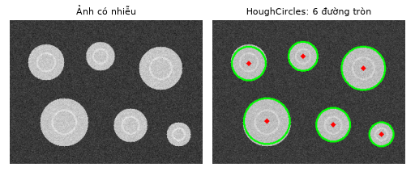
- Kết quả rất nhạy với
param2: trong hình trênparam2=30chỉ tìm được 4/6 đồng xu,param2=25tìm đủ 6 - Hàm trả về
Nonenếu không tìm thấy → kiểm traif circles is not Nonetrước khi dùng
22. Watershed Bản nháp – chưa review
Gắn với: Bài 4: Tô loang và Thành phần liên thông (Flood Fill and Connected Components)
- Bài toán: tách các vật thể chạm hoặc chồng lên nhau (đồng xu dính nhau, tế bào). Threshold + contour chỉ ra một khối liền
- Ý tưởng: coi ảnh xám là bản đồ địa hình, pixel sáng là đỉnh, pixel tối là thung lũng
- Đổ nước có màu khác nhau vào từng thung lũng (cực tiểu cục bộ)
- Nước dâng lên, chỗ nước của hai thung lũng sắp gặp nhau thì xây "đập" → đập chính là đường biên phân tách
- Watershed thuần túy bị phân mảnh quá mức (over-segmentation) do nhiễu → OpenCV dùng watershed theo marker: ta tự chỉ định vùng nào chắc chắn là vật thể, vùng nào chắc chắn là nền, vùng nào chưa biết
- Quy ước mảng
markers(kiểuint32):
| Giá trị | Ý nghĩa |
|---|---|
0 |
Vùng chưa biết → watershed sẽ quyết định |
1 |
Nền chắc chắn |
2, 3, ... |
Từng vật thể chắc chắn, mỗi vật một nhãn |
-1 |
(Sau watershed) đường biên giữa các vùng |
- Các bước:
- B1: Threshold Otsu để tách sơ bộ vật thể và nền
- B2: Opening để xóa nhiễu trắng nhỏ
- B3: Nền chắc chắn = dilate vật thể → vùng ngoài vùng giãn chắc chắn là nền
- B4: Vật thể chắc chắn = distanceTransform rồi lấy ngưỡng
distanceTransformgán mỗi pixel trắng giá trị = khoảng cách tới pixel đen gần nhất → tâm vật thể sáng nhất, chỗ hai vật chạm nhau tối hơn- Lấy ngưỡng cao chỉ giữ phần lõi của từng vật → các lõi tách rời nhau
- B5: Vùng chưa biết = nền chắc chắn - vật thể chắc chắn
- B6: Gán nhãn lõi bằng
connectedComponents, cộng 1 để nền thành 1, gán vùng chưa biết = 0 - B7: Chạy
cv.watershed(img, markers), img phải là ảnh màu 8-bit 3 kênh
gray = cv.cvtColor(img, cv.COLOR_BGR2GRAY)
ret, thresh = cv.threshold(gray, 0, 255, cv.THRESH_BINARY_INV + cv.THRESH_OTSU)
# B2: xóa nhiễu
kernel = np.ones((3, 3), np.uint8)
opening = cv.morphologyEx(thresh, cv.MORPH_OPEN, kernel, iterations=2)
# B3: nền chắc chắn
sure_bg = cv.dilate(opening, kernel, iterations=3)
# B4: vật thể chắc chắn
dist_transform = cv.distanceTransform(opening, cv.DIST_L2, 5)
ret, sure_fg = cv.threshold(dist_transform, 0.7 * dist_transform.max(), 255, 0)
# B5: vùng chưa biết
sure_fg = np.uint8(sure_fg)
unknown = cv.subtract(sure_bg, sure_fg)
# B6: tạo marker
ret, markers = cv.connectedComponents(sure_fg)
markers = markers + 1 # nền thành 1 thay vì 0
markers[unknown == 255] = 0 # vùng chưa biết = 0
# B7: watershed
markers = cv.watershed(img, markers)
img[markers == -1] = [255, 0, 0] # tô đường biên
- Chú ý: tài liệu dùng
THRESH_BINARY_INVvì đồng xu tối trên nền sáng; nếu vật thể sáng trên nền tối thì dùngTHRESH_BINARY - Ngưỡng của distance transform (0.7 x max) quyết định có tách được các vật hay không:
- Quá cao → vật nhỏ không có lõi, bị coi là vùng chưa biết rồi nhập vào nền
- Quá thấp → lõi của các vật dính nhau vẫn liền → không tách được
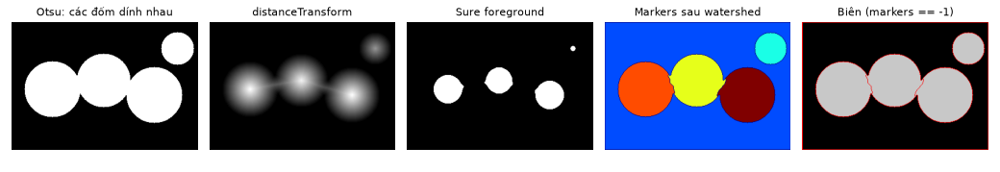
- Hình trên dùng ngưỡng 0.5: đủ thấp để vật nhỏ ở góc vẫn có lõi, đủ cao để 3 vật dính nhau có lõi tách rời
- Ứng dụng:
- Đếm và tách tế bào, hạt, đồng xu chạm nhau
- Phân đoạn tương tác: người dùng vẽ marker, thuật toán tự tìm biên (xem sample
watershed.pycủa OpenCV)
23. GrabCut Bản nháp – chưa review
Gắn với: Bài 42: Phân đoạn ngữ nghĩa (Semantic Segmentation)
- Thuật toán tách tiền cảnh (foreground) với rất ít tương tác: người dùng chỉ cần vẽ một khung chữ nhật quanh vật thể, có thể sửa thêm bằng vài nét vẽ
- Do Carsten Rother, Vladimir Kolmogorov, Andrew Blake (Microsoft Research) đề xuất năm 2004
- Cơ chế:
- Mọi thứ ngoài khung chữ nhật → nền chắc chắn; trong khung → chưa biết
- Dùng Gaussian Mixture Model (GMM) mô hình hóa phân bố màu của tiền cảnh và nền
- Xây đồ thị: mỗi pixel là một nút, thêm hai nút đặc biệt Source (tiền cảnh) và Sink (nền)
- Cạnh pixel - Source/Sink: trọng số = xác suất pixel thuộc tiền cảnh/nền (theo GMM)
- Cạnh pixel - pixel: trọng số lớn nếu hai pixel giống màu → khó bị cắt
- Dùng thuật toán min-cut cắt đồ thị với tổng trọng số nhỏ nhất → pixel nối với Source là tiền cảnh
- Lặp lại (cập nhật GMM, cắt lại) đến khi hội tụ
- Hàm:
mask, bgdModel, fgdModel = cv.grabCut(img, mask, rect, bgdModel, fgdModel, iterCount, mode)
| Tham số | Ý nghĩa |
|---|---|
img |
Ảnh màu 8-bit 3 kênh |
mask |
Ảnh 1 kênh uint8, vừa là đầu vào vừa là đầu ra, giá trị theo bảng dưới |
rect |
Khung (x, y, w, h) chứa vật thể, chỉ dùng với GC_INIT_WITH_RECT |
bgdModel, fgdModel |
Mảng np.zeros((1, 65), np.float64) cho thuật toán dùng nội bộ |
iterCount |
Số vòng lặp |
mode |
cv.GC_INIT_WITH_RECT (dùng khung) hoặc cv.GC_INIT_WITH_MASK (dùng mask đã vẽ) |
| Giá trị mask | Hằng số | Ý nghĩa |
|---|---|---|
| 0 | cv.GC_BGD |
Nền chắc chắn |
| 1 | cv.GC_FGD |
Tiền cảnh chắc chắn |
| 2 | cv.GC_PR_BGD |
Có lẽ là nền |
| 3 | cv.GC_PR_FGD |
Có lẽ là tiền cảnh |
mask = np.zeros(img.shape[:2], np.uint8)
bgdModel = np.zeros((1, 65), np.float64)
fgdModel = np.zeros((1, 65), np.float64)
rect = (40, 10, 250, 230)
cv.grabCut(img, mask, rect, bgdModel, fgdModel, 5, cv.GC_INIT_WITH_RECT)
# 0 và 2 là nền, 1 và 3 là tiền cảnh
mask2 = np.where((mask == 2) | (mask == 0), 0, 1).astype("uint8")
img_fg = img * mask2[:, :, np.newaxis]
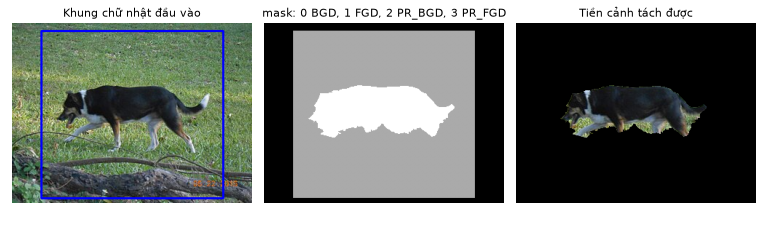
-
Sửa kết quả bằng nét vẽ: chỗ nào bị sai thì tô trắng (chắc chắn tiền cảnh) hoặc đen (chắc chắn nền) rồi chạy lại với
GC_INIT_WITH_MASK# newmask: ảnh người dùng vẽ, trắng = tiền cảnh, đen = nền mask[newmask == 0] = 0 mask[newmask == 255] = 1 mask, bgdModel, fgdModel = cv.grabCut(img, mask, None, bgdModel, fgdModel, 5, cv.GC_INIT_WITH_MASK)
-
Hạn chế: vật thể và nền có màu giống nhau (ví dụ chân con chó và cỏ trong hình trên) thì dễ bị cắt nhầm → cần thêm nét vẽ sửa
- Ứng dụng:
- Xóa phông, tách người/vật khỏi ảnh
- Tạo nhanh mask nhãn cho dữ liệu huấn luyện phân đoạn
24. Corner Detection - Harris, Shi-Tomasi Bản nháp – chưa review
Gắn với: Bài 20: Phát hiện và So khớp đặc trưng (Feature Detection and Matching)
| Hàm | Thuật toán | Kết quả |
|---|---|---|
cv.cornerHarris() |
Harris (1988) | Ảnh "điểm góc" R, cùng kích thước ảnh |
cv.goodFeaturesToTrack() |
Shi-Tomasi (1994) | N góc mạnh nhất, tọa độ (x, y) |
cv.cornerSubPix() |
Tinh chỉnh | Tọa độ góc chính xác tới mức sub-pixel |
- Đặc trưng tốt là vùng mà dịch cửa sổ theo mọi hướng đều làm thay đổi lớn cường độ:
- Vùng phẳng: dịch hướng nào cũng không đổi → không dùng được
- Cạnh: chỉ đổi khi dịch vuông góc với cạnh, dịch dọc cạnh thì không đổi
- Góc: dịch hướng nào cũng đổi → đặc trưng tốt nhất
-
Harris Corner Detector
-
Độ thay đổi cường độ khi dịch cửa sổ một đoạn \((u, v)\):
\[E(u, v) = \sum_{x, y} w(x, y)\,[I(x + u, y + v) - I(x, y)]^2 \approx [u \;\; v]\, M \begin{bmatrix} u \\ v \end{bmatrix}\]
\[M = \sum_{x, y} w(x, y) \begin{bmatrix} I_x^2 & I_x I_y \\ I_x I_y & I_y^2 \end{bmatrix}\]
- \(I_x, I_y\): đạo hàm theo x, y (tính bằng Sobel)
- \(w(x, y)\): cửa sổ (hình chữ nhật hoặc Gauss)
-
Điểm góc: \(R = \det(M) - k\,(\operatorname{trace} M)^2 = \lambda_1 \lambda_2 - k(\lambda_1 + \lambda_2)^2\)
- \(|R|\) nhỏ (\(\lambda_1, \lambda_2\) đều nhỏ) → vùng phẳng
- \(R < 0\) (một \(\lambda\) lớn hơn hẳn) → cạnh
- \(R\) lớn (\(\lambda_1, \lambda_2\) đều lớn và xấp xỉ nhau) → góc
- Hàm:
dst = cv.cornerHarris(img, blockSize, ksize, k)img: ảnh xám, kiểufloat32blockSize: kích thước vùng lân cậnksize: kích thước kernel Sobelk: hệ số tự do, thường 0.04-0.06
gray = np.float32(cv.cvtColor(img, cv.COLOR_BGR2GRAY)) dst = cv.cornerHarris(gray, 2, 3, 0.04) dst = cv.dilate(dst, None) # chỉ để chấm góc to hơn khi vẽ img[dst > 0.01 * dst.max()] = [0, 0, 255] # ngưỡng tùy ảnh
-
-
Góc chính xác tới sub-pixel:
cv.cornerSubPix()- Lấy tâm các cụm góc Harris bằng
connectedComponentsWithStats, rồi tinh chỉnh
ret, dst = cv.threshold(dst, 0.01 * dst.max(), 255, 0) ret, labels, stats, centroids = cv.connectedComponentsWithStats(np.uint8(dst)) criteria = (cv.TERM_CRITERIA_EPS + cv.TERM_CRITERIA_MAX_ITER, 100, 0.001) corners = cv.cornerSubPix(gray, np.float32(centroids), (5, 5), (-1, -1), criteria)
criteria: điều kiện dừng = đủ số vòng lặp hoặc độ dịch chuyển nhỏ hơn epsilon
- Lấy tâm các cụm góc Harris bằng
-
Shi-Tomasi Corner Detector
- Thay hàm điểm của Harris bằng: \(R = \min(\lambda_1, \lambda_2)\)
- Chỉ khi cả hai \(\lambda\) đều lớn hơn một ngưỡng mới là góc → ổn định hơn Harris
- Hàm:
corners = cv.goodFeaturesToTrack(gray, maxCorners, qualityLevel, minDistance)maxCorners: số góc tối đa (lấy N góc mạnh nhất)qualityLevel: 0-1, loại góc có điểm <qualityLevelx điểm cao nhấtminDistance: khoảng cách Euclid tối thiểu giữa hai góc- Có thể đặt
useHarrisDetector=Trueđể dùng hàm điểm Harris - Trả về
float32shape (N, 1, 2)
gray = cv.cvtColor(img, cv.COLOR_BGR2GRAY) corners = cv.goodFeaturesToTrack(gray, 25, 0.01, 10) corners = np.intp(corners) # tài liệu dùng np.int0 nhưng NumPy 2 đã xóa for c in corners: x, y = c.ravel() cv.circle(img, (int(x), int(y)), 3, 255, -1)
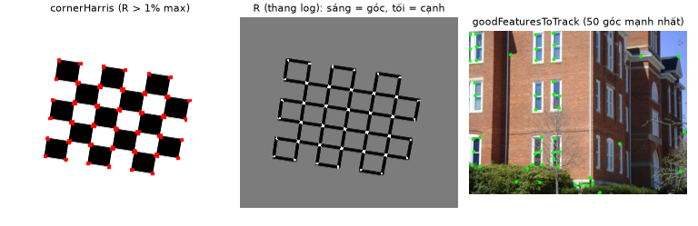
-
Lưu ý: góc Harris/Shi-Tomasi bất biến với xoay nhưng không bất biến với tỷ lệ: một góc khi phóng to nhìn qua cửa sổ nhỏ có thể chỉ còn là cạnh cong → cần SIFT
- Ứng dụng:
- Chọn điểm để theo dõi bằng optical flow (Lucas-Kanade)
- Tìm góc bàn cờ khi hiệu chỉnh camera
25. Feature Detectors & Descriptors - SIFT, FAST, BRIEF, ORB Bản nháp – chưa review
Gắn với: Bài 20: Phát hiện và So khớp đặc trưng (Feature Detection and Matching)
- Keypoint (detector): tìm điểm đặc biệt (vị trí, tỷ lệ, hướng)
- Descriptor: mô tả vùng quanh keypoint bằng một vector → để so khớp giữa các ảnh
| Thuật toán | Loại | Descriptor | Norm khi so khớp | Bất biến tỷ lệ / xoay | Tốc độ | Bản quyền |
|---|---|---|---|---|---|---|
| SIFT | Detector + descriptor | 128 số thực | NORM_L2 |
Có / Có | Chậm | Hết hạn 2020, có trong OpenCV chính từ 4.4 |
| SURF | Detector + descriptor | 64 số thực | NORM_L2 |
Có / Có | Nhanh hơn SIFT | Vẫn non-free (contrib) |
| FAST | Chỉ detector | - | - | Không / Không | Rất nhanh | Tự do |
| BRIEF | Chỉ descriptor | 128/256/512 bit | NORM_HAMMING |
Không / Không | Rất nhanh | Contrib (xfeatures2d) |
| ORB | Detector + descriptor | 256 bit (32 byte) | NORM_HAMMING |
Có (kim tự tháp) / Có | Nhanh | Tự do |
- Các hàm chung của mọi detector:
kp = detector.detect(gray, mask): tìm keypointkp, des = detector.compute(gray, kp): tính descriptor cho keypoint có sẵnkp, des = detector.detectAndCompute(gray, mask): làm cả hai- Mỗi
cv.KeyPointcó:pt(x, y),size(đường kính vùng),angle,response(độ mạnh),octave(tầng kim tự tháp) - Vẽ:
cv.drawKeypoints(img, kp, None, flags=cv.DRAW_MATCHES_FLAGS_DRAW_RICH_KEYPOINTS)→ vẽ cả kích thước và hướng
-
SIFT (Scale-Invariant Feature Transform) - David Lowe, 2004
- B1. Tìm cực trị trong không gian tỷ lệ
- LoG với \(\sigma\) khác nhau phát hiện đốm (blob) ở các kích thước khác nhau, nhưng LoG tốn kém
- Xấp xỉ LoG bằng DoG (Difference of Gaussians): hiệu hai ảnh làm mờ với \(\sigma\) và \(k\sigma\), làm trên từng tầng kim tự tháp (octave)
- Một pixel là cực trị nếu lớn/nhỏ nhất so với 8 lân cận cùng tỷ lệ và 9 + 9 lân cận ở tỷ lệ trên và dưới
- Tham số gợi ý: 4 octave, 5 mức tỷ lệ, \(\sigma = 1.6\), \(k = \sqrt{2}\)
- B2. Lọc keypoint
- Loại điểm tương phản thấp: ngưỡng
contrastThreshold(mặc định 0.04) - Loại điểm nằm trên cạnh (DoG phản hồi mạnh ở cạnh): dùng tỷ số trị riêng giống Harris, ngưỡng
edgeThreshold(mặc định 10)
- Loại điểm tương phản thấp: ngưỡng
- B3. Gán hướng: histogram hướng gradient 36 bins quanh keypoint, lấy đỉnh cao nhất; đỉnh nào > 80% đỉnh cao nhất thì tạo thêm keypoint với hướng đó → bất biến với xoay
- B4. Descriptor: vùng 16x16 quanh keypoint chia thành 16 ô 4x4, mỗi ô một histogram 8 hướng → 4 x 4 x 8 = 128 chiều
- B5. So khớp: láng giềng gần nhất + ratio test (xem phần Feature Matching)
sift = cv.SIFT_create() kp, des = sift.detectAndCompute(gray, None) # des: (số keypoint, 128) float32 img2 = cv.drawKeypoints(gray, kp, None, flags=cv.DRAW_MATCHES_FLAGS_DRAW_RICH_KEYPOINTS)
- B1. Tìm cực trị trong không gian tỷ lệ
-
FAST (Features from Accelerated Segment Test) - Rosten & Drummond, 2006
- Xét vòng tròn 16 pixel quanh pixel p (cường độ \(I_p\)), ngưỡng t
- p là góc nếu có n pixel liên tiếp trên vòng đều sáng hơn \(I_p + t\) hoặc đều tối hơn \(I_p - t\)
- Bài báo chọn n = 12; OpenCV mặc định
TYPE_9_16(n = 9 trên vòng 16)
- Bài báo chọn n = 12; OpenCV mặc định
- Kiểm tra nhanh: xét pixel 1, 9 rồi 5, 13 trước, loại được phần lớn điểm không phải góc
- Bản dùng machine learning (cây quyết định ID3) để chọn thứ tự kiểm tra tối ưu
- Non-maximum suppression: hai góc kề nhau giữ góc có tổng chênh lệch tuyệt đối với 16 pixel lớn hơn
- Mặc định:
threshold=10,nonmaxSuppression=True
fast = cv.FastFeatureDetector_create(threshold=40) kp = fast.detect(img, None) print(fast.getThreshold(), fast.getNonmaxSuppression(), fast.getType()) fast.setNonmaxSuppression(False) # tắt NMS → nhiều điểm hơn hẳn
-
BRIEF (Binary Robust Independent Elementary Features)
- Chỉ là descriptor, cần detector khác (FAST, STAR...)
- Làm mờ vùng ảnh, chọn \(n_d\) cặp điểm (p, q): \(I(p) < I(q)\) thì bit = 1, ngược lại 0 → chuỗi \(n_d\) bit
- \(n_d\) = 128, 256 hoặc 512 bit; OpenCV mặc định 256 bit = 32 byte
- So khớp bằng khoảng cách Hamming (đếm bit khác nhau, XOR + popcount) → rất nhanh
- Không bất biến với xoay
- Nằm trong
opencv-contrib-python:cv.xfeatures2d.BriefDescriptorExtractor_create()
-
ORB (Oriented FAST and Rotated BRIEF) - Rublee et al., 2011, thay thế miễn phí cho SIFT/SURF
- Detector: FAST trên kim tự tháp ảnh (bất biến tỷ lệ) + xếp hạng bằng điểm Harris, giữ N điểm tốt nhất
- Hướng: vector từ tâm vùng tới trọng tâm cường độ (intensity centroid) tính bằng moment
- Descriptor: rBRIEF = BRIEF được xoay theo hướng keypoint (rời rạc hóa theo bước 12°) và chọn các cặp điểm ít tương quan
- Tham số chính của
cv.ORB_create():nfeatures: số keypoint tối đa (mặc định 500)scoreType:cv.ORB_HARRIS_SCORE(mặc định) hoặccv.ORB_FAST_SCOREWTA_K: số điểm so sánh mỗi lần; 2 (mặc định) → dùngNORM_HAMMING, 3 hoặc 4 → dùngNORM_HAMMING2
orb = cv.ORB_create(nfeatures=500) kp, des = orb.detectAndCompute(img, None) # des: (N, 32) uint8 img2 = cv.drawKeypoints(img, kp, None, color=(0, 255, 0), flags=0)
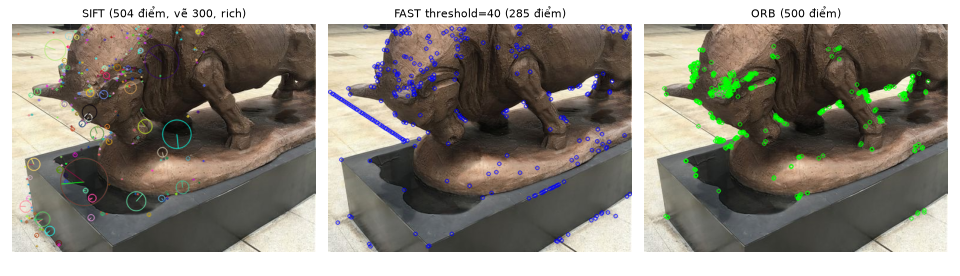
-
Chọn thuật toán:
- Cần chính xác, ảnh thay đổi tỷ lệ/góc nhìn nhiều → SIFT
- Cần nhanh, thời gian thực, thiết bị yếu → ORB
- Chỉ cần điểm để theo dõi (optical flow) → FAST hoặc Shi-Tomasi
26. Feature Matching Bản nháp – chưa review
Gắn với: Bài 20: Phát hiện và So khớp đặc trưng (Feature Detection and Matching)
| Matcher | Cách làm | Khi nào dùng |
|---|---|---|
cv.BFMatcher |
Brute-Force: so mỗi descriptor với mọi descriptor bên kia | Ít descriptor, cần kết quả chính xác |
cv.FlannBasedMatcher |
Tìm láng giềng gần đúng bằng cây (KD-tree, LSH) | Nhiều descriptor (hàng nghìn trở lên), cần nhanh |
- Brute-Force Matcher:
bf = cv.BFMatcher(normType, crossCheck)normType: cách đo khoảng cách- SIFT, SURF (số thực) →
cv.NORM_L2(mặc định) - ORB, BRIEF, BRISK (nhị phân) →
cv.NORM_HAMMING; ORB vớiWTA_K= 3 hoặc 4 →cv.NORM_HAMMING2
- SIFT, SURF (số thực) →
crossCheck=True: chỉ giữ cặp (i, j) nếu j là gần nhất của i và i là gần nhất của j → kết quả nhất quán hơn
- Hai cách so khớp:
matches = bf.match(des1, des2): mỗi descriptor lấy 1 cặp tốt nhấtmatches = bf.knnMatch(des1, des2, k=2): mỗi descriptor lấy k cặp tốt nhất → dùng cho ratio test
- Kết quả là các đối tượng
DMatch:distance: khoảng cách giữa hai descriptor, càng nhỏ càng tốtqueryIdx: chỉ số descriptor trong ảnh 1 (query) →kp1[m.queryIdx].pttrainIdx: chỉ số descriptor trong ảnh 2 (train) →kp2[m.trainIdx].ptimgIdx: chỉ số ảnh train (khi so với nhiều ảnh)
-
ORB + Brute-Force
orb = cv.ORB_create() kp1, des1 = orb.detectAndCompute(img1, None) kp2, des2 = orb.detectAndCompute(img2, None) bf = cv.BFMatcher(cv.NORM_HAMMING, crossCheck=True) matches = bf.match(des1, des2) matches = sorted(matches, key=lambda m: m.distance) # tốt nhất lên đầu img3 = cv.drawMatches(img1, kp1, img2, kp2, matches[:30], None, flags=cv.DrawMatchesFlags_NOT_DRAW_SINGLE_POINTS)
-
Ratio test của Lowe
- Với mỗi descriptor lấy 2 láng giềng gần nhất m, n
- Chỉ nhận m nếu
m.distance < 0.7 * n.distance(0.7 - 0.8): cặp tốt nhất phải tốt hơn hẳn cặp thứ hai. Nếu hai cặp gần bằng nhau thì đặc trưng không phân biệt được (ví dụ cửa sổ lặp lại) → loại - Không dùng chung với
crossCheck=True
sift = cv.SIFT_create() kp1, des1 = sift.detectAndCompute(img1, None) kp2, des2 = sift.detectAndCompute(img2, None) bf = cv.BFMatcher() # NORM_L2 matches = bf.knnMatch(des1, des2, k=2) good = [[m] for m, n in matches if m.distance < 0.75 * n.distance] # drawMatchesKnn nhận list các list img3 = cv.drawMatchesKnn(img1, kp1, img2, kp2, good, None, flags=cv.DrawMatchesFlags_NOT_DRAW_SINGLE_POINTS)
-
FLANN Matcher (Fast Library for Approximate Nearest Neighbors)
- Cần hai dict tham số:
index_params: thuật toán dựng chỉ mục- SIFT/SURF:
dict(algorithm=1, trees=5)(FLANN_INDEX_KDTREE = 1) - ORB:
dict(algorithm=6, table_number=6, key_size=12, multi_probe_level=1)(FLANN_INDEX_LSH = 6)
- SIFT/SURF:
search_params:dict(checks=50)- số lần duyệt cây, càng lớn càng chính xác nhưng chậm hơn
FLANN_INDEX_KDTREE = 1 index_params = dict(algorithm=FLANN_INDEX_KDTREE, trees=5) search_params = dict(checks=50) flann = cv.FlannBasedMatcher(index_params, search_params) matches = flann.knnMatch(des1, des2, k=2) good = [m for m, n in matches if m.distance < 0.7 * n.distance]
- Với LSH (ORB),
knnMatchcó thể trả về ít hơn 2 cặp cho một descriptor → kiểm tralen(pair) == 2trước khi táchm, n
- Cần hai dict tham số:
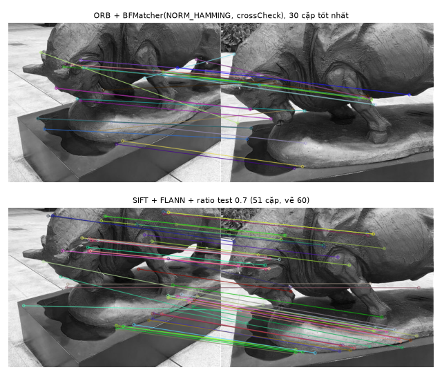
- Sau khi so khớp vẫn còn cặp sai (outlier) → dùng RANSAC khi ước lượng homography / ma trận cơ bản để loại (xem phần Homography)
27. Feature Matching + Homography Bản nháp – chưa review
Gắn với: Bài 25: Ghép ảnh và Tạo ảnh khảm (Image Stitching and Mosaicking)
- Mục tiêu: tìm một vật thể đã biết trong ảnh khác, kể cả khi bị xoay, co giãn, nhìn nghiêng
-
Homography H (ma trận 3x3, 8 bậc tự do) ánh xạ điểm trên một mặt phẳng giữa hai ảnh:
\[s \begin{bmatrix} x' \\ y' \\ 1 \end{bmatrix} = H \begin{bmatrix} x \\ y \\ 1 \end{bmatrix}\]
-
Cần tối thiểu 4 cặp điểm đúng để tính H
- Các bước:
- B1: Tìm keypoint + descriptor ở ảnh vật thể và ảnh cảnh (SIFT, ORB)
- B2: So khớp + ratio test → các cặp tốt
good - B3: Nếu đủ cặp (ví dụ
MIN_MATCH_COUNT = 10) thì tính H bằngcv.findHomographyvới RANSAC - B4: Biến đổi 4 góc ảnh vật thể bằng
cv.perspectiveTransform→ khung vật thể trong ảnh cảnh
- Hàm:
M, mask = cv.findHomography(srcPoints, dstPoints, method, ransacReprojThreshold)srcPoints,dstPoints:float32shape (N, 1, 2)method:0(bình phương tối thiểu, dùng mọi điểm),cv.RANSAC,cv.LMEDS,cv.RHOransacReprojThreshold: sai số chiếu lại tối đa (pixel) để coi là inlier, thường 3-5mask: mảng 0/1, 1 = inlier
- RANSAC: lặp nhiều lần {chọn ngẫu nhiên 4 cặp → tính H → đếm số cặp khớp với H}, giữ H có nhiều inlier nhất → bền vững với các cặp so khớp sai
MIN_MATCH_COUNT = 10
sift = cv.SIFT_create()
kp1, des1 = sift.detectAndCompute(img1, None) # img1: ảnh vật thể
kp2, des2 = sift.detectAndCompute(img2, None) # img2: ảnh cảnh
flann = cv.FlannBasedMatcher(dict(algorithm=1, trees=5), dict(checks=50))
matches = flann.knnMatch(des1, des2, k=2)
good = [m for m, n in matches if m.distance < 0.7 * n.distance]
if len(good) > MIN_MATCH_COUNT:
src_pts = np.float32([kp1[m.queryIdx].pt for m in good]).reshape(-1, 1, 2)
dst_pts = np.float32([kp2[m.trainIdx].pt for m in good]).reshape(-1, 1, 2)
M, mask = cv.findHomography(src_pts, dst_pts, cv.RANSAC, 5.0)
matchesMask = mask.ravel().tolist()
h, w = img1.shape
pts = np.float32([[0, 0], [0, h - 1], [w - 1, h - 1], [w - 1, 0]]).reshape(-1, 1, 2)
dst = cv.perspectiveTransform(pts, M) # 4 góc vật thể trong ảnh cảnh
img2 = cv.polylines(img2, [np.int32(dst)], True, 255, 3, cv.LINE_AA)
else:
matchesMask = None
draw_params = dict(matchColor=(0, 255, 0), singlePointColor=None,
matchesMask=matchesMask, flags=2) # chỉ vẽ inlier
img3 = cv.drawMatches(img1, kp1, img2, kp2, good, None, **draw_params)
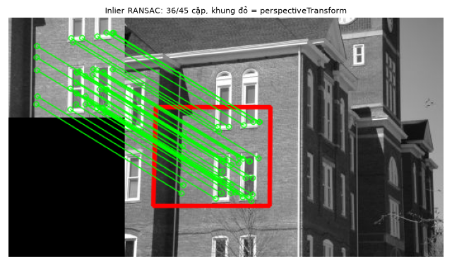
- Phân biệt các hàm:
cv.getPerspectiveTransform(4 điểm, 4 điểm): đúng 4 cặp, không lọc nhiễucv.findHomography(N điểm, N điểm, cv.RANSAC): N ≥ 4 cặp, có lọc outliercv.perspectiveTransform(points, M): biến đổi điểmcv.warpPerspective(img, M, dsize): biến đổi cả ảnh
- Ứng dụng:
- Ghép ảnh panorama: tính H giữa hai ảnh rồi
warpPerspectivemột ảnh sang hệ tọa độ ảnh kia - Nhận diện và định vị bìa sách, biển báo, poster
- Thực tế tăng cường (AR) trên mặt phẳng
- Ghép ảnh panorama: tính H giữa hai ảnh rồi
28. Meanshift và Camshift Bản nháp – chưa review
Gắn với: Bài 21: Luồng quang học và Ước lượng chuyển động (Optical Flow and Motion Estimation)
| Hàm | Cửa sổ theo dõi | Trả về |
|---|---|---|
cv.meanShift() |
Kích thước cố định, không xoay | (số vòng lặp, (x, y, w, h)) |
cv.CamShift() |
Tự đổi kích thước và xoay theo vật thể | (RotatedRect, (x, y, w, h)) |
-
Meanshift
- Ý tưởng: cho một tập điểm (ví dụ ảnh backprojection) và một cửa sổ
- Tính trọng tâm các điểm trong cửa sổ
- Dịch tâm cửa sổ về trọng tâm đó
- Lặp lại đến khi cửa sổ không dịch nữa → cửa sổ nằm ở vùng có mật độ điểm cao nhất
- Áp dụng để theo dõi vật thể trong video:
- Frame đầu: chọn cửa sổ chứa vật thể, tính histogram Hue của vùng đó
- Mỗi frame sau: backprojection histogram lên frame → ảnh xác suất → chạy meanShift từ cửa sổ cũ
- Mask khi tính histogram: bỏ các pixel có S, V thấp (gần xám, gần đen) vì Hue của chúng không đáng tin
term_crit: điều kiện dừng, ví dụ tối đa 10 vòng hoặc dịch ít hơn 1 pixel
cap = cv.VideoCapture("video.mp4") ret, frame = cap.read() # Cửa sổ ban đầu chứa vật thể x, y, w, h = 300, 200, 100, 50 track_window = (x, y, w, h) # Histogram Hue của vùng vật thể roi = frame[y:y + h, x:x + w] hsv_roi = cv.cvtColor(roi, cv.COLOR_BGR2HSV) mask = cv.inRange(hsv_roi, np.array((0., 60., 32.)), np.array((180., 255., 255.))) roi_hist = cv.calcHist([hsv_roi], [0], mask, [180], [0, 180]) cv.normalize(roi_hist, roi_hist, 0, 255, cv.NORM_MINMAX) term_crit = (cv.TERM_CRITERIA_EPS | cv.TERM_CRITERIA_COUNT, 10, 1) while True: ret, frame = cap.read() if not ret: break hsv = cv.cvtColor(frame, cv.COLOR_BGR2HSV) dst = cv.calcBackProject([hsv], [0], roi_hist, [0, 180], 1) ret, track_window = cv.meanShift(dst, track_window, term_crit) x, y, w, h = track_window cv.rectangle(frame, (x, y), (x + w, y + h), 255, 2)
- Hạn chế: kích thước cửa sổ cố định → vật lại gần camera (to ra) hay đi xa (nhỏ lại) thì cửa sổ không theo kịp
- Ý tưởng: cho một tập điểm (ví dụ ảnh backprojection) và một cửa sổ
-
Camshift (Continuously Adaptive Meanshift) - Gary Bradski, 1998
- Chạy meanShift đến khi hội tụ, rồi cập nhật kích thước cửa sổ theo \(s = 2\sqrt{M_{00}/256}\) và tính hướng của elip khớp nhất
- Chạy lại meanShift với cửa sổ mới, lặp đến khi đạt độ chính xác yêu cầu
- Code giống meanShift, chỉ đổi dòng theo dõi và cách vẽ:
ret, track_window = cv.CamShift(dst, track_window, term_crit) pts = cv.boxPoints(ret) # ret là RotatedRect ((cx, cy), (w, h), angle) pts = np.intp(pts) frame = cv.polylines(frame, [pts], True, 255, 2)
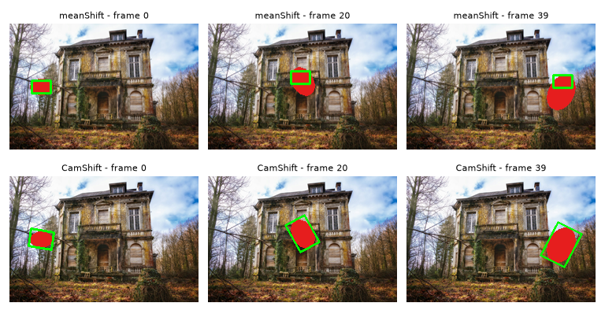
- Hạn chế chung:
- Chỉ dựa vào màu: nền có màu giống vật thể → dễ trôi sang nền
- Vật thể bị che khuất hoàn toàn hoặc di chuyển quá nhanh (ra khỏi cửa sổ cũ) → mất dấu
- Ứng dụng:
- Theo dõi khuôn mặt, bàn tay, quả bóng có màu nổi bật
- Theo dõi nhẹ, chạy được trên thiết bị yếu
29. Optical Flow Bản nháp – chưa review
Gắn với: Bài 21: Luồng quang học và Ước lượng chuyển động (Optical Flow and Motion Estimation)
| Hàm | Loại | Kết quả |
|---|---|---|
cv.calcOpticalFlowPyrLK() |
Thưa (sparse), Lucas-Kanade | Vị trí mới của một tập điểm |
cv.calcOpticalFlowFarneback() |
Dày (dense), Gunnar Farneback | Vector chuyển động \((u, v)\) cho mọi pixel |
- Optical flow: chuyển động biểu kiến của các pixel giữa hai frame liên tiếp, là trường vector 2D
- Giả thiết:
- Độ sáng không đổi khi pixel di chuyển (brightness constancy)
- Chuyển động nhỏ giữa hai frame
- Các pixel lân cận chuyển động giống nhau
-
Phương trình optical flow:
-
\(I(x, y, t) = I(x + dx, y + dy, t + dt)\), khai triển Taylor →
\[I_x u + I_y v + I_t = 0\]
-
\(I_x, I_y\): gradient không gian, \(I_t\): gradient theo thời gian, \((u, v)\): vector chuyển động cần tìm
- Một phương trình, hai ẩn → không giải được tại một pixel đơn lẻ (aperture problem)
-
-
Lucas-Kanade
-
Giả sử cả vùng 3x3 quanh điểm chuyển động như nhau → 9 phương trình, 2 ẩn → giải bằng bình phương tối thiểu:
\[\begin{bmatrix} u \\ v \end{bmatrix} = \begin{bmatrix} \sum I_x^2 & \sum I_x I_y \\ \sum I_x I_y & \sum I_y^2 \end{bmatrix}^{-1} \begin{bmatrix} -\sum I_x I_t \\ -\sum I_y I_t \end{bmatrix}\]
-
Ma trận nghịch đảo giống ma trận M của Harris → giải tốt nhất tại các góc → chọn điểm bằng
goodFeaturesToTrack - Chuyển động lớn → dùng kim tự tháp ảnh: ở tầng nhỏ, chuyển động lớn trở thành nhỏ
- Hàm:
p1, st, err = cv.calcOpticalFlowPyrLK(old_gray, frame_gray, p0, None, **lk_params)p0: điểm cần theo dõi,float32shape (N, 1, 2)p1: vị trí mớist: 1 nếu tìm thấy điểm, 0 nếu mấtwinSize: kích thước cửa sổ,maxLevel: số tầng kim tự tháp
feature_params = dict(maxCorners=100, qualityLevel=0.3, minDistance=7, blockSize=7) lk_params = dict(winSize=(15, 15), maxLevel=2, criteria=(cv.TERM_CRITERIA_EPS | cv.TERM_CRITERIA_COUNT, 10, 0.03)) ret, old_frame = cap.read() old_gray = cv.cvtColor(old_frame, cv.COLOR_BGR2GRAY) p0 = cv.goodFeaturesToTrack(old_gray, mask=None, **feature_params) while True: ret, frame = cap.read() if not ret: break frame_gray = cv.cvtColor(frame, cv.COLOR_BGR2GRAY) p1, st, err = cv.calcOpticalFlowPyrLK(old_gray, frame_gray, p0, None, **lk_params) good_new = p1[st == 1] # chỉ giữ điểm còn theo dõi được good_old = p0[st == 1] for new, old in zip(good_new, good_old): a, b = new.ravel() c, d = old.ravel() cv.line(frame, (int(a), int(b)), (int(c), int(d)), (0, 255, 0), 2) old_gray = frame_gray.copy() p0 = good_new.reshape(-1, 1, 2)
- Điểm mất dần theo thời gian → tài liệu khuyên định kỳ tìm lại điểm mới (sample
lk_track.pycòn kiểm tra ngược để loại điểm sai)
-
-
Dense Optical Flow - Farneback
- Tính flow cho mọi pixel, kết quả shape (H, W, 2)
flow = cv.calcOpticalFlowFarneback(prev, next, None, pyr_scale, levels, winsize, iterations, poly_n, poly_sigma, flags)- Tham số hay dùng:
0.5, 3, 15, 3, 5, 1.2, 0
- Tham số hay dùng:
- Trực quan hóa bằng HSV: Hue = hướng, Value = độ lớn
flow = cv.calcOpticalFlowFarneback(prvs, next, None, 0.5, 3, 15, 3, 5, 1.2, 0) mag, ang = cv.cartToPolar(flow[..., 0], flow[..., 1]) hsv = np.zeros_like(frame) hsv[..., 0] = ang * 180 / np.pi / 2 # radian → 0-179 của OpenCV hsv[..., 1] = 255 hsv[..., 2] = cv.normalize(mag, None, 0, 255, cv.NORM_MINMAX) bgr = cv.cvtColor(hsv, cv.COLOR_HSV2BGR)
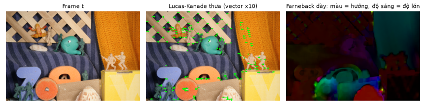
- Ứng dụng:
- Theo dõi điểm, ổn định video (video stabilization)
- Phát hiện vật chuyển động, ước lượng hướng di chuyển
- Nội suy frame, nén video
30. Background Subtraction Bản nháp – chưa review
Gắn với: Bài 21: Luồng quang học và Ước lượng chuyển động (Optical Flow and Motion Estimation)
- Mục tiêu: từ video camera cố định, tách các vật đang chuyển động (foreground) khỏi nền tĩnh
- Cách đơn giản nhất: trừ frame hiện tại cho ảnh nền trống → nhưng thường không có sẵn ảnh nền, và nền còn thay đổi (ánh sáng, lá cây rung, bóng đổ)
- OpenCV dùng mô hình thống kê cho từng pixel, cập nhật liên tục theo thời gian
| Hàm | Thuật toán | Tham số chính |
|---|---|---|
cv.createBackgroundSubtractorMOG2() |
Mỗi pixel là hỗn hợp K phân phối Gauss, tự chọn số Gauss phù hợp cho từng pixel | history=500, varThreshold=16, detectShadows=True |
cv.createBackgroundSubtractorKNN() |
K láng giềng gần nhất trên các mẫu quá khứ của pixel | history=500, dist2Threshold=400, detectShadows=True |
cv.bgsegm.createBackgroundSubtractorMOG() |
MOG gốc, số Gauss cố định | Trong opencv-contrib-python |
cv.bgsegm.createBackgroundSubtractorGMG() |
Ước lượng Bayes, cần khoảng 120 frame đầu để học nền | Trong opencv-contrib-python |
history: số frame dùng để học nền;varThreshold/dist2Threshold: ngưỡng để coi pixel là khác nền- Phát hiện bóng (
detectShadows=True): pixel bóng có giá trị 127 trong mask (vật thể = 255, nền = 0)- Pixel bóng: tối hơn nền nhưng cùng sắc màu → không bị tính là vật thể
- Muốn bỏ bóng:
_, fg = cv.threshold(mask, 200, 255, cv.THRESH_BINARY) - Không cần bóng thì đặt
detectShadows=Falsecho nhanh hơn
backSub = cv.createBackgroundSubtractorMOG2() # hoặc createBackgroundSubtractorKNN()
cap = cv.VideoCapture("vtest.avi")
while True:
ret, frame = cap.read()
if not ret:
break
fgMask = backSub.apply(frame) # vừa cập nhật mô hình vừa trả về mask
# learningRate: -1 tự động, 0 không học nữa, 1 học lại từ đầu theo frame hiện tại
# fgMask = backSub.apply(frame, learningRate=-1)
backSub.getBackgroundImage(): ảnh nền mà mô hình đang ước lượng
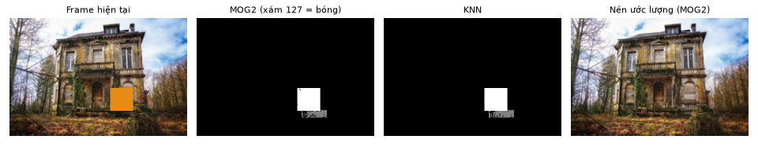
- Hậu xử lý thường dùng:
- Bỏ bóng bằng threshold
- Opening để xóa nhiễu nhỏ, closing để lấp lỗ trong vật thể
findContours+ lọc theo diện tích → khung bao từng vật thể
- Hạn chế:
- Camera phải đứng yên; camera rung hoặc di chuyển → cả ảnh thành foreground
- Vật đứng yên lâu sẽ dần bị học thành nền
- Ứng dụng:
- Camera giám sát: phát hiện người, xe chuyển động
- Đếm phương tiện, đếm người qua cửa
31. Camera Calibration Bản nháp – chưa review
Gắn với: Bài 27: Hiệu chỉnh camera (Camera Calibration)
- Camera giá rẻ làm ảnh bị méo (distortion); hiệu chỉnh camera tìm ra các thông số để sửa méo và để đo đạc 3D
-
Hai loại méo:
-
Méo xuyên tâm (radial): đường thẳng bị cong, càng xa tâm ảnh càng cong (méo thùng - barrel, méo gối - pincushion)
\[x_{distorted} = x (1 + k_1 r^2 + k_2 r^4 + k_3 r^6)\]
\[y_{distorted} = y (1 + k_1 r^2 + k_2 r^4 + k_3 r^6)\]
-
Méo tiếp tuyến (tangential): thấu kính không song song với cảm biến → một phần ảnh trông gần hơn
\[x_{distorted} = x + [2 p_1 x y + p_2 (r^2 + 2 x^2)]\]
\[y_{distorted} = y + [p_1 (r^2 + 2 y^2) + 2 p_2 x y]\]
-
Hệ số méo theo thứ tự OpenCV: \((k_1, k_2, p_1, p_2, k_3)\)
-
-
Thông số nội (intrinsic) - riêng của camera, chỉ cần tính một lần:
\[K = \begin{bmatrix} f_x & 0 & c_x \\ 0 & f_y & c_y \\ 0 & 0 & 1 \end{bmatrix}\]
- \(f_x, f_y\): tiêu cự (đơn vị pixel), \((c_x, c_y)\): tâm quang học
-
Thông số ngoại (extrinsic): vector xoay
rvecvà tịnh tiếntvec, biến đổi từ hệ tọa độ thế giới sang hệ tọa độ camera, khác nhau với mỗi ảnh - Chuẩn bị:
- In bàn cờ (chessboard), chụp ít nhất 10 ảnh ở nhiều góc và vị trí khác nhau
- Object points: tọa độ 3D các góc trong bàn cờ. Bàn cờ phẳng nên đặt Z = 0, mỗi ô dài 1 đơn vị: (0,0,0), (1,0,0), ..., (6,5,0)
- Image points: tọa độ 2D các góc đó trong ảnh, tìm bằng
cv.findChessboardCorners patternSizelà số góc trong (cols, rows), không phải số ô: bàn cờ 8x8 ô có 7x7 góc trong- Có thể dùng lưới hình tròn với
cv.findCirclesGrid(), cần ít ảnh hơn
-
Tìm góc:
criteria = (cv.TERM_CRITERIA_EPS + cv.TERM_CRITERIA_MAX_ITER, 30, 0.001) cols, rows = 7, 6 # số góc trong objp = np.zeros((cols * rows, 3), np.float32) objp[:, :2] = np.mgrid[0:cols, 0:rows].T.reshape(-1, 2) # (0,0,0), (1,0,0), ... objpoints, imgpoints = [], [] # điểm 3D thật, điểm 2D trên ảnh for fname in glob.glob("*.jpg"): img = cv.imread(fname) gray = cv.cvtColor(img, cv.COLOR_BGR2GRAY) ret, corners = cv.findChessboardCorners(gray, (cols, rows), None) if ret: objpoints.append(objp) corners2 = cv.cornerSubPix(gray, corners, (11, 11), (-1, -1), criteria) imgpoints.append(corners2) cv.drawChessboardCorners(img, (cols, rows), corners2, ret)
-
Hiệu chỉnh:
ret, mtx, dist, rvecs, tvecs = cv.calibrateCamera(objpoints, imgpoints, gray.shape[::-1], None, None)
ret: sai số chiếu lại RMS (pixel), càng gần 0 càng tốt, thường < 1mtx: ma trận K;dist: hệ số méo;rvecs,tvecs: tư thế bàn cờ trong từng ảnhgray.shape[::-1]= (w, h)
-
Sửa méo:
- Tinh chỉnh ma trận camera:
newK, roi = cv.getOptimalNewCameraMatrix(mtx, dist, (w, h), alpha, (w, h))alpha = 0: cắt hết vùng đen, có thể mất pixel ở rìaalpha = 1: giữ mọi pixel gốc, xuất hiện vùng đen ở rìaroi: vùng hợp lệ để cắt ảnh
- Cách 1:
cv.undistort
dst = cv.undistort(img, mtx, dist, None, newK) x, y, w, h = roi dst = dst[y:y + h, x:x + w]
- Cách 2: tính bảng ánh xạ một lần, dùng lại cho nhiều frame video → nhanh hơn
mapx, mapy = cv.initUndistortRectifyMap(mtx, dist, None, newK, (w, h), cv.CV_32FC1) dst = cv.remap(img, mapx, mapy, cv.INTER_LINEAR)
- Tinh chỉnh ma trận camera:
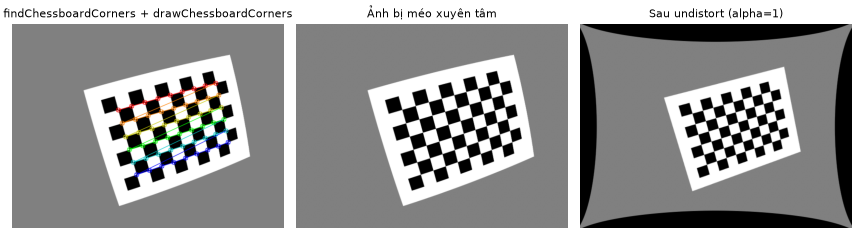
- Hình trên: 12 ảnh bàn cờ mô phỏng với méo thùng \(k_1 = -0.35\) và \(f_x = 600\);
calibrateCameraước lượng lại được \(k_1 \approx -0.36\), \(f_x \approx 600.1\), RMS ≈ 0.1 pixel -
Sai số chiếu lại (re-projection error): chiếu ngược object points bằng thông số vừa tìm, so với image points
mean_error = 0 for i in range(len(objpoints)): imgpoints2, _ = cv.projectPoints(objpoints[i], rvecs[i], tvecs[i], mtx, dist) # tổng bình phương sai số / số điểm = sai số bình phương trung bình của ảnh i mean_error += cv.norm(imgpoints[i], imgpoints2, cv.NORM_L2SQR) / len(imgpoints2) print("total error:", mean_error / len(objpoints))
-
Lưu kết quả để dùng lại:
np.savez("calib.npz", mtx=mtx, dist=dist)
32. Pose Estimation Bản nháp – chưa review
Gắn với: Bài 27: Hiệu chỉnh camera (Camera Calibration)
- Khi đã có thông số nội (
mtx,dist) từ hiệu chỉnh camera, ta tìm được tư thế (pose) của vật thể so với camera: vật xoay thế nào, nằm ở đâu - Bài toán PnP (Perspective-n-Point): biết N điểm 3D trên vật và vị trí 2D tương ứng trong ảnh → tìm
rvec,tvec - Các hàm:
| Hàm | Ý nghĩa |
|---|---|
cv.solvePnP(objectPoints, imagePoints, mtx, dist) |
Tìm rvec, tvec |
cv.solvePnPRansac(...) |
Như trên nhưng loại outlier bằng RANSAC |
cv.projectPoints(points3D, rvec, tvec, mtx, dist) |
Chiếu điểm 3D lên ảnh |
cv.Rodrigues(rvec) |
Vector xoay (3x1) ↔ ma trận xoay (3x3) |
cv.drawFrameAxes(img, mtx, dist, rvec, tvec, length) |
Vẽ nhanh 3 trục tọa độ |
rveclà vector xoay dạng Rodrigues: hướng của vector là trục xoay, độ dài là góc xoay (radian)- Ví dụ trong tài liệu: vẽ trục tọa độ 3D lên góc bàn cờ
- Trục X (xanh dương), Y (xanh lá), Z (đỏ) dài 3 ô
- Trục Z lấy giá trị âm để hướng về phía camera (hệ tọa độ bàn cờ có Z hướng vào trong bàn cờ)
with np.load("calib.npz") as X:
mtx, dist = X["mtx"], X["dist"]
criteria = (cv.TERM_CRITERIA_EPS + cv.TERM_CRITERIA_MAX_ITER, 30, 0.001)
objp = np.zeros((7 * 6, 3), np.float32)
objp[:, :2] = np.mgrid[0:7, 0:6].T.reshape(-1, 2)
axis = np.float32([[3, 0, 0], [0, 3, 0], [0, 0, -3]]).reshape(-1, 3)
def draw(img, corners, imgpts):
corner = tuple(corners[0].ravel().astype("int32"))
imgpts = imgpts.astype("int32")
img = cv.line(img, corner, tuple(imgpts[0].ravel()), (255, 0, 0), 5)
img = cv.line(img, corner, tuple(imgpts[1].ravel()), (0, 255, 0), 5)
img = cv.line(img, corner, tuple(imgpts[2].ravel()), (0, 0, 255), 5)
return img
gray = cv.cvtColor(img, cv.COLOR_BGR2GRAY)
ret, corners = cv.findChessboardCorners(gray, (7, 6), None)
if ret:
corners2 = cv.cornerSubPix(gray, corners, (11, 11), (-1, -1), criteria)
ret, rvec, tvec = cv.solvePnP(objp, corners2, mtx, dist)
imgpts, jac = cv.projectPoints(axis, rvec, tvec, mtx, dist) # chiếu 3 đầu trục lên ảnh
img = draw(img, corners2, imgpts)
-
Vẽ hình hộp: chiếu 8 đỉnh của hình lập phương rồi nối lại
cube = np.float32([[0, 0, 0], [0, 3, 0], [3, 3, 0], [3, 0, 0], [0, 0, -3], [0, 3, -3], [3, 3, -3], [3, 0, -3]]) imgpts, _ = cv.projectPoints(cube, rvec, tvec, mtx, dist) imgpts = np.int32(imgpts).reshape(-1, 2) img = cv.drawContours(img, [imgpts[:4]], -1, (0, 255, 0), -3) # mặt đáy for i, j in zip(range(4), range(4, 8)): img = cv.line(img, tuple(imgpts[i]), tuple(imgpts[j]), (255, 0, 0), 3) # cột img = cv.drawContours(img, [imgpts[4:]], -1, (0, 0, 255), 3) # mặt trên
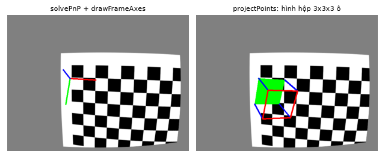
-
Hình trái dùng
cv.drawFrameAxes, màu theo quy ước X đỏ, Y xanh lá, Z xanh dương (khác màu trong hàmdrawtự viết ở trên) -
Ứng dụng:
- Thực tế tăng cường (AR): đặt vật thể ảo đúng phối cảnh lên bàn cờ, marker ArUco
- Robot gắp vật: biết vị trí và hướng của vật so với camera
- Ước lượng hướng đầu người từ các điểm mốc khuôn mặt
33. Epipolar Geometry Bản nháp – chưa review
Gắn với: Bài 28: Hình học epipolar (Epipolar Geometry)
- Một ảnh mất thông tin độ sâu: mọi điểm trên tia OX đều chiếu về cùng một pixel. Có ảnh thứ hai thì các điểm đó chiếu thành một đường thẳng trên ảnh thứ hai
- Các khái niệm:
- Epiline: đường trên ảnh 2 chứa mọi vị trí có thể của điểm tương ứng với x ở ảnh 1 → tìm điểm tương ứng chỉ cần dò dọc epiline (bài toán 1D)
- Epipolar plane: mặt phẳng chứa X và tâm hai camera
- Epipole: giao của đường nối hai tâm camera với mặt phẳng ảnh; mọi epiline đều đi qua epipole (có thể nằm ngoài ảnh)
- Ma trận cơ bản (Fundamental Matrix) F và ma trận thiết yếu (Essential Matrix) E:
- Ràng buộc epipolar: \(x'^T F x = 0\) với x, x' là cặp điểm tương ứng (tọa độ pixel)
- E chứa phép xoay và tịnh tiến giữa hai camera, dùng tọa độ đã chuẩn hóa; F = E + thông số nội: \(F = K'^{-T} E K^{-1}\)
- F là ma trận 3x3, hạng 2, 7 bậc tự do
- Epiline trên ảnh 2 ứng với x: \(l' = F x\); trên ảnh 1 ứng với x': \(l = F^T x'\)
- Cần tối thiểu 8 cặp điểm (thuật toán 8 điểm), nên dùng RANSAC/LMedS để chống outlier
- Hàm:
F, mask = cv.findFundamentalMat(pts1, pts2, method):method=cv.FM_8POINT,cv.FM_LMEDS,cv.FM_RANSAC;mask= 1 với inlierlines = cv.computeCorrespondEpilines(points, whichImage, F)whichImage = 1: điểm thuộc ảnh 1 → trả về epiline trên ảnh 2whichImage = 2: điểm thuộc ảnh 2 → trả về epiline trên ảnh 1- Mỗi đường là (a, b, c) với \(ax + by + c = 0\)
sift = cv.SIFT_create()
kp1, des1 = sift.detectAndCompute(img1, None)
kp2, des2 = sift.detectAndCompute(img2, None)
flann = cv.FlannBasedMatcher(dict(algorithm=1, trees=5), dict(checks=50))
matches = flann.knnMatch(des1, des2, k=2)
pts1, pts2 = [], []
for m, n in matches:
if m.distance < 0.8 * n.distance:
pts2.append(kp2[m.trainIdx].pt)
pts1.append(kp1[m.queryIdx].pt)
pts1, pts2 = np.int32(pts1), np.int32(pts2)
F, mask = cv.findFundamentalMat(pts1, pts2, cv.FM_LMEDS)
pts1 = pts1[mask.ravel() == 1] # chỉ giữ inlier
pts2 = pts2[mask.ravel() == 1]
def drawlines(img1, img2, lines, pts1, pts2):
"""Vẽ epiline lên img1, chấm điểm tương ứng lên cả hai ảnh."""
r, c = img1.shape
img1 = cv.cvtColor(img1, cv.COLOR_GRAY2BGR)
img2 = cv.cvtColor(img2, cv.COLOR_GRAY2BGR)
for r_, pt1, pt2 in zip(lines, pts1, pts2):
color = tuple(np.random.randint(0, 255, 3).tolist())
x0, y0 = map(int, [0, -r_[2] / r_[1]]) # giao với cạnh trái (x = 0)
x1, y1 = map(int, [c, -(r_[2] + r_[0] * c) / r_[1]]) # giao với cạnh phải
img1 = cv.line(img1, (x0, y0), (x1, y1), color, 1)
img1 = cv.circle(img1, tuple(map(int, pt1)), 5, color, -1)
img2 = cv.circle(img2, tuple(map(int, pt2)), 5, color, -1)
return img1, img2
# epiline trên ảnh trái ứng với điểm ở ảnh phải
lines1 = cv.computeCorrespondEpilines(pts2.reshape(-1, 1, 2), 2, F).reshape(-1, 3)
img5, img6 = drawlines(img1, img2, lines1, pts1, pts2)
# epiline trên ảnh phải ứng với điểm ở ảnh trái
lines2 = cv.computeCorrespondEpilines(pts1.reshape(-1, 1, 2), 1, F).reshape(-1, 3)
img3, img4 = drawlines(img2, img1, lines2, pts2, pts1)
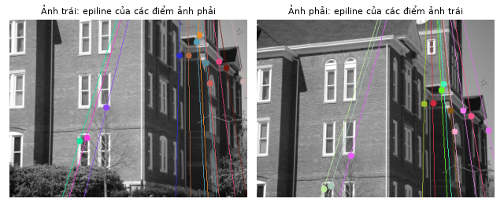
- Nếu camera thứ hai chỉ dịch ngang so với camera thứ nhất thì các epiline song song và nằm ngang (trường hợp stereo đã rectify). Trong hình trên các epiline không song song mà hội tụ về một epipole nằm ngoài khung ảnh
- Kết quả F rất nhạy với chất lượng điểm: điểm sai, ít điểm, hoặc mọi điểm nằm trên cùng một mặt phẳng → F sai
- Khi đã biết thông số nội K: dùng
cv.findEssentialMatrồicv.recoverPoseđể lấy R, t giữa hai camera (bước đầu của Structure from Motion) - Ứng dụng:
- Thu hẹp vùng tìm điểm tương ứng trong stereo matching
- Chỉnh ảnh song song (rectification) trước khi tính độ sâu
- Khôi phục chuyển động camera trong SfM, Visual Odometry
34. Depth Map from Stereo Images Bản nháp – chưa review
Gắn với: Bài 22: So khớp ảnh nổi (Stereo Matching)
- Hai camera đặt song song, cách nhau đoạn B (baseline), cùng tiêu cự f
- Một điểm 3D chiếu lên ảnh trái tại x, ảnh phải tại x' → disparity \(d = x - x'\)
-
Độ sâu:
\[Z = \frac{B \cdot f}{d}\]
- Disparity lớn → vật ở gần; disparity nhỏ → vật ở xa
-
Điều kiện: hai ảnh phải được chỉnh song song (rectified): điểm tương ứng nằm trên cùng một hàng → chỉ cần tìm theo hàng ngang
- Chưa rectify thì dùng
cv.stereoRectify+cv.initUndistortRectifyMap+cv.remap(cần hiệu chỉnh stereo trước)
- Chưa rectify thì dùng
| Hàm | Thuật toán | Đặc điểm |
|---|---|---|
cv.StereoBM_create() |
Block Matching: so khớp khối dọc theo hàng | Nhanh, nhiều lỗ ở vùng ít kết cấu |
cv.StereoSGBM_create() |
Semi-Global Block Matching: thêm ràng buộc trơn theo nhiều hướng | Chậm hơn, mịn và đầy đủ hơn |
- Tham số chính:
numDisparities: khoảng disparity cần tìm, phải chia hết cho 16blockSize: kích thước khối so khớp, số lẻ (BM: 5-21, SGBM: 3-11)minDisparity: disparity nhỏ nhất (thường 0)- SGBM thêm:
P1,P2: phạt khi disparity hai pixel kề nhau chênh 1 / chênh nhiều hơn 1;P2 > P1. Gợi ý:P1 = 8 * cn * blockSize²,P2 = 32 * cn * blockSize²(cn = số kênh)uniquenessRatio: loại kết quả nếu khối tốt nhất không tốt hơn hẳn khối thứ hai (5-15)speckleWindowSize,speckleRange: lọc các đốm nhiễu nhỏ
- Đầu vào là ảnh xám 8-bit (SGBM nhận được cả ảnh màu)
- Kết quả kiểu
int16, đã nhân 16 (4 bit phần thập phân) → disparity thật = kết quả / 16; pixel không khớp được có giá trị âm
imgL = cv.imread("tsukuba_l.png", cv.IMREAD_GRAYSCALE)
imgR = cv.imread("tsukuba_r.png", cv.IMREAD_GRAYSCALE)
stereo = cv.StereoBM_create(numDisparities=32, blockSize=9)
disparity = stereo.compute(imgL, imgR).astype(np.float32) / 16
sgbm = cv.StereoSGBM_create(minDisparity=0, numDisparities=32, blockSize=5,
P1=8 * 5 ** 2, P2=32 * 5 ** 2,
uniquenessRatio=10, speckleWindowSize=100, speckleRange=2)
disparity2 = sgbm.compute(imgL, imgR).astype(np.float32) / 16
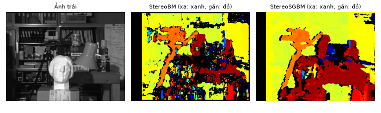
numDisparitiesphải đủ lớn hơn disparity lớn nhất của cảnh: cặp tsukuba trong repo có disparity tới khoảng 20-30 nên dùng 32 (tài liệu OpenCV dùng 16 với cặp tsukuba gốc)- Đổi disparity thành tọa độ 3D:
points3D = cv.reprojectImageTo3D(disparity, Q), với Q lấy từcv.stereoRectify - Hạn chế: vùng không có kết cấu (tường trơn), vùng lặp lại, vùng bị che ở một ảnh → disparity sai hoặc trống
- Ứng dụng:
- Đo khoảng cách cho robot, xe tự hành
- Tách tiền cảnh theo độ sâu, làm mờ hậu cảnh (hiệu ứng chân dung)
35. K-Means Clustering Bản nháp – chưa review
Gắn với: Bài 19: Phân cụm — k-Means, GMM và DBSCAN (Clustering — k-Means, GMMs, and DBSCAN)
- K-Means chia dữ liệu thành K cụm:
- B1: chọn ngẫu nhiên K tâm cụm
- B2: gán mỗi điểm vào tâm gần nhất
- B3: tính lại tâm = trung bình các điểm trong cụm
- Lặp B2-B3 đến khi tâm không đổi (hoặc đạt điều kiện dừng)
- Mục tiêu: cực tiểu tổng bình phương khoảng cách từ điểm tới tâm cụm của nó (compactness)
- Hàm:
compactness, labels, centers = cv.kmeans(data, K, bestLabels, criteria, attempts, flags)
| Tham số | Ý nghĩa |
|---|---|
data |
np.float32, mỗi hàng là một điểm (shape (N, số đặc trưng)) |
K |
Số cụm |
bestLabels |
Nhãn khởi tạo, thường None |
criteria |
(type, max_iter, epsilon): cv.TERM_CRITERIA_EPS (dừng khi tâm dịch < epsilon), cv.TERM_CRITERIA_MAX_ITER (dừng sau max_iter vòng), hoặc cộng cả hai |
attempts |
Số lần chạy với khởi tạo khác nhau, trả về lần có compactness nhỏ nhất |
flags |
cv.KMEANS_RANDOM_CENTERS hoặc cv.KMEANS_PP_CENTERS (k-means++, khởi tạo tốt hơn) |
| Kết quả | Ý nghĩa |
|---|---|
compactness |
Tổng bình phương khoảng cách tới tâm cụm |
labels |
Nhãn cụm (0, 1, ...) của từng điểm, shape (N, 1) |
centers |
Tọa độ các tâm cụm, shape (K, số đặc trưng) |
- Dữ liệu 1 đặc trưng (ví dụ chiều cao):
datashape (N, 1) -
Nhiều đặc trưng (ví dụ chiều cao + cân nặng):
datashape (N, 2), chia điểm theo nhãn:A = Z[labels.ravel() == 0]Z = np.float32(np.vstack((X, Y))) # (N, 2) criteria = (cv.TERM_CRITERIA_EPS + cv.TERM_CRITERIA_MAX_ITER, 10, 1.0) ret, label, center = cv.kmeans(Z, 2, None, criteria, 10, cv.KMEANS_RANDOM_CENTERS) A = Z[label.ravel() == 0] B = Z[label.ravel() == 1]
-
Lượng tử hóa màu (Color Quantization): giảm số màu trong ảnh xuống K màu
- Mỗi pixel là một điểm 3 đặc trưng (B, G, R) →
reshape((-1, 3)) - Sau khi phân cụm, thay mỗi pixel bằng màu của tâm cụm
Z = np.float32(img.reshape((-1, 3))) criteria = (cv.TERM_CRITERIA_EPS + cv.TERM_CRITERIA_MAX_ITER, 10, 1.0) K = 8 ret, label, center = cv.kmeans(Z, K, None, criteria, 10, cv.KMEANS_RANDOM_CENTERS) center = np.uint8(center) res = center[label.flatten()] # tra màu tâm cho từng pixel res2 = res.reshape(img.shape)
- Mỗi pixel là một điểm 3 đặc trưng (B, G, R) →
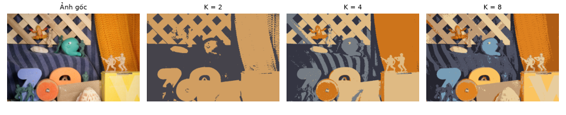
- Lưu ý:
- Phải chọn K trước; K-Means giả định cụm có dạng tròn, kích thước gần nhau → kém với cụm không lồi (xem DBSCAN trong bài)
- Kết quả phụ thuộc khởi tạo → dùng
attempts > 1hoặcKMEANS_PP_CENTERS
- Ứng dụng:
- Giảm số màu để nén ảnh, tạo hiệu ứng poster
- Phân đoạn ảnh theo màu
- Tạo "từ điển hình ảnh" (bag of visual words) từ các descriptor
36. kNN và SVM Bản nháp – chưa review
Gắn với: Bài 30: Phép chiếu — Ý tưởng trung tâm (Projection — The Central Idea)
- Lưu ý phiên bản: module
cv.mlcó trong OpenCV 4.x. Bảnopencv-python5.0 không còncv.ml→ dùng OpenCV 4.x hoặc scikit-learn (KNeighborsClassifier,SVC) - Quy ước dữ liệu của
cv.ml:- Dữ liệu huấn luyện:
np.float32, mỗi hàng một mẫu → truyền cờcv.ml.ROW_SAMPLE - Nhãn:
np.float32hoặcnp.int32, shape (N, 1)
- Dữ liệu huấn luyện:
-
k-Nearest Neighbour (kNN)
- Không có bước học thật sự: lưu lại toàn bộ dữ liệu
- Phân loại điểm mới: tìm k điểm gần nhất, lớp nào chiếm đa số thì gán lớp đó
- k nhỏ → nhạy với nhiễu; k lớn → biên quyết định mượt hơn nhưng có thể lấn sang lớp khác; thường chọn k lẻ để tránh hòa
- Có thể đặt trọng số theo khoảng cách (điểm gần quan trọng hơn)
knn = cv.ml.KNearest_create() knn.train(trainData, cv.ml.ROW_SAMPLE, responses) ret, results, neighbours, dist = knn.findNearest(newcomer, k=3) # results: nhãn dự đoán; neighbours: nhãn của k láng giềng; dist: khoảng cách tới chúng
- Ví dụ nhận dạng chữ số viết tay (OCR) trong tài liệu:
- Ảnh
digits.pnggồm 5000 chữ số, mỗi chữ số 20x20 → làm phẳng thành vector 400 chiều - 2500 mẫu huấn luyện, 2500 mẫu kiểm tra, k = 5 → độ chính xác khoảng 91%
- Ảnh
gray = cv.cvtColor(cv.imread("digits.png"), cv.COLOR_BGR2GRAY) cells = [np.hsplit(row, 100) for row in np.vsplit(gray, 50)] # 50 hàng x 100 cột ô 20x20 x = np.array(cells) # (50, 100, 20, 20) train = x[:, :50].reshape(-1, 400).astype(np.float32) # (2500, 400) test = x[:, 50:100].reshape(-1, 400).astype(np.float32) k = np.arange(10) train_labels = np.repeat(k, 250)[:, np.newaxis] test_labels = train_labels.copy() knn = cv.ml.KNearest_create() knn.train(train, cv.ml.ROW_SAMPLE, train_labels) ret, result, neighbours, dist = knn.findNearest(test, k=5) accuracy = np.count_nonzero(result == test_labels) * 100.0 / result.size
- Nhược điểm: lưu toàn bộ dữ liệu, dự đoán phải so với mọi mẫu → chậm và tốn bộ nhớ khi dữ liệu lớn
-
Support Vector Machine (SVM)
- Tìm siêu phẳng phân chia hai lớp với lề (margin) lớn nhất
- Chỉ các điểm nằm sát biên (support vectors) quyết định siêu phẳng → sau khi học không cần giữ toàn bộ dữ liệu
- Dữ liệu không tách được bằng đường thẳng → kernel trick: ánh xạ ngầm sang không gian nhiều chiều hơn (RBF, đa thức)
- Tham số:
C: C lớn → phạt nặng điểm bị phân loại sai, lề hẹp, dễ overfit; C nhỏ → lề rộng, chấp nhận vài điểm saigamma(RBF): gamma lớn → biên quyết định uốn lượn sát từng điểm
svm = cv.ml.SVM_create() svm.setType(cv.ml.SVM_C_SVC) svm.setKernel(cv.ml.SVM_RBF) # hoặc cv.ml.SVM_LINEAR svm.setC(10.0) svm.setGamma(0.001) svm.train(trainData, cv.ml.ROW_SAMPLE, responses) result = svm.predict(testData)[1] sv = svm.getSupportVectors() svm.save("svm_data.dat") # tải lại: cv.ml.SVM_load("svm_data.dat")
svm.trainAuto(...)tự tìm C, gamma tốt nhất bằng cross-validation- Ví dụ OCR với SVM trong tài liệu: chỉnh nghiêng chữ số bằng moment (deskew), tính đặc trưng HOG (histogram hướng gradient, 64 chiều), huấn luyện SVM tuyến tính → độ chính xác khoảng 94%
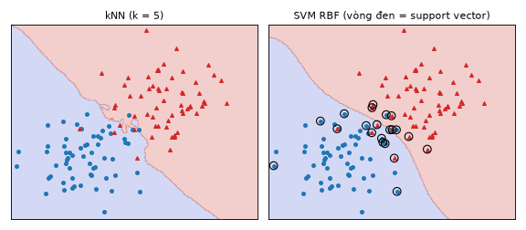
- Hình trên: hai lớp điểm 2D. kNN cho biên quyết định gồ ghề theo từng điểm; SVM RBF cho biên mượt, chỉ phụ thuộc vào các support vector (vòng đen)
- Ứng dụng:
- Phân loại đặc trưng thủ công (HOG, histogram màu) trước thời deep learning: HOG + SVM phát hiện người đi bộ
- kNN dùng cho tìm kiếm ảnh tương tự theo vector đặc trưng
37. Image Denoising - Non-local Means Bản nháp – chưa review
Gắn với: Bài 14: Các bộ lọc phi tuyến (Nonlinear Filters)
- Các bộ lọc đã học (Gaussian, median, bilateral) chỉ lấy trung bình trong vùng lân cận nhỏ → làm mờ chi tiết
- Ý tưởng Non-local Means:
- Nhiễu có trung bình bằng 0 → lấy trung bình nhiều lần quan sát của cùng một pixel sẽ triệt tiêu nhiễu
- Một ảnh tĩnh không có nhiều lần quan sát, nhưng ảnh có nhiều mảng (patch) giống nhau ở nhiều nơi
- Với mỗi pixel: tìm các patch giống patch quanh nó trong một vùng tìm kiếm lớn, lấy trung bình có trọng số theo độ giống nhau
- Giữ chi tiết tốt hơn Gaussian nhưng chậm hơn nhiều
| Hàm | Đầu vào |
|---|---|
cv.fastNlMeansDenoising() |
Một ảnh xám |
cv.fastNlMeansDenoisingColored() |
Một ảnh màu (chuyển sang CIELAB, khử nhiễu riêng độ sáng L và màu AB) |
cv.fastNlMeansDenoisingMulti() |
Nhiều frame xám liên tiếp (video) |
cv.fastNlMeansDenoisingColoredMulti() |
Nhiều frame màu |
- Tham số:
h: cường độ lọc; h lớn → khử nhiễu mạnh nhưng mất chi tiết, h nhỏ → giữ chi tiết nhưng còn nhiễu (tài liệu dùng 10)hColor(bản màu): nhưhcho kênh màu, thường bằnghtemplateWindowSize: kích thước patch, số lẻ, khuyến nghị 7searchWindowSize: kích thước vùng tìm patch, số lẻ, khuyến nghị 21
img = cv.imread("die.png")
dst = cv.fastNlMeansDenoisingColored(img, None, 10, 10, 7, 21)
# src dst h hColor template search
- Với video (bản Multi):
imgToDenoiseIndex: chỉ số frame cần khử nhiễu trong danh sáchtemporalWindowSize: số frame lân cận dùng để khử nhiễu, phải là số lẻ- Ví dụ: 5 frame,
imgToDenoiseIndex = 2,temporalWindowSize = 3→ dùng frame 1, 2, 3 để khử nhiễu frame 2
cap = cv.VideoCapture("vtest.avi")
img = [cap.read()[1] for i in range(5)]
gray = [np.float64(cv.cvtColor(i, cv.COLOR_BGR2GRAY)) for i in img]
# thêm nhiễu Gauss độ lệch chuẩn 10 để thử
noise = np.random.randn(*gray[1].shape) * 10
noisy = [np.uint8(np.clip(i + noise, 0, 255)) for i in gray]
dst = cv.fastNlMeansDenoisingMulti(noisy, 2, 5, None, 4, 7, 35)
# idx tws dst h tmpl search
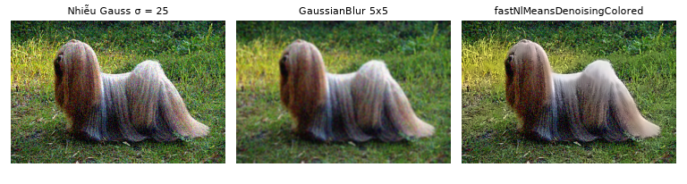
- So sánh nhanh:
- Gaussian: nhanh, mờ cả biên
- Median: tốt với nhiễu muối tiêu
- Bilateral: giữ biên, nhưng vùng phẳng có thể bị bệt
- Non-local Means: giữ chi tiết tốt nhất trong nhóm, chậm nhất
38. Image Inpainting Bản nháp – chưa review
Gắn với: Bài 14: Các bộ lọc phi tuyến (Nonlinear Filters)
- Inpainting: khôi phục vùng ảnh bị hỏng hoặc bị xóa bằng thông tin từ các pixel xung quanh (vết xước, vết bẩn, chữ chèn lên ảnh)
- Cần hai đầu vào:
- Ảnh hỏng
- Mask 8-bit 1 kênh, pixel khác 0 là vùng cần vá, cùng kích thước ảnh
- Hàm:
dst = cv.inpaint(src, inpaintMask, inpaintRadius, flags)inpaintRadius: bán kính vùng lân cận dùng để vá mỗi điểm (thường 3)flags: một trong hai thuật toán:
| Flag | Thuật toán | Cơ chế |
|---|---|---|
cv.INPAINT_TELEA |
Fast Marching Method (Alexandru Telea, 2004) | Vá dần từ biên vùng hỏng vào trong; mỗi pixel = trung bình có trọng số của các pixel đã biết lân cận, ưu tiên pixel gần, gần hướng pháp tuyến biên và nằm trên đường viền |
cv.INPAINT_NS |
Navier-Stokes (Bertalmio et al., 2001) | Dựa trên phương trình động lực học chất lỏng: kéo dài các đường đẳng sáng (isophote) từ vùng đã biết vào vùng hỏng, giữ liên tục gradient |
img = cv.imread("messi_2.jpg")
mask = cv.imread("mask2.png", cv.IMREAD_GRAYSCALE) # trắng = vùng cần vá
dst_telea = cv.inpaint(img, mask, 3, cv.INPAINT_TELEA)
dst_ns = cv.inpaint(img, mask, 3, cv.INPAINT_NS)
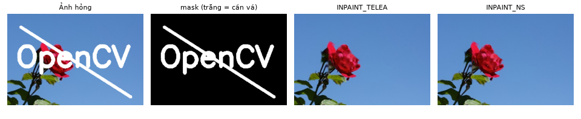
- Cách tạo mask:
- Vẽ tay bằng chuột (dùng
setMouseCallback) lên ảnh đen cùng kích thước - Threshold nếu vùng hỏng có màu đặc trưng (ví dụ vết trắng)
- Nên dilate mask một chút để phủ cả viền của vùng hỏng, nếu không viền sẽ bị kéo vào ảnh vá
- Vẽ tay bằng chuột (dùng
- Hạn chế: chỉ tốt với vùng hỏng mảnh, nhỏ (nét chữ, vết xước). Vùng lớn có kết cấu phức tạp sẽ bị mờ, bệt → cần phương pháp dựa trên patch hoặc deep learning
- Ứng dụng:
- Phục chế ảnh cũ bị xước
- Xóa chữ, ngày tháng in trên ảnh
- Xóa vật thể nhỏ khỏi ảnh
39. High Dynamic Range (HDR) Bản nháp – chưa review
Gắn với: Bài 26: Sự hình thành ảnh (Image Formation)
- Cảm biến 8-bit chỉ ghi được 256 mức sáng → cảnh có chênh lệch sáng tối lớn (trong nhà nhìn ra cửa sổ) thì hoặc cháy vùng sáng, hoặc tối đen vùng tối
- HDR: chụp nhiều ảnh cùng khung hình với thời gian phơi sáng khác nhau, ghép lại để giữ chi tiết cả vùng sáng lẫn vùng tối
- Hai hướng:
| Hướng | Thuật toán | Cần thời gian phơi sáng? | Kết quả |
|---|---|---|---|
| Ghép thành ảnh HDR rồi nén dải | cv.createMergeDebevec(), cv.createMergeRobertson() |
Có | Ảnh HDR float32 (độ rọi), phải tone mapping để hiển thị |
| Exposure fusion | cv.createMergeMertens() |
Không | Ảnh hiển thị được ngay, giá trị [0, 1] |
-
B1. Nạp ảnh và thời gian phơi sáng
img_fn = ["img0.jpg", "img1.jpg", "img2.jpg", "img3.jpg"] img_list = [cv.imread(fn) for fn in img_fn] exposure_times = np.array([15.0, 2.5, 0.25, 0.0333], dtype=np.float32) # giây
-
B2. Ghép thành ảnh HDR (Debevec, Robertson)
merge_debevec = cv.createMergeDebevec() hdr_debevec = merge_debevec.process(img_list, times=exposure_times.copy()) merge_robertson = cv.createMergeRobertson() hdr_robertson = merge_robertson.process(img_list, times=exposure_times.copy())
-
B3. Tone mapping: nén ảnh HDR về [0, 1] để hiển thị
tonemap1 = cv.createTonemap(gamma=2.2) res_debevec = tonemap1.process(hdr_debevec.copy())
- OpenCV còn có
createTonemapDrago,createTonemapReinhard,createTonemapMantiuk
- OpenCV còn có
-
B4. Exposure fusion (Mertens): không cần thời gian phơi sáng, không cần tone mapping; chọn pixel tốt ở mỗi ảnh theo độ tương phản, độ bão hòa và mức phơi sáng hợp lý
merge_mertens = cv.createMergeMertens() res_mertens = merge_mertens.process(img_list)
-
B5. Chuyển sang 8-bit để lưu
res_debevec_8bit = np.clip(res_debevec * 255, 0, 255).astype("uint8") res_mertens_8bit = np.clip(res_mertens * 255, 0, 255).astype("uint8") cv.imwrite("fusion_mertens.jpg", res_mertens_8bit)
-
Ước lượng đường cong đáp ứng camera (CRF): ánh xạ độ rọi thật → giá trị pixel, thường phi tuyến
cal_debevec = cv.createCalibrateDebevec() crf_debevec = cal_debevec.process(img_list, times=exposure_times) hdr_debevec = merge_debevec.process(img_list, times=exposure_times.copy(), response=crf_debevec.copy())
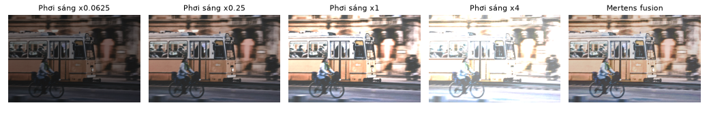
- Hình trên là mô phỏng: 4 mức phơi sáng được tạo từ một ảnh thường (không phải ảnh HDR thật), chỉ để minh họa Mertens fusion chọn vùng phơi sáng tốt từ mỗi ảnh
- Lưu ý: các ảnh phải thẳng hàng (dùng chân máy, hoặc căn chỉnh bằng
cv.createAlignMTB()); vật chuyển động giữa các lần chụp gây bóng ma (ghosting) - Ứng dụng: chế độ HDR trên điện thoại, chụp nội thất, phong cảnh ngược sáng
40. Face Detection - Haar Cascade Bản nháp – chưa review
Gắn với: Bài 40: Phát hiện đối tượng bằng cửa sổ trượt (Object Detection from Sliding Windows)
- Lưu ý phiên bản:
cv.CascadeClassifiercó trong OpenCV 4.x. Bảnopencv-python5.0 không còn → dùng OpenCV 4.x, hoặc bộ phát hiện mặt bằng DNNcv.FaceDetectorYN(YuNet, có cả trong 4.x và 5.0), chính xác hơn nhiều - Thuật toán Viola-Jones (2001): phát hiện đối tượng bằng cửa sổ trượt + cascade các bộ phân loại
- Đặc trưng Haar: hiệu tổng pixel giữa vùng trắng và vùng đen của các mẫu hình chữ nhật (cạnh, đường, tâm)
- Ví dụ: vùng mắt tối hơn vùng má, sống mũi sáng hơn hai bên mắt
- Cửa sổ 24x24 có hơn 160.000 đặc trưng
- Ảnh tích phân (integral image): tổng pixel của mọi hình chữ nhật chỉ cần 4 phép truy cập → tính đặc trưng Haar rất nhanh
- AdaBoost: chọn ra vài nghìn đặc trưng tốt nhất trong 160.000 (bài báo: khoảng 6000), mỗi đặc trưng là một bộ phân loại yếu, ghép lại thành bộ phân loại mạnh
- Cascade: chia các đặc trưng thành nhiều tầng (bài báo: 38 tầng)
- Tầng đầu chỉ vài đặc trưng, loại ngay phần lớn cửa sổ không phải mặt
- Cửa sổ chỉ là mặt nếu vượt qua tất cả các tầng
- Trung bình mỗi cửa sổ chỉ cần tính khoảng 10 đặc trưng → chạy thời gian thực
- OpenCV có sẵn các file XML đã huấn luyện (mặt chính diện, mắt, nụ cười, toàn thân, biển số Nga...) trong thư mục
cv.data.haarcascades - Hàm:
objects = classifier.detectMultiScale(gray, scaleFactor, minNeighbors, minSize)scaleFactor: mỗi lần thu nhỏ ảnh bao nhiêu để quét ở nhiều tỷ lệ (1.1 = giảm 10%); nhỏ → chính xác hơn nhưng chậm hơnminNeighbors: số khung chồng lấp tối thiểu để giữ một phát hiện; lớn → ít phát hiện sai nhưng dễ sótminSize,maxSize: giới hạn kích thước đối tượng- Trả về danh sách
(x, y, w, h)
face_cascade = cv.CascadeClassifier(cv.data.haarcascades + "haarcascade_frontalface_default.xml")
eyes_cascade = cv.CascadeClassifier(cv.data.haarcascades + "haarcascade_eye.xml")
gray = cv.cvtColor(img, cv.COLOR_BGR2GRAY)
gray = cv.equalizeHist(gray) # chuẩn hóa ánh sáng
faces = face_cascade.detectMultiScale(gray, scaleFactor=1.1, minNeighbors=10, minSize=(60, 60))
for (x, y, w, h) in faces:
cv.rectangle(img, (x, y), (x + w, y + h), (255, 0, 0), 2)
roi_gray = gray[y:y + h, x:x + w] # chỉ tìm mắt bên trong mặt
eyes = eyes_cascade.detectMultiScale(roi_gray)
for (ex, ey, ew, eh) in eyes:
cv.rectangle(img, (x + ex, y + ey), (x + ex + ew, y + ey + eh), (0, 255, 0), 2)
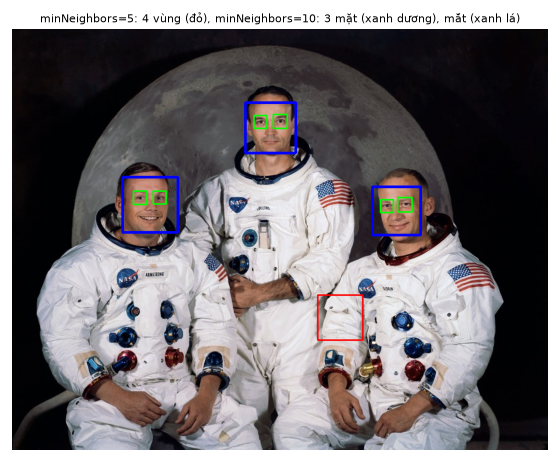
- Hình trên:
minNeighbors=5cho 4 vùng, trong đó có 1 vùng nhận nhầm (khung đỏ ở tay); tăng lênminNeighbors=10chỉ còn đúng 3 khuôn mặt - Hạn chế:
- Chỉ tốt với mặt chính diện, nghiêng nhiều hoặc bị che thì sót
- Nhạy với ánh sáng, nhiều phát hiện sai trên nền phức tạp
- Hiện nay nên dùng bộ phát hiện dựa trên deep learning (
cv.FaceDetectorYN, các mô hình trong modulecv.dnn)
- Có thể tự huấn luyện cascade bằng công cụ
opencv_traincascade(đã ngừng phát triển, chỉ còn ở nhánh OpenCV 3.4) - Ứng dụng: phát hiện mặt trên camera giá rẻ, thiết bị nhúng; bước đầu của nhận diện khuôn mặt